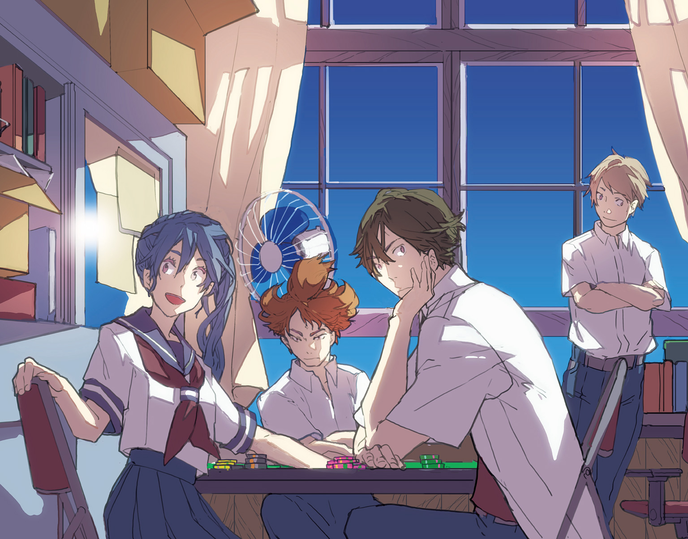

| スクールポーカーウォーズ 1 | |
| 維羽裕介 | |
この本は縦書きでレイアウトされています。
また、ご覧になる機種により、表示の差が認められることがあります。

この作品はフィクションです。
実在の人物・団体・事件などにはいっさい関係ありません。
――ベストは選べない。それでもベターを選んでいく。それがポーカーだ。
おそらく君はポーカーを知らないだろうから、少しだけ説明をさせてほしい。
日本の誰もが知っているポーカーは、すでにこの世から廃れ去っているのだ。
そう、五枚のトランプを手にして手札をチェンジするあれだ。個人的な所感を述べさせてもらえるのなら、あれはもうポーカーとさえ呼んじゃいけない代物だと思っている。あれじゃあ、ポーカー本来の肝である手札の読み合いや相手の裏をかく醍醐味をまったく味わえない。
ポーカーとは数学と論理学と心理学を用いた格闘技なのだ。たかがポーカーごときに大袈裟だと笑う人もいるかもしれないが、笑うのは今しばらくお待ちいただきたい。
これから説明するのはテキサス・ホールデム。
世界中のどこにあるカジノに行ってもプレイできる世界標準ルールのポーカーだ。
ポーカーの役を知っているのならルールは三分で覚えられる。
この東本郷中学校の生徒なら三人に二人はポーカーができるし、その二人のうちのどちらかはポーカーサークルに所属している。この学校でポーカーが爆発的ブームになった理由については伏せさせてほしい。大人の事情が絡んでいるので、ここに書けない事は先に謝っておく。
テキサス・ホールデムは世界大会だって毎年やっている。
例えば二〇一四年に行われたWorld Series of Pokerの参加者は約六七〇〇人。六九三位から二万ドル弱のしみったれた賞金が出始めて、一六二位から五万ドルを超えて、七二位から一〇万ドルに手が届く。その後加速度的に賞金額は上昇し、十位までいけば五六万ドル、八位で九四万ドルを超え、五位なら二一四万ドル、優勝すればおめでとう！ 一〇〇〇万ドル獲得だ。
その年は二十七歳のスウェーデン人が優勝したが、近年では体力のある二〇代の優勝者が台頭しつつある。世界大会の前年優勝者は二十三歳、その前年も二十四歳だ。興味があるなら是非参加してみるといい。参加費の一万ドルを支払えるなら、の話だが。
さて、ここまで読み進めた賢明なる読者諸氏の頭には、幾つかの疑問が浮かんでいるのではないだろうか。
ポーカーなんて運じゃないのか？
上手い下手なんて概念が存在するのか？
継続して勝つ事ができるのか？
――断言しよう、ポーカーは実力で勝てる。
確かにじゃんけん勝負のような運任せになる事はある。ポーカーとは実力と運がダンスしているようなゲームなのだ。ラッキーで逆転する事だってあるし、アンラッキーで逆転される事だってある、しかも割と頻繁に。
だが心配はいらない。
分散した確率もやがては収束する。常に最善の手を打っていれば、あらゆるシーンで期待値がプラスになるアクションを取っていれば、いずれは結果が追いついてくる。それは保証しよう。
おまけにポーカーは、ブラックジャックやルーレットのようなカジノと戦うゲームではない。カジノにやって来ているプレイヤー同士の対人戦なのだ。
カジノで儲けたいと思っているのなら、是非この点に着目してほしい。
ブラックジャックやルーレットが行われる時、カジノ側は必ず自分達に有利なルールを設定する。そりゃあそうだ、そうでなければカジノは潰れてしまう。短期的な増減の振れ幅はあるだろうが、長期的に見れば必ずカジノが得をするようにできている。
しかし、テキサス・ホールデムにはそれがない。
プレイヤー同士の対人戦だからこそ、同じテーブルに座るプレイヤーの中から一人の格下を見つける事さえできれば、自身の実力によって期待値を100％以上に持っていく事ができるのだ。
とは言え、カジノだって慈善事業でポーカールームを開いているわけではない。カジノの取り分は「レーキ」と呼ばれていて、毎ゲーム毎ゲーム、トリガーハッピーの弾丸のように飛び交い、最終的に勝者が総取りするチップの数％がレーキとしてカジノの懐に入るのだ。
実にうまいやり方だ。
どんな人間も負けが込んでいる時には金を出し渋るものだが、勝っている時は気持ち良く払う事ができる。それに、そのレーキとてわずか数％。株取引だって儲けの10％や20％くらい簡単に税金で持って行かれるし、君らのお父さんやお母さんの給与明細を見てみるとクーデターを起こしたくなるくらいの税金がさっ引かれている。ポーカーのレーキくらい大目に見てあげようってものだ。
自身の実力と適切な戦術、それとフィッシュを見つける目さえあれば、僕らは晴れて巨万の富を築ける。手に職を付けるとはこういう事を言うのかもしれない。
高名なディビッド・スクランスキーはポーカーというゲームの本質について、こう説いている。
「あなたが敵の手札を全て見る事ができた時、あなたにとって最適なプレイをすれば勝てる。もし敵があなたの手札を見る事ができた時、相手に最適ではないプレイをさせる事ができれば勝てる」
英語は苦手なのでずいぶんと意訳してしまったが、言いたいのはこういう事だ。
自分が一番強い事が分かれば精一杯賭け金をつり上げ、自分が負けている事が分かればさっさと降りる、もしくははったりで無理矢理降ろす。現実には相手の手札が分からない以上、常に難しい判断を迫られる。
ベストは選べない。それでもベターを選んでいく。それがポーカーだ。
――この世のありとあらゆる卑怯者は喜ぶべきだろう。
テレビゲームの嫌がらせが殴り合いに発展して友情を失った者、７並べでパスを続けて弟や妹を自滅に追い込んで泣かせたら親に激怒された者、モノポリーで家を四軒建てて顰蹙を買った者。ポーカーではそれらの恥ずべき、忌むべき所業をいとも容易く平然と行う精神が求められる。和気あいあいと楽しもうね！ とか、フェアプレイで頑張ろう！ という欺瞞に満ちたオブラートを取っ払い、その下に渦巻いている狡猾な感情、利潤の追求心、そんな誰でも持っているぎらぎらとした欲望が剝き出しになるのがポーカーだ。つまりどういう事かを端的に言うと、
ポーカーは性格の悪い奴にこそ向いている。
＊＊＊
――まぁ、こんなもんでいいか。
図書室の片隅に備え付けられたパソコンの前で大きく伸びをする。目尻のあたりを揉みながら小さく息を吸うと、古書とインクの独特な匂いが鼻をついた。
ポーカー審議会に寄稿文を命じられたのは一か月も前の話だが、定期試験の勉強をしていたらすっかり忘れてしまった。「締め切りは夏休みに入るまで」と聞いていたので、勢いだけで書き殴っていたら結論が酷い事になってしまったが、本当にそうなのだから仕方がない。
ディスプレイの向こうを横切った図書委員の女の子を一瞥しながら、隣の椅子に置いた鞄の中に手を突っ込む。手探りでソーダ味の飴を探し当てて口の中に放り込み、液晶ディスプレイの時計に目をやる。
午後二時十七分。
さすがに腹が減った。
定期試験を終えたばかりの図書室は、いつも以上の静けさに満たされている。
隣に並んだ古めかしいパソコンを眺めながら飴を舐める。常に順番待ちの情報処理室と違って図書室のパソコンが誰にも使われていないのは、このパソコンが図書検索専用に設定されているためだ。
しかし情報処理室のパソコンは「残虐なゲームや性表現、暴力表現等の有害情報が人格形成に影響を及ぼさないように」という趣旨のもと、中国もびっくりするくらい厳しいフィルタリングが施されている。
なにせ、まともに見られるページの方が少ない。
ニュースサイトにＮＧワードがあれば全て見られないし、学校のスタートページをハッキングした奴がページソースに卑猥な単語を入れた事でインターネットそのものが使えなくなり、解決までに一か月を要したという笑い話もある。
対して図書室のパソコンのトップページは図書検索画面で、通常の使い方であればそれ以外の用途に用いる事はできない。
が、世の中には色んな抜け穴がある。
図書検索画面の下の方にある「当サイトの利用にあたって」という、どう考えても誰も見ないようなリンクをクリックすると、そこには権利帰属や当サイトの一部もしくは全部を無断複写すると死刑みたいな決まり文句が書いてある。そのページの一番下にはほんの数ドット四方の真っ白なリンクが張られていて、それが検索エンジンに繫がっているのだ。そこまでいけば学内アカウントだろうと、私的なアカウントでつぶやいている校長のツイッターだろうと好きなサイトを閲覧できる。白い背景に紛れているからそんなところにリンクがあるなんて気付かないし、そもそもそんなところまでマウスカーソルを持っていこうという酔狂な輩も少ない。
誰が何のためにこんなものを組み込んだのか。その真相はすでに闇の中だが、このリンクを発見したのは昨年までこの学校に在籍していた女子生徒だ。
再び、目の前を図書委員の女の子が横切った。
「――なあ、君」
女の子が立ち止まる。
ゆっくりと振り向いた彼女が、眼鏡の奥の大きな瞳で自分を見つめる。一瞬遅れて後ろで縛った髪が身体の動きに連動する。上履きのストライプが緑なので同じ二年生のはずだが、見た事のない女の子だ。
その子が手にしている黄色い洋書を指差して、
「それ、ダニエル・ネグラーヌの『Power Hold'em Strategy』？」
女の子はそこで初めて本のタイトルを知ったかのように、細い眼鏡のフレームを持ち上げて洋書の標題をまじまじと見つめてから、
「そう......書いてあるね。返却されたんだけど、棚の場所が分からなくて」
再びディスプレイに目を落とす。
学内アカウントを開いて、ポーカー審議会宛てのテキストメールを作成する。
「ポーカーの洋書本はマガジンラックの隣だ。著者のファミリーネーム順になっていたと思う」
「本当に!? ありがとう！」
にっこり笑って歩き出す彼女を横目で見届けてから、送信ボタンをクリック。ついでに受信箱を確認する。
新規メールは三通。
一通目は英語のレポート提出が来週の金曜日に延期になった件。すでにレポートは作成してあるから問題なし、よってアーカイブ行き。
二通目はスパム。学校が管理しているアカウントだというのに、なんでまた有料のポーカー講習案内なんてものが送られて来るのか。まあ、これに関してはポーカーリーグのメールマガジンに学内アカウントで登録した自分が悪いのかもしれない。これはそのままゴミ箱行き。
三通目はポーカーサークル「うさぎ強盗団」からだった。
二年四組三番 浦原甚助様。
いつもお世話になっております。
現在、我々は夏期戦力強化トーナメント優勝を目標として鍛錬を続けており、
更なる飛躍のために外部顧問を招いた実力向上を計画しております。
つきましては校内個人戦第九位の実績を持つ浦原様にも御参加頂きたく、
まずはメールにて恐縮ですが、御連絡させて頂きました。
良い御返事をいただけます事を切に願っております。
うさぎ強盗団団長 岩渡竜司。
――唐突に脳裏に浮かぶ、一年春の公式個人戦。
初心者講習会でルールを覚え、見よう見まねで参戦してみたら、まぐれに次ぐまぐれで次々と有名プレイヤーを飛ばしていき、最後に残った九人しか座れないファイナルテーブルに進出してしまったのだ。当時は超弩級新人として大いに話題になり、新聞部の取材やらクラスメイトの羨望の眼差しで鼻高々だった。が、
嫌がらせみたいに礼儀正しいメールを見たまま、細く長い溜め息を吐く。
メールに記された「うさぎ強盗団」というサークル名を見据える。
うさぎ強盗団はここ一年間まったく公式戦に出ていなかったが、今年の春に突如として公式戦出場登録を行い、総合五位入賞という鮮烈な結果を残している。その大躍進の秘密は今もなお明らかにされていないが、その秘密を探れるのであれば、自分にも充分旨みはあると思う。
了承の返事を入力し、詳しい条件と日程表を要求する旨を打ち込んだ。夏期戦力強化トーナメントまでもう三週間くらいのはずだ。具体的にどういう形でうさぎ強盗団に貢献すれば良いのかは知らないが、役目を果たすのであれば下準備が必要になる。
手早くキーを叩いてメールを送信すると、ほぼ同時に校内放送が流れた。
『午後二時二〇分になりました。本日は試験期間最終日のため、二時半に図書室が施錠されます。退室の準備をお願いします』
返信の確認は家でやればいい。
パソコンを落として立ち上がる。わら半紙にプリントアウトしたポーカーの戦術抄を鞄の中にしまって、足先で木の椅子を机の奥に押し込む。学習塾の広告がプリントされたうちわを片手にアルミ製の書架の隙間を歩き、司書教諭のお薦め本コーナーを通り過ぎて、すでに撤収を始めている図書委員の前を素通りして、廊下へと続く扉に手を掛ける。
扉を開けると同時にむっとするような熱気が体を包み込み、途端に肌が汗ばんでくるのを感じた。昼間の学校らしからぬ閑寂が漂っている廊下を歩いているうちに、脳みその中はうさぎ強盗団の実力向上策から今日の昼食は何を食べようへ移りゆく。
ようやく、試験が終わったという解放感が押し寄せてきた。普段からしっかり予習復習をしているとはいえ、この一週間は家に帰れば机に向かう毎日だった。
帰ったら久々に昼寝でもしよう。
今日くらいはトムもムカミもヤンおばさんも鎌倉幕府もオームの法則も何もかも忘れて惰眠を貪っても誰も文句は言うまい。
誰もいない廊下で口笛を吹きながら歩いていると、突然背後から大声が聞こえた。
「いいな！ 開校記念日は午後から種目別のタイム計るんだからな！ 絶対に絶対に絶対に、来いよ！」
その聞き覚えのある声に立ち止まって振り返る。
クラスメイトの悠木が階段を下りながら、二階に向かって声を張り上げているところだった。
「おっけー、行く行く絶対行く」
二階にいる誰かの軽い発言を聞いて、深い溜め息を吐きながら階段を下りる悠木がこちらに気付いて手を上げた。
「よお、浦原」
「誰と話してたんだ？」
「一組の小此木、うちの幽霊部員だ。夏以外はほとんど部活に出ねえし、今の時期だって週に一回出てくれば良い方。おまけに泳ぐのは速くないという、わけの分からん野郎だ。――で、テスト終了日に図書室で何やってんだお前は。ぱーっと遊ぶとかぐーっと寝るとか、他にやる事ないのか」
「ポーカー審議会に命令された寄稿文書いてた」
悠木がはいはいはいはいとボブルヘッドのように首を上下に振って、
「ランダムに選ばれていきなりメールで命令されるやつね。......意外だな。お前は絶対あれこれ言い訳して書かないと思ってた、そういうの」
「俺は責任感が強いんだ」
悠木が面白がるような笑みを浮かべて、
「どのくらい？」
「話した事もないクラスメイトの吐瀉物を嫌な顔一つせずに始末できるくらい」
その発言を聞いた悠木が実に嫌そうな顔をした。
暑さに辟易しながら汗まみれのカラーシャツの胸元を引っ張って、うちわで生ぬるい風を送る。
「まぁ、実際のところ、寄稿文依頼のメールの末尾に『書かなかったら公式戦三か月出場停止処分』って脅し文句があったんだ」
「昔いたよな。公式戦出場停止になったの知らないで受付の前で泣いてた先輩」
公式戦出場停止は無情な措置だが、たとえ滂沱の涙を見せたところでポーカー審議会が意見を変えるなんて事はあり得ないだろう。
「一年生がポーカーに興味を持つような文章を書けとさ。だが、今更ポーカーのＡＢＣを知りたいなんて一年坊がいると思うか？」
「先輩やら友達がポーカーやってるからって、この時期くらいから興味を持ち始める奴は多いと思うぜ」
隣を歩く悠木がにやにやしながら、
「夏休み前に乱立する新規サークル。夏休みに必死に練習して、秋になったら上級生に喧嘩売って、ぼっこぼこに負けて。夢見がちな一年坊が送る、我が校の風物詩だな」
自分はまったく表情を変えずに頷いた。
「ああ、そうそう、この中学でポーカーが流行った理由は伏せろって」
「そりゃあ、ポーカーブームの発端を文書に残すのはまずいだろう。口承ならまだしも」
「まあ、そうだな」
誰もいない廊下を並んで歩く。
「なあ、浦原。トイレの泣き女って怪談知ってるか？」
「知らん」
「放課後、しかも結構遅い時間帯に女子トイレの個室からこの世のものとは思えないようなうめき声が聞こえるんだと」
「新聞部にでも投書してやれば喜ぶぞ」
あくび混じりの適当な相槌にも悠木は気を悪くした様子を見せず、
「もうすぐ夏休みだな」
「だな」
「俺はひたすら部活だ。泳いで泳いで泳いで泳ぐ。あと合宿と花火と肝試し。あ、夏期キャンプ申し込んだか？」
「興味ない。夏休みまでクラスメイトに会うのも嫌だし」
「ははは。そりゃ、クラスのイベントに積極的に関わろうとしないお前が悪い。この間の合唱コンなんか良い例だ。あれ、お前だけ打ち上げ呼ばれなかったんだぞ」
確かに二年四組のクラスメイト一同は大層お怒りだった。
――合唱コン学年の部で優勝して、出産で休職する仲井先生を安心させようぜ！
そんなスローガンの下、二年四組三十六名の間では、かつてないほどに合唱コンクールへの熱意が高まっていた。
そんな中で「定期試験のクラス平均点を上げた方が先生もよっぽど安心できるよ」とも言えず、朝の三十分と昼休みと放課後に一時間行われる合唱コンクールの練習に強制参加を余儀なくされたのだ。
発声練習からパート練習、伴奏つきの合唱に至るまで、そのすべてを口パクで通し続け、古くさい公会堂で行われた本番も無事に口パクを貫き通し、これでこのクソ忌々しいイベントがようやく終わったと思ったら、事件は翌日の昼休みに起きた。
喧噪の絶えない昼休み、教室の片隅で一人弁当をつついていたら、
『えー、放送委員です。今日はお昼の放送を中止します』
放送委員会の誰かが、
『代わりに昨日の合唱コンクールの様子を放映します。時間の都合上、各学年の最優秀賞と優秀賞を受賞したクラスのみの放映です。放送委員はテレビの電源を入れて下さい』
いきなり雷雨になって停電するとか、テレビの故障で映像が見られなくなるとか、突如として避難訓練が始まるとか、残念ながらそういった幸運には恵まれず、二年四組の面々は、テレビの中に映っていた二年四組三番の浦原甚助の口だけが、なぜか他の集団の歌うリパブリック賛歌より半テンポ遅れている事実を知ってしまった。しかも途中で何度かあくびをしていた。
平和なお昼休みは突如として、Ａ級戦犯を断罪する軍事法廷と化した。
一応、弁解はしてみた。
――小学生の頃に一人ずつピアノの伴奏に合わせて歌うテストがあったんだ。腹から声を出すようにと言われて真剣に歌ったんだが、「浦原くん」と音楽教師はピアノの演奏を打ち切り、「ふざけるのならもう歌わなくて結構です。放課後、職員室に来なさい」と言い放ちやがった。放課後、涙ながらに身の潔白を訴えてどうにか誤解は解けたが、それ以降、歌と名前のつくものは必ず口パクで通すようにしている事を誰が責められようか。
ダメだった。
小学校の音楽教師に責任転嫁する態度がクラスメイトの神経を逆撫でしてしまったらしい。学年の部において僅差で二位だった事もそれに拍車を掛けたのではないかと思う。
静まりかえった昼時の教室に級長が泣きじゃくる声だけが響くその光景は、もはや悪夢だった。
「......まあ、あれは俺が悪かった」
「そうそう、素直に反省する事が大事。お前のスタンスにもの申すつもりはないけどよ、処世術ってものを覚えないと......」
まあまあと悠木を宥めて、誰もいない一階の昇降口前でしばし雑談に興じてから別れた。悠木が五階にある水泳部の部室へ向かったのを見届けてから、のんびり下駄箱へと向かう。
廊下の開けっ放しの窓から風が入り込む。
それが予想外に涼しくて、一瞬だけ立ち止まる。
誰もいない廊下と風に揺れる掲示物。グラウンドではテストを終えて元気ハツラツな野球部が金属バットでボールを叩き、近くを流れる川の遊歩道からはランニングをしているソフトテニス部の黄色い掛け声が聞こえてくる。蟬の鳴き声、作りものみたいにくっきりとした入道雲。
夏はもう近い。
そして自分の空腹も限界に近付きつつあった。
ぐるるると腹が鳴った瞬間、学校から百メートルの距離にある大衆食堂で馬鹿でかいハンバーガーか山盛りのもやし炒麺を食べたい欲望に駆られたが、すぐにその考えを諫めた。母の都合で弁当を用意できなかった日は昼を外食で済ましても代金をもらえるが、自己都合で外食した場合には自腹なのが我が家のルールだ。「今日も午前中で試験終わるからお弁当はいらないんでしょ」と言われてしまった以上、後者が適用される可能性が高い。そのうえ、今日は母がパートに出ているから昼飯は自分で作らねばならない。
今朝見た冷蔵庫の中身を思い出す。
家にある材料で作れるのはドライカレー、そばめし、ホットドッグくらい。あとインスタントの味噌ラーメンがあったはずだ。バターで炒めた野菜を味噌ラーメンに載せて、残ったスープに冷凍ご飯を投入してしまおうか。暑い時期に熱いものを食べるのも悪くない。
そんな事を考えながら履き古した上履きを下駄箱に突っ込んで、スニーカーを引っ掛ける。外に出ようと昇降口に身体を向けた瞬間、中庭からこちらに近付いてくる女子生徒が視界に入った。
先ほど見かけた図書委員だ。
こちらに気付いた彼女が小さく微笑む。鞄を片手に持ち、なぜか足下は上履きのままだった。
いじめの三文字が頭を過ぎる。
「あ、さっきの人」
女の子は小さく会釈して、気まずそうに視線を地面へと落とす。土で汚れた上履きには気付かなかった振りをして、
「忘れ物？」
「ううん。間違えて、上履き履いたまま帰るところだったの」
もしかしたら、ちょっと馬鹿なのかもしれない。
呆気にとられていると、彼女は上履きからローファーに履き替えて、ついでに上履きの踵の部分を持ってぱんぱん叩いて土を落としてからこちらに戻ってきた。そして自分の顔をまっすぐに見つめて、
「帰りはどっち？」
「......北側だ。坂の上にあるマンション」
「わたしはその手前のアパート。せっかくだし、一緒に帰ろうよ」
自分のものすごい嫌そうな顔にも気付かずに彼女はすたすたと歩き出す。煉瓦調の中庭を横切り、中庭の真ん中に植えられた桜の青葉の影に差し掛かってからくるりと向き直り、こちらが歩き出すのを待っている。
なんだか面倒な事になってしまった。
女子と話すのは苦手なのだ。
手にしたうちわで太陽光線を防ぎながら、陽炎すら浮かぶ校舎の中庭へと足を運ぶ。彼女に近付いて目を細めてその顔を見つめる。もちろん不作法である事は分かっているが、彼女の後ろにある太陽で、顔が見にくい事この上ないのだ。
「えーと、名前は何だったかな？」
その質問を聞いた瞬間、彼女の目が一瞬泳いだ。
「二組の......江頭です。先月引っ越してきました」
顔を動かさず、彼女の背後にある時計を見つめる。現在時刻は午後二時五〇分。
吹き出さなくて良かった。
年頃の女の子には少しばかりデリケートな時間帯だ。
「四組の浦原だ」
「よろしくー」
ふと気付く。
彼女の顔には、先ほどまであったものがなかった。
「......さっき、眼鏡掛けてなかったか？」
「少しだけ目が悪いんだ。読書とかパソコン見る時は眼鏡掛けてるの」
校門を出て、人通りの少ない道を北に向かう。
お互いひたすら無言だ。
何せ自分はポーカーの事以外は、ほとんどちんぷんかんぷんなのだ。
最近の中学生がどんな会話をするのかなんてさっぱりだし、同学年の女の子が何に興味を持っているかなんてもはや想像すらつかない。交換日記とかだろうか？
テスト難しかったね、と眠そうな顔で歩く彼女に横目を使う。
浦原甚助十三歳、ちょっと気合いを入れてみよう。
彼女はこの学校に引っ越してきたばかりで、まだ一緒に帰るような友人もいなくて、おまけに詳しく知りもしないような男子生徒と一緒に帰ろうとしているのだ。
ここは自分が先導して話し掛け、彼女の緊張を解きほぐし、会話の糸口へと紳士的に導くべきであろう。
最初の会話導入は「どう、学校には慣れた？」だ。
先月引っ越してきたばかりの彼女はきっとこう答える。「うーん、まだ慣れないかなあ」。
そこからの流れをざっと頭の中で思い浮かべる。「じきに慣れるさ。図書委員って事は本が好きなの？」、「うん。ちょうど一人分委員枠が空いてるって言われたから、学校に慣れるのも兼ねてやってみたの」、「俺も本は好きだよ。ドイル・ブランソン、ガス・ハンセン、フィル・ゴードン。どのポーカープレイヤーも痺れる文章を書く」、「わたしも！ 最近はジャック・ケッチャムとかスーザン・ヒルとか読んでる」、「へー、明るい作品が好きなんだね。――おっと、君の家はここだね。また来週。さようなら！」。
これでこの息苦しい下校タイムを乗り切れる。
信号のない小さな交差点に差し掛かったあたりで、彼女に声を掛けた。
「どう、学校には慣れた？」
「慣れたよ」
慣れましたか。
いきなりプラン崩壊だ。
セオリーに則っていこうという発想はないのか。
その後の言葉が続かないと見て取った彼女は、くるっと半回転して東本郷中学校の校舎を見据える。
「浦原くん、一つ聞いてもいいかな？」
とりあえずは頷いてみたものの、同年代の女の子の疑問にうまく答えられる自信は一ミリもない。まだ友達が少ないから交換日記を一緒にやろうなんて持ち掛けられたらどうしよう。自分の日記はおそらくポーカーで全てが埋まってしまう。
返事はたった一言でいい。
そうすれば自分が会話をしたくない事に気付いてくれるかもしれない。彼女とて、知りもしない男子と本気でお喋りがしたいわけではないだろう。
そして彼女は口を開いた。
「どうしてこの学校ではポーカーが流行ってるの？」
「――良い質問だ、お答えしよう。始まりは十年前の明浜市立東本郷中学校、二年生の誰かが警察に捕まった事から始まる。名前は残っていない、男か女かも分からない。便宜上、俺達はそいつを『一代目』と呼んでいる。最初は何が起きたのかは教師陣にも分からなかったが、徐々に週刊誌のリークや警察との協議の中で真相が分かり始めた。なんと一代目は海外のサーバーを経由して政府未認可の電脳カジノに接続して、小学生の頃からオンラインポーカーをやっていたって言うんだ。しかも稼いだ額は驚天動地の一億二〇〇〇万円。もちろん、その全額は綺麗さっぱり警察に押収されたがね。これが中学校に伝わった時に、学校中が蜂の巣を突いたような騒ぎになった事は想像できるだろう？ 校長の退職金が何割か吹っ飛んで、教職員が飛ばされて、ＰＴＡはブチギレて、警察が違法アクセスは犯罪だという特別授業を各クラスで行い、『青少年の健全なる育成カリキュラム』のために教育委員会が乗り込んできたらしい。だが、ちょっと考えてみてほしい。当時の中学校の生徒が、教育委員会の言う『青少年の健全なる育成カリキュラム』に大人しく賛同したか？ ――まさか。するわけがない。『俺達も金を稼ぎたい』が生徒の総意だった。そのためにはポーカーを練習して成人後にカジノに行って合法的に金を稼ぐのがベストだと誰もが考えた。せっかく電脳カジノで稼いでも警察に持って行かれちゃあ意味がないからな。そして誰もがポーカーを練習し始めるようになったんだ。当時の生徒会長は『休み時間にトランプで大富豪やババ抜きを遊ぶ事は禁じられていない。ポーカーは大富豪やババ抜きと同じトランプゲームである。よって、休み時間のポーカーを禁じる事はできないはずだ』という三段論法で理論武装したが、教育委員会は中学校へのトランプそのものの持ち込みを禁じてきた。そして何が起きたと思う？ そう、分かるだろう？ 校内で管理されるはずであったポーカーは、地下へとその姿を消したのさ。教室や部室、放課後の誰かの家。生徒会も教育委員会も管理できない野放しの無法地帯。当然そこでは金銭のやり取りも行われる。これには教育委員会も大いに参った。中学生に相応しい健全な精神を養うはずの禁止令が、結果として問題をより深く拗らせてしまったんだからな。かくして、生徒会と教育委員会は交渉のテーブルにつく事になった。無論、そこでは数え切れないほどの折衝が重ねられたと言われている。法律の制定過程は見るなと言うが、まさにその通り。教育委員会の横暴を誇張したビラが明浜市内を飛び交ったと思えば、推薦入学という甘言で生徒会が懐柔されそうになる。両者が互いに論理学と修辞学と心理学と脅迫を駆使した法律ギリギリの駆け引きを行った結果、最終的に教育委員会はポーカーをマインドスポーツとして認定した。ポーカーをプレイする生徒は誓約書にサインをして学校に提出し、校内の活動場所や活動時間は厳密に定められ、それらを監督及び指導する監査機関が設置されて事態は収束したんだ。この学校の、いわゆる『ポーカー三原則』ってやつだな。一年間休学扱いだった一代目は翌年の四月に復学し、大々的に迎え入れられた。氏の名誉のために言っておくが、彼もしくは彼女はその後、違法な活動には一切手を染めなかったそうだ。職員室に復学届を出す足でポーカープレイヤー認定証を受け取り、その数日後には純粋な研鑽のために少数精鋭のサークルを立ち上げたんだ。その行動力！ わくわくするだろ!? それから雨後春筍の如く似たようなサークルが設立され、この学校の主流は個人戦から団体戦へと変わり、ポーカーブームは十年後の今に至るも冷める様子は見られな――はっ！」
勢いに乗って話し過ぎてしまった。
江頭はぎこちない笑みを浮かべてこちらを正視していたものの、生ゴミを見るような目をしていた。
「............あっ、そう......なんだ。へぇー」
子供の笑い声も、鳥の鳴き声も、すぐ近くのグラウンドで練習をしている野球部の掛け声も聞こえなくて、気まずい沈黙が訪れる。
あまりの沈黙に耐えかねたのか、どこかの蟬が一小節だけ鳴いてくれた。
しばし無言であった江頭は、やがて笑みを浮かべてこちらを向いた。
「えーと、浦原くんはポーカーが好きなんだね」
まずい。
逆に気を遣われている。
「この学校に入学した頃に『くるみ割り人形』って映画を観て――いや、ポーカーの話はもう止めておこう」
「ううん、もう少し聞きたい」
彼女がぶんぶんぶんと首を振った。
「クラスの誰もがポーカーの話ばっかりしてるのに、わたしはルールも知らないんだもん。そんなのつまらないじゃん」
つまり教えろって事か。
腹が減りすぎて餓死しそうな気分だが、迷える子羊をポーカー道に導くのも東本郷中学校の生徒の務めだ。
「飲み物買ってからでいいか？」
「レッスン代としてご馳走するよ。何が良い？」
「マーティン・ビバレッジの炭酸ならなんでもいい」
歩道のすぐ脇にあった小さな公園に入る。
彼女は公園の隅にある自販機に駆け寄って、飲み物を両手にこちらへ戻ってきた。
幸いにして、南側に立っている大樹のお陰でブランコの周囲が陰になっていた。ブランコに歩み寄り、台の上の砂を払ってから座る。錆びた鎖が鈍い音を放った。ブランコに乗るのなんて何年ぶりだろう。
その隣に彼女が座る。
水滴の浮いている缶ジュースを受け取って、お礼を言ってから中身を喉に流し込む。夏の炎天下で飲む炭酸飲料の味は何物にも代え難い。
さて、何から話そうか。
「......ポーカーについて知っている事は？」
「敵の表情を読んで戦う。ハッタリで騙す。運が良ければ一発逆転できるギャンブル」
「まず、その認識を捨てよう」
したり顔で人差し指を立てる彼女をばっさりと切り捨てる。
「ポーカーをプレイするという事は対費用効果の追求だ。プレイヤー達は小さな椅子に座って、ぎゅうぎゅう詰めのテーブルで、頭を使ってチップを奪い合う。......他に知っている事は？」
「......役が分かるよ。ワンペア、ツーペア、スリーカード、えーとストレート、フラッシュ、フルハウス、フォーカード、最後にストレートフラッシュ」
「それと忘れちゃいけないのがノーペア――、通称ハイカードだ。ノーペア同士の勝負というのも結構あるからね。ハイカードならエースがあれば一番強いし、キングがあれば二番目に強い。それと同じ役同士ならカードの強弱が発生する。エースの入ってる役が一番強くて、２が一番弱い」
「トランプのマークって関係あるの？ スペードが強いとかハートが弱いとか」
「あのマークはスートと呼ぶが、強弱はまったく関係ない」
「ふーん。じゃあ、わたしの知ってるのはそれくらいかな」
それで十分だ。
ポーカーの役さえ分かっていれば、もう覚える事はほとんどない。
「俺たちがやっているのはテキサス・ホールデムというポーカーだ。扱うチップはドル表記になっているが、便宜上のものだから気にするな。自分だけが使える二枚の手札と、皆で共通に使うカードが五枚。その七枚で五枚の役を作る。チップを賭けるタイミングは全部で四回」
「みんなで同じカードを五枚も使うの？ そうするとみんな似たような役になっちゃうんじゃない？」
「その通り。だから手札の読み合いが重要になる。相手のアクションを見ながら隠された手札二枚が何なのか、推理していくんだ」
「なるほど」
「ポーカーで求められるアクションはたったの五つ。『金を賭ける』、『賭け金をつり上げる』、『様子を見る』、『勝負を受ける』、『降りる』、これだけだ。ベットは最初にチップを賭ける事で、レイズは前に賭けた人よりも多く賭ける事。様子見したい時はチェック。前の人と同額を賭けるのがコール。フォールドは降りる事」
「ベット、レイズ、チェック、コール、フォールドだね」
「自分だけが使える二枚のトランプが配られるのがプリフロップ、共通カードの三枚を開いた時がフロップ、次の一枚を開いた時がターン、最後の一枚の時はリバーと呼ばれている。それぞれにチップを賭ける機会があって、リバーまでいけば手札公開。途中でどちらかが降りれば、降りなかった方の勝ち」
「チップはどういうふうに賭けるの？」
「うちの中学は青天井だから、設定されている最低金額から手持ちチップの全額ぶち込みまで自由に賭けていい。チップを賭ける目的は主として二つ。相手にチップを積ませてふんだくるか、自分より強いハンドを持っていそうな相手を降りさせるか」
少しぬるくなった炭酸ジュースを一口飲んで、喉の渇きを潤す。
「ここまでのまとめ。ホールデムで求められるアクションは『ベット』、『レイズ』、『チェック』、『コール』、『フォールド』の五つ。チップを賭けるタイミングは四回。『プリフロップ』、『フロップ』、『ターン』、『リバー』だ。勝負に勝つ方法は二つ。最後の手札公開で相手より強い役を持っているか、相手を全員フォールドさせるか。これさえ覚えておけばとりあえずはプレイできる。オーケイ？」
「オーケイ！」
「あとはプレイしていればすぐに覚えられる。ネット上でポーカールームを開いているところもあるし、うちの中学でも初心者講習会をやっている」
「でもインターネットだと、相手の表情とか癖とかで強弱が分からないよね？」
「たとえ顔と顔を突き合わせていても、対戦相手の癖を見つけるのは非常に難しい。表情や動作から相手のハンドの強さを読み取るなんて映画の世界だ。普通は相手のプレイスタイルとか、次に目当てのカードが出る確率とか、ポットの大きさと賭け金の相対差とかを計算してアクションする。オッズって分かるか？」
彼女はまるで難関大の入試問題を前にして「今すぐこれを解け！」と言われたような顔をした。
「この学校、授業進むの速くない!?」
「いや、学校では習わない。......例を出そう。君はたまたま立ち寄った酒場で、コインが表なら三〇〇円もらえて、裏なら何ももらえないコイントスゲームがあった。一回参加するには一〇〇円払う必要がある。鞄の中には一〇〇円玉がじゃらじゃらと入っている。さて、君はゲームをやるか？」
「――やる。コイントスで表が出る確率は50％だから、二回に一回三〇〇円もらえる事になるし、支払うのは二回で二〇〇円だし」
「それがオッズだ。自分のアクションが割に合うのか合わないか、それを考える事が重要になる」
「分かるような分からないような......」
まあ、そのオッズはあくまで基本的な計算だ。ポーカーは手札だけでアクションが決まるわけではない。互いのチップ量、ポジション、相手のプレイスタイル、ゲーム環境、その時のメンタル、勝利で得られるもの、敗北で失うもの。そのすべてが複雑に絡み合い、判断を難しくする。
すっかりぬるくなった缶ジュースを最後の一滴まで飲み干す。近くにあった金網のゴミ箱に投げ入れる。
「うちの中学には色んなサークルがあるから友達と一緒のところに入ってみたらどうだ？ この学校ではポーカープレイヤー認定証を取得した後、どこかのポーカーサークルに入る事が推奨されているんだ。サークル内で上級者が知識を教えれば初心者の実力底上げにもなるからな。もし引っ越したばかりでポーカーをやっている友人がいないのなら、ポーカー審議会がサークルを斡旋してくれるぞ」
江頭は誰一人いない真昼の公園を見渡して、上目遣いでこちらを捉えた。
「浦原くんはどこかのサークルに入ってるの？」
出来の悪い恋愛ドラマのような展開にちょっとだけふらつく。
「......いや、俺は入ってない」
「友達と一緒に練習した方が楽しそうな気がするけれど」
「......俺に仲間はいらない」
なんだかずいぶん格好つけた言い方になってしまった。
ややあってから付け足す事にする。
「仲間、というよりは、一つのサークルで馴れ合うのが嫌だからってのが大きいな。スキルアップのためには上級プレイヤーと一緒にいたいが、そのレベルのサークルは飽和状態で入れない。例えば、さっき話した一代目の立ち上げたサークルは『明浜撲克俱楽部』と言って、超一流プレイヤー五人のドリームチームだ。そこに入りたいって奴は山のようにいるし、そもそも俺のような格下プレイヤーが入る余地はない。だから俺は一人でポーカーを続けているし、仲間を欲したりもしない。そういう事だ」
「ふーん。そっかあ、そーかあ」
彼女は揺らしたブランコから飛び降りて、踵を軸にしてその場でくるりと半回転した。後ろ手で微笑みながらこちらを向き、太陽の直射日光に目を細めている自分に向かって大きな瞳を輝かせる。その長い睫毛が揺れているのがはっきりと分かった。
「でも、それって――噓、でしょ？」
いきなり過ぎて、片方の脳が思考停止した。そして、まだ生きている片方の脳が「ああ、この女、ちょっとヤバいな」と警告をよこした。
「ポーカーする人って誰でもそんな感じで噓つくのかな」
「......なんで噓だと思う」
まるで会心のブラフを見抜かれてしまった時のように鼓動が激しくなっている。
「教えてあげない」
ぎくりとした。
彼女は、この学校の公然の秘密である自分の悪行について、何か知っているのだろうか。
「......なぁ、俺の話って誰かから聞いたか？」
彼女の顔に浮かぶ表情に、なんら詮索めいたものがない事に少しだけほっとする。
この女は通り一遍の曖昧模糊な説明ではきっと納得しないだろう。それに本気で彼女がポーカーに入れ込むのであれば、いずれ自分の悪名が耳に入る事は明白だ。
首を振る彼女から曖昧に視線を逸らした。
「一言で言えば、俺は嫌われ者なんだ」
記憶が蘇る。
机に刻まれた文字。こちらに聞こえるくらい大きな声の噂話。ポーカー審議会や新聞部の講評に名指しで非難され、もう二度とポーカーなんてできないと思った中学一年生の秋。
「過去に大きな問題を起こして以来、俺はこの中学の嫌われ者だ。誰からも足蹴にされ、またされるべきと考えられている、ポーカープレイヤーの最下層に位置する卑怯者。練習用のテーブルに参加しようとすれば何人かは苛立ちを隠そうともせずに席を立つし、トーナメントで俺を飛ばせばちょっとした自慢になる。そして彼らの行いも当然だと思う、それくらい恥ずべき行為を俺はしたんだ。だから俺はどこのサークルにも入れないし、そもそも俺をサークルに入れようとする奴なんていやしない」
今、自分がどんな顔をしているのか、少しだけ気にしながら、ゆっくりと顔を上げる。
自分の視界の先で、彼女の心の内を何一つ想起させない無表情が徐々に微笑みへと変わっていくところだった。
「......でも、まるっきりの初心者にレクチャーしてくれるなんて浦原くんは良い人だね」
礼を言う彼女にひらひらと片手を振った。こうやって初心者が増えてくれれば、それだけカモが増えるという計算に基づいてのレクチャーだ。
「もし本気でやるつもりなら友達と一緒のほうがいいぞ。独学ではスキルアップに限界がある」
「うん、分かった」
江頭が軋むブランコ台から立ち上がる。地面に置いた鞄の底についた砂を払ってから肩に掛けて、こちらに大きく一礼する。
そこで江頭と別れる事になった。
彼女の後ろ姿を見届けてからも、不思議な事に足が動かなかった。
一度は立ち上がったブランコに再び座り、ゆっくりと漕ぐ。誰一人いない昼下がりの公園、初夏のからっとした暑さ、青い空に浮かぶくっきりとした入道雲。いつの間にか、空腹をまったく感じなくなっていた。
統合型リゾート推進法案――、通称カジノ合法化法案が可決された後、景気対策の一環としてカジノ建造という名の公的事業が幅をきかせ、カジノ監督官庁はどこかというバトルロイヤルが始まった。
名乗りを上げた行政機関は三つ。
外国人観光振興による税収拡大が合法化法案成立の根拠であり、観光資源として管理しなくてはならないとして真っ先に手を挙げた外務省。
国家的賭博という極めて難しい問題には法律のエキスパートが携わるべきであり、出入国管理情報を保有していて問題のある人物に退去強制を命じられる自分達こそが任されるべきであるという法務省。
日本がかつて経験した事のない産業であるため、官民間の癒着や天下りから成る腐敗構造構築を防ぐ組織が必要であると主張した警察庁。
最終的には多くの予測を覆して警察庁が監督官庁として任命され、多少の混乱を経た後に複数の関連社団法人が設立された。
利権レース決着後の流れは速かった。
国営カジノ着工から三年。その周囲では法整備で参入可能となった外資系企業のカジノが乱立し、カジノオープンに伴って全日本ポーカーリーグが設立された。全八チームのバックにはそれぞれ国際的な一流企業がついている。政府のお墨付きもあり、カジノ業界の勢いは未だに右肩上がりだ。
誰もいない公園で、アスファルトに浮かぶ陽炎を見つめる。
身体が火照っている。
頭がぼーっとする。
夏の熱気を帯びたせいだろうか、未だに悔やみきれぬ慚愧の念が心の奥底で燻っているからか、あの女と話をしたからか。
――もしかしたら、このこそばゆい火照りこそが、初恋と呼ばれるものなのだろうか。
＊＊＊
夏風邪だった。
全治一週間だった。
あの身体の火照りは夏の熱気でもかつての雪辱を語った恥ずかしさでも恋い焦がれでもなんでもなく、単なる発熱だったのである。
家に帰ってぼんやりしながらそばめしを作ったものの、いざ箸を握ってみれば食欲がまったく湧かず、そのままベッドに倒れ込み、気付いた時には日が暮れていた。
軋む身体に鞭打って居間を這いずり、薬箱代わりのクッキーの空き缶から引っ張り出した体温計の水銀は三十八度五分を指していた。夕方に一番熱が高くなると母が言っていた事を思い出しながらなんとか氷囊を作り、母親に「風邪引いたから黄桃とヨーグルトと飲み物買ってきて。あとポーカーの映画借りてきて」とメールを打って再び倒れ込んだ。残念ながら、ポーカーの映画は借りてきてくれなかった。
それから一週間は地獄だった。
最初の二日間は母がパートを休んだため、朝昼夜と完璧な監視態勢の中で生活する事となったのだ。自由を愛する自分としては迷惑な事この上ない。食べさせられるものと言えば新鮮な果物とうどんとうどんとうどんうどんうどん。うどんが良いならラーメンだって良いではないかという自分の切なる思いが母に届く事はなかった。
常に監視の目があるので、ポーカーの情報を取得するのも一苦労だった。
三日目の夜には「ターンチェックへのアクションはどうするべきか」のコラムをベッドの中でダウンロードしている現場を取り押さえられ、携帯電話を取り上げられてしまった。携帯は未だに行方不明だ。どこに隠されたのか見当すらつかない。家の固定電話から電話を掛けて耳を澄ましてみたものの、着信音にしてあるドクターマリオは流れてこなかった。
その後、悠木に連絡して学校のプリントを持ってくる時にプリントアウトしたポーカーリーグの情報を挟んでもらうという手法で事なきを得たが、「なんだか交換日記みたいだな」と言ったら二度と持って来てくれなくなってしまい、とにかく暇、加えて暇、さらに暇の三連発で、退屈な事この上ない一週間だった。
だが、それも今日で終わりのはずだ。
汗臭いベッドの中でゆっくりと目を開く。薄いカーテンの隙間から覗く朝日に顔をしかめて、右手をＴシャツの中に入れる。大丈夫。頭痛もないし、だるさもないし、悪寒もない。熱だってきっとないはずだ。腋に挟んだ体温計を取り出して、水銀の目盛りをおそるおそる一瞥する。
三十六度四分。
飛び跳ねた。
「おかん！ 平熱になったから今日は学校行く！」
廊下を歩きながら汗臭いＴシャツを脱ぎ、短パンと下着を丸ごと脱ぎ捨てて洗濯機にぶち込み、風呂場に入る。シャワーで身体中にまとわりついた汗を流し、一日くらい安静にしてたら？ という母の言葉を無視して手早く制服に着替える。キッチンに向かい、炊飯器からご飯を限界までよそって、母親の焼いた鮭をおかずに米粒をがんがん胃に注ぎ込む。
「どれだけご飯食べたら気が済むの」
仕事に行く父を送り出し、戻ってきて呆れ顔の母に空になった茶碗を突きつける。
「胃が小さくなったから二杯だけにしておく。あと今日のご飯ちょっと軟らか過ぎ、米を炊く時はもっと水減らして。あ、それと携帯返して」
母はうんざりした顔で茶碗を受け取って、電子レンジの裏から携帯電話を取り出した。道理で見つからないわけだ。昔はよくゲーム機のアダプターを隠されたものだが、隠蔽技術は今も衰えていないらしい。
埃まみれになっていた携帯をティッシュで拭って、学内アカウントにログインする。大量の未読メールを無視して「うさぎ強盗団」大将の岩渡さんのアカウントを探す。電子メールにて夏風邪で倒れていた事と今日から活動に参加できる旨を送りつけ、携帯をポケットにしまう。
現在時刻は七時ちょっと過ぎ。
学校までは歩いて十分ほどだが、そろそろ出発してしまおうか。
夏期戦力強化トーナメントも近い事だし、七時半くらいから朝練をしている連中がいるはずだ。洗面台できっかり三分間、歯を磨いて身支度を整えてから鞄を手にして家を飛び出る。
今日からうさぎ強盗団の戦術指導だ。
別にサークルに入ってくれという誘いでも、外部顧問として長期的視野に立ったサークル強化に尽力してくれという話でもない。いつでも切れる調整弁のようなものだが、それでも誰かから必要とされるのは嬉しいものである。
できるだけ日差しを避けながら、学校に着くまでの十分間でうさぎ強盗団の戦力増強についての考えを巡らす。
うさぎ強盗団は一年間のブランクを経て総合五位入賞という大躍進を果たしたが、常勝の道を歩みたいのであればプレイヤーのスキルアップは必須であろう。
団長の岩渡さん、それに三年の島倉さんと畑さんは強いが、残りの二人は二年の有望株から引っ張ってくるしかあるまい。二年だと双子の麻田姉妹のどちらかか、クラスメイトの矢島、若しくは「ハイレートリング」の二軍から移籍してきた鬼頭あたりを投入するべきか。うさぎ強盗団の頭脳とも言うべきマネージャーの剣持は優秀な女だ。彼女と岩渡さんを交えたミーティングが必要だろう。放課後にはポーカールームで練習ができるはずだ。
一週間振りに見る校舎は何一つ変わっていなかった。
変わっていたら逆に困るが。
まだ校門が開いていなかったので、通学鞄を門の向こうに投げ入れて、鉄柵に足を掛けてよじ登る。途中で「校門で遊んではいけません」という看板が目に入った。
その通りだ。
校門で遊んではいけない。
グラウンドの隅に建っている木造の部活棟の玄関に足を踏み入れると、乾燥した砂埃の匂いが鼻を突いた。部活棟なんて滅多に立ち寄らないから、なんだか新鮮に見えてくる。口笛を吹きながら部活棟の大広間を一顧する。
広間にずらりと並ぶ扉にはいずれも部活動名が書いてあり、近くには備品が置いてあった。演劇部の隣にある半開きの衣装室には大量の色彩豊かな衣装が、文芸部の扉の隣には本の詰まった書架が、天体観測愛好会の屋外テラスへの道には双鏡胴の望遠鏡が、ボランティアサークルの扉の脇には「途上国の子供達にいらなくなった鉛筆を」という貼り紙と空っぽの箱が、美術部の部室前には真っ二つに割れた木製イーゼルが、掃除用具入れのロッカーからはモップの柄がはみ出ている。その全てを素通りして、手前にある階段をゆっくりと上がる。
部活棟は静寂に満ちていた。
踊り場のガラス窓から見える朝日が眩しくて目を逸らす。階段の壁と踏み面には何もそこまでというくらいにぎっしりと「六月二十四日『灼熱ハバネロ杯』開幕！」の貼り紙が貼り付けられていた。先日終わったシーズン戦の告知だ。
――東本郷中学校の部活棟には五つのポーカールームがある。
中学校の大規模改修工事の折に建てられた木造の仮設校舎が新校舎落成に伴って無用の長物となり、それを生徒達が部室として使うようになったのが部活棟創設の発端だ。各部活に割り振った際に五つの部屋が余ったので当初は自習室として使われていたが、ポーカーブームとともに五つの自習室がポーカールームとして使われるようになったと言われている。
弱小サークルは羨望の意を込めてそれを「ポーカールーム」と呼んでいるが、実際に使っている連中の呼び名はもっぱら「自習室」だ。ポーカープレイヤーの自習室不法占拠に対して、当初は批判的な教師も多かったとの事だが、教育委員会から「校内において、この場所以外でのポーカーを禁ずる」というお触れ書きが出たため、今では名実ともにポーカープレイヤーの溜まり場となっている。
無論、この中学に存在する全てのサークルが自習室を使えるわけではない。
この中学には二十を優に超えるサークルが存在するが、自習室は五つだけ。三か月に一度行われる公式団体戦に一チーム五名で登録し、総合得点でランキング上位に入賞した五チームだけが自習室のワンシーズン独占使用権を得る事ができるのだ。
春の「新春お花見杯」、夏の「灼熱ハバネロ杯」、秋の「納涼お月見杯」、冬の「凍結ウーロン杯」。この公式団体戦の前後にはサークルのレギュラー決めや調整も兼ねて非公式の団体戦も数多く繰り広げられるが、その全てがトーナメント方式だ。
参加者全員が同じチップ量を持ち、くじで決められた九人卓のテーブルに座る。時間とともに最低賭け金が徐々に上昇し、チップを全て失えば脱落だ。参加人数も最高で百名を超えるため、半日にわたって開催される事も多い。
先に述べた無慈悲なランキング制度によって、五つの自習室は上位サークルに独占されているのが現状だ。
現在自習室を独占しているのはランキング五位の「うさぎ強盗団」。団長の岩渡さんを筆頭に今期の春期公式戦で頭角を現した新興サークルだ。今回が初めての自習室獲得となる。
続いて、東本郷中学校におけるポーカーサークル御三家と呼ばれる「ハイレートリング」、「November-9」、「美食家の集い」。
御三家ともなると、ほとんど自習室を明け渡した事がない。ハイレートリングはここ三年ほどランキングで五位よりも下になった事がないし、November-9は引き継ぎに失敗して二年ほど前に二シーズンばかり独占権を逃したのみだ。美食家の集いは三年前に設立されたサークルで、一年半前にランキング上位に食い込んで以来、自習室の恩恵を享受している。個人的には、この中で優劣をつけるとしたらハイレートリングが頭一つ抜けていると思っている。
そして、この中学校の頂点に悠々と君臨する「明浜撲克俱楽部」。
ポーカーブームの発端となった一代目が創設した最古のポーカーサークル、通称「俱楽部」だ。こいつらは創設以来、一度だって自習室を取り逃した事がない。五人一組の少数精鋭部隊で二軍制度もないし、控え要員もいない。
三年生となって卒業するか、もしくは引退を宣言した人員については新たに補充されるようになっており、彼らからの勧誘は、ポーカープレイヤーとしてこの中学の頂点に立った事を意味している。今の大将は九代目で、三年二組六番の樫野明。
部活棟の階段を上がった先には一階と同じくらいの大広間があり、そこもやはりがらくた置き場と化している。日に焼けて色褪せた灰色の木材に交じって、隅っこにある真新しい火災報知器と消火器の赤色が輝いている。
廊下の一番奥には俱楽部が使っている第一自習室があって、扉の横には一つの額縁が掛けられている。その額縁の中の紙に記された「挑戦者求む！ 明浜撲克俱楽部」という文字は一代目が筆を執ったと言われており、額縁の下の方にはパンチで穴の空けられたポーカープレイヤー認定証が乱雑に積み重なっている。
その数、全部で九十九枚。
この学校のポーカープレイヤーでその枚数を知らない者はいない。
無謀にも俱楽部に挑んだ命知らずの成れの果てだ。
ポーカー審議会主導で公式団体戦が開催され始めた当時、俱楽部を率いた一代目は無類の強さを誇っていたらしい。何せ、ほんの数年で一億二〇〇〇万を稼いだ中学生だ。他のプレイヤーが畏怖を抱いたのも当然と言えよう。
しかし、畏怖する者がいれば倦む者も現れる。
公式団体戦にエントリーして椅子に座った途端、同じ卓を囲んでいたプレイヤーから何かしらの誹謗中傷を受けた一代目は、にやりと笑ってこんな勝負を持ちかけたらしい。
じゃあ、命を賭けて戦おう。
――これがこの学校に脈々と受け継がれている「王座戦」の発端だ。
公式団体戦の際、五人一組のサークルが俱楽部の五人に勝負を申し込む。
賭けるものはお互いのポーカープレイヤー認定証。これを失えば二度と校内でポーカーをプレイする事はできない。いついかなる時にどんなサークルに挑戦されても俱楽部は拒否する事はできない。団体戦の総合得点で挑まれたサークルに負けたら俱楽部は解散する。どうだい？ 楽しそうだろう？
――よし、乗った。
喧嘩を売ったプレイヤーのその後については特に語られていないが、俱楽部が今もなお存在している事を鑑みれば、その勝敗の結果は明らかだ。
その勝負を申し出た一代目の心境はどのようなものであったのか、未だに考える事がある。
絶対に負けない自信があったのか、絶対に負けない気概がなければポーカーは上達しないのか、おそらくは後者であろう。それから十年、様々な野望を胸に秘め、俱楽部に挑んだサークルは二十組。
全てが夢半ばにして散った。
未だに無敗神話を誇る俱楽部に勝つ事など、もはや不可能ではないかと言う者も多い。
王座戦を挑むとポーカープレイヤー認定証に挑戦済みと捺印される。そしてその戦いで俱楽部に負ければ認定証にパンチで穴を空けられて、「挑戦者求む！」の額縁に放り込まれてしまうのだ。
最高の作戦と最高のプレイと最高の仲間が求められるからこそ、誰もが慎重になるのは当然だ。俱楽部に勝つためには緻密な作戦を練り、日々の訓練や情報収集を怠らず、そして何よりも仲間を信頼する事が必要となる。
各々のサークルがポーカールームとして使っている自習室は二階の奥にある。木造の廊下を歩き、うさぎ強盗団の独占する第五自習室の前に立ち、小さくノックする。
......出ない。
再びノックをしてから立て付けの悪い引き戸の取っ手に力を込めてみたが、しっかりと鍵が掛かっていた。――夏期戦力強化トーナメントまであと二週間ちょっとしかないのに朝練やってないってイカれてんのか？
古ぼけた扉の前で訝しむ。動いてすらいないのに木の床が軋む音がした。
うさぎ強盗団にスーパープレイヤーはいないが、一人一人の努力でしっかりと実力をつけて伸びてきたサークルだ。それが平日に朝練をしていないなんてあり得るだろうか。
そしてポーカールームの入り口に飾ってあるはずの「うさぎ強盗団」の名称板が取り外されている事に気付いた瞬間、背後から声を掛けられた。
「甚ちゃん！ 久し振り！ おばさんに聞いたよ。風邪だったんだって？ もう治ったの？ 私のメールしたチキンスープ作ってみた？ あれすっごく効くんだよ、うちの病弱な妹達もこれで一発！」
振り向く。
明浜撲克俱楽部の副将、月森だった。
二年生にしてこの中学校の頂点に立った一人で、超一流のプレイヤーだ。同じマンションに住んでいて幼稚園からの顔見知り、小柄で容姿もなかなかのものだが、やれ野菜を食えだの、やれボタンを留めろだの、ワイシャツをズボンに入れろだの、やたら母親みたいな事を言うのでどうしても返す言葉がつっけんどんな物言いになってしまう。
それともう一つ。
中学に上がってほぼ同じ時期にポーカーを始めたはずなのに、彼女は俱楽部の一員、自分は吹けば飛ぶような格下ソロプレイヤー、そんな劣等感もあった。
「スープは作ってねえ。風邪は治った。なあ、うさぎ強盗団の奴らがどこにいるか知らねえか？ あいつら何だってこの大事な時に」
「ああ、うん、それなんだけどね、あー何て言えばいいのかな、色んな事が起きちゃって、えーと」
手をあたふたとさせる彼女の仕草がなんだかコメディー映画を観ているみたいだった。
「手短でいい、朝練あるんだろ」
「うさぎ強盗団、壊滅しちゃった」
「――手短すぎる！ もうちょっと分かりやすく！」
大きな声出さないでよねと抗議の声を上げて、彼女は衝撃的な言葉を続ける。
「道場破りがね、現れたの」
少しだけ嫌な予感がした。
「それも女の子の」
むちゃくちゃ嫌な予感がした。
＊＊＊
先月二組に引っ越してきた女の子で私達と同じ二年生。友達から聞いた話ではのほほんとした感じの子だって。頭は結構良いみたい。テストも点数良かったって友達が言ってたし。
その子、今週の月曜日からずーっとポーカーサークルの練習試合を立ち見してたんだって。ほら、うさぎ強盗団って見学者歓迎ってスタンスじゃん。――ううん、参加はしてない。ただ見てただけ。あ、でも途中からメモを取り始めたって、あーちゃんが言ってたかな。
それでね、端整な顔立ちの女の子がずーっと立ち見してるものだから、団長の岩渡さんが気にし始めたらしいの。時代はポニーテイルなのかな、まあいいけど。
そんなにポーカーが好きならうちのサークルに入らないかって勧誘したみたい。そうしたらその子すごいよ、何て言ったと思う？ ......もー、そんな怒らないでよ。彼女ね、「一騎打ちで五人抜きしたら、この部屋と備品をそっくりそのまま今の状態で次のシーズン戦まで貸してくれませんか？」って。......そう、それで勝っちゃったの。ランキング五位のうさぎ強盗団レギュラーに。ヘッズアップで五人抜きなんてプロの域だよ、私だってそんなの無理だもん。ヘッズアップだったら多少の運は絡むし、中学生がどうこうできるレベルじゃないのは分かるでしょ？ ハイカードでもぽんぽん勝っていくものだから、イカサマしてるんじゃないかって疑惑まで生まれて。でも用意したトランプはうさぎ強盗団の備品だし、最終的に岩渡さんも負けを認めたみたい。私はその場にいなくて後から聞いただけだけれど。......そうそう甚ちゃんより頭一つ分くらい背が小さいよ。
放課後。
ホームルームが終わると同時に教室を飛び出した。同じように教室から出てくる生徒の流れに逆らって、二組の教室に向かう。二組の後ろの扉からひょいと顔を出すと、ほとんどの生徒が残っていた。
他のクラスというのはどうにも入りにくいところがある。
なるべく目立たないように壁に寄りかかって腕を組み、一人一人女子の姿を目視で確認する。
前から三番目の席で廊下側から一列目の女子生徒。......違う。あの女の髪はあんなに長くなかった。後ろから二番目の席で廊下側から三列目。......これも違う。あの女はあんな大きな眼鏡は掛けていなかった。前から二番目の席で窓際から二列目。華奢な矮軀、夏服を着て、髪の毛をポニーテイルにまとめ、今日は眼鏡を掛けていなかった。
見つけた。
彼女目掛けてずんずんずんと歩き出す。
思っていた以上に足音が大きかったからか、江頭は近付いてくる自分に気付いて前に会った時と同じように朗らかな笑みを浮かべた。
「久し振りー。なかなか会えなかっ、」
「――一騎打ち」
「たね......？」
首を傾げる江頭にもう一歩詰め寄り、
「ヘッズアップだ。四〇〇〇ドルスタート。ブラインドは公式戦の通り」
専門用語ばかりで一週間前の彼女ならわけが分からないだろうが、この女がうさぎ強盗団を五人抜きするような捕食者に進化しているのなら。
江頭は困ったような顔で前髪をいじり出した。
「......えーと、浦山くんだっけ？」
「浦原だ」
しばし逡巡した後、江頭は小さく頷いた。
「いいよ。ただ第五自習室は模様替えしてるんだ。それ以外の場所でプレイしちゃいけないって聞いてるけど」
「それなら問題ない。今、この教室は十七時三〇分までポーカープレイが特別に許可されている。では、始めよう」
胸元から引き抜いた臨時活動申請書を机に置いて、その上にポーカープレイヤー認定証を置く。それを見た江頭も同じように財布から認定証を取り出した。
この学校の自習室以外でポーカーを行う場合はポーカー審議会か初心者講習会、明浜市内の学校にポーカーを広める渉外連絡会等に活動申請を行う必要がある。自分は審議会の受けが悪いので、俱楽部の月森に一〇〇円玉を握らせて便宜を図ってもらった。
なお、申請理由は「初心者への技術指導のため」である。
＊＊＊
ポーカーは情報収集ゲームだ。敵から情報を得られれば得られるほどに有利になり、逆もまた然りだ。自分はポーカーをプレイする際、なるべく分かりやすいように敵プレイヤーの情報を字幕にして映し出すように意識している。
顔の横にプレイスタイルや特記すべき情報を貼り付けて、手元の二枚のカードの横に想定できる手札の範囲を、チップの横に総チップ量やポジションを、怪しいアクションがあった時はそれが何を意味するのか仮説的推論・演繹的推論・帰納的推論を用いて導き出す。
その全てから脅威度を測る事もあるが、それによれば彼女は自分よりも格上の、絶対に戦いを避けるべき相手と表示されていた。
何せ全てが洗練されていた。
カードのめくり方、チップ遊び、攻撃的プレイ、勝率の計算、オッズの打ち消し方、ポットコントロール、プレイスタイルの無作為変化。チップをどんどん奪われて、正直な話、焦りが生じていた。
それから幾度となくゲームが続いた。
配られた手札を小さくめくる。
♠６と♠５。
ひどい手札だが、しかしポジションは良い。
このベットラウンドこそ先手を打たなくてはならないが、その後は常に後攻できる。チップ量は自分が一九五〇ドル、彼女が五九〇〇ドル。一週間前にポーカーを覚えたばかりの女に、なんてザマだ。
彼女は一〇〇ドル、自分はすでに五〇ドルを強制賭け金として出している。
「レイズ。二五〇ドル」
すでに出していた五〇ドルに、二〇〇ドルを上積みして前に押しやる。全部で二五〇ドル。彼女がコールするには追加で一五〇ドルが必要になる。
ポーカーでは自身のアクションの目的を明確にする事が重要だ。
今回はクズ手でレイズしたが、その目的は二つ。
一つ目、彼女は自身のポジションが悪い事を理解している。もしも手が悪ければ降りてくれるかもしれない。
二つ目、俺はレイズする事によって自身の手の強さを主張している。この後、共通カードにＡやＫが出れば、プリフロップのレイズを根拠にベットして相手を降ろせる可能性が大きい。逆に低い数字のカードばかりが出てツーペア以上ができれば、彼女を罠に嵌めて大きなポットを奪う事もできる。
「コール」
彼女が同額のチップを前へと押し出すのを見て鼓動が速くなる。どうやら俺はクズ手でレイズした理由について、前者に重きを置いていたのかもしれない。
いいだろう。俺は６と５なんてとんでもなくひどい手札で全チップの10％強をポットに注ぎこんでしまった。それは認める。
後悔先に立たず。
今は彼女の手札が何なのかを推測するべきだ。
彼女はポジションが悪いにも拘わらず、こちらのレイズにコールした。コールは一般的に受け身なアクションだから、そこそこの手札だろう。とても強い手札を持っているのなら、こちらの金額上乗せに更に上乗せしているはずだ。
最初の共通カードである三枚をオープンする。
フロップは♣Ｊ、♥４、♦７のスートばらばら。
手札の６と５には掠らなかったが、手札と共通カードで４５６７の連番ができた。現状は３か８が出る事を願うストレート待ちだ。しかし、こちらは後攻だから相手のアクションを見てから行動できる。攻撃的なプレイを武器にすれば、チップを獲得できるかもしれない。
彼女のアクションはチェック。
そりゃあそうだろう。最初にレイズしたのはこちらだ。
ここでワンペア以上ができる確率は約32％、三回に二回は外す。ワンペアができていなければ、強気のアクションはできないはずだ。
――ポーカーにおけるポジションは、手札と同じかそれ以上に重要視されている。
手札をほとんど見ずにポジションを駆使してトーナメントで優勝するような猛者もいるくらいだ。相手の反応を見てから自分が行動できるという事は、じゃんけんで言えば後出しが許されている状態に近い。
それでは彼女のアクションを分析しつつ、自分の勝率を計算しよう。
なに、その計算は決して難しいものではない。小学生レベルの算数で十分補える。
①彼女の役は何だろうか。
考えられるのはスリーカード、ツーペア、ワンペア、ハイカードあたり。
プリフロップでこちらのレイズにコールした事を考えると彼女の手札はそこそこ強い。自分と同じようにストレート待ちという可能性は除外してもいいだろう。同様に弱いカードを持っていてツーペア、同じ数字のカードと場の一枚でスリーカードが完成している事もなさそうだ。ポケットペアを持っていたらリレイズすると思う。これまでポジションの悪い位置から弱い手でコールしてこなかった事もその分析を裏付けている。よって、彼女の役はワンペア、もしくはハイカードと推察。
②ストレートができれば自分は勝てると考えていい。
６と５を持っているから、フロップの４と７と組み合わせると４５６７が並ぶので、ストレートを作るには３か８が必要だ。これが来れば勝てる！ というカードをポーカー用語でアウツと呼ぶが、今回は３と８がそれに当たる。それぞれスペード・ハート・クラブ・ダイヤで４枚ずつあるから、アウツは８枚。
③トランプは全部で52枚。ここから自分の手札の２枚とフロップの３枚を引くと、表になっていないトランプの枚数が出てくる。52枚−２枚−３枚＝47枚。
④アウツの８枚が47枚のトランプから無作為に選ばれる確率は８枚／47枚≒17％。つまりターンでめくられるカードが３か８である確率は17％しかない。
⑤ターンが３か８でなかった場合、次のリバーで３か８が出る確率は１−（山札の47枚−アウツ８枚）／山札の47枚×（山札の46枚−アウツ８枚）／山札の46枚≒31％。
つまりリバーまで行くのであれば約31％の確率で勝てるというわけだ。
三回に一回勝利できる、言い換えれば三回に二回は負ける、分の悪い勝負だ。
さて、勝率も計算できた事だし、こちらのアクションを決めよう。
勝率三割じゃ勝てない？
彼女がこちらの手札を知っているのなら、確かに勝てないだろう。
しかし、ポーカーは相手に手札を見せてプレイするわけではない。ここで獲りにいくか、ストレートの完成を待つか。最後まで行けば三回に二回は負けるのだ。
――ここで獲りにいこう。
「ベット。三〇〇ドル」
現時点での賭け金の総額は五〇〇ドル＋こちらのベット額の三〇〇ドル＝八〇〇ドル。
彼女は微動だにせず、じっくり考え込んでいた。
そりゃあそうだろう、コールするにはそこそこの手札が必要だ。ハイカードでおいそれとコールできるような金額ではない。もしも彼女がコールできるとすればそれは――、
「レイズ。六〇〇ドル」
レイズ！
レイズっつったかこの女！
澄ました顔の江頭を睨み付ける。
判断を間違えたか？ こちらのストレート待ちに勘付いたか？ こいつは何か役を作ったのか？
ふー、と息を吐く。
ちょっと落ち着こう。
彼女はこちらのベットに最低額のミニマムレイズをかましてきた。こちらのオッズを打ち消したいのならもっと大きなレイズをするべきだろう。彼女のスタックは五九〇〇ドルだからそれだけのチップも残っている。じゃあ、このレイズはこちらの手札を推測するための牽制球か？ こちらがワンペア以上を持っているはずがないと思って？ リレイズされたらマジ手、フォールドしてくれれば賭け金の総額を手に入れられる、そう思ってのレイズか？ いずれにせよ、こちらのオッズを打ち消すような打ち方じゃない事は確かだ。
彼女の手は二つ考えられる。
一つはまさかのスリーカード。
できる限りポットを大きくしたくて相手が逃げないようなミニマムレイズをした。
二つ目はワンペア。
手札と４、７のどれかでペアができている。Ｊヒットでチェックはしないだろう。微妙な役でポットを大きくしたくないので、小さなレイズでこちらの様子を窺っている。
これまでのプレイを俯瞰すると、後者がより矛盾がないように思える。彼女は打てる時に打ってきた。罠に嵌めるようなプレイはあまり好きではないようだ。
現時点で推測される総合的な結論。
彼女はワンペアを持っている。そうと分かればこちらの対応は二つしかない。
上乗せするか、降りるか。受けて立つはあり得ない。
たとえ降りても損害は約30％。致命的とまでは言えない金額だ。このあたりで手を引くべきかもしれない。そう思って眼下の伏せた手札から視線を上げると、彼女はこちらをじっと見つめていた。
むか。
ちょっと待て。たとえ、こいつの役がワンペアだとしても、こちらがどでかいリレイズをかませば引かざるを得ないのではないか？ 逆に考えてみよう。俺は相手のリレイズオールインにワンペアでコールできるか？
絶対にできない。
相手がストレート待ちだと分かっていればコールできるだろうが、プリフロップでレイズした俺の手はトップヒット、もしくはより強いペアに見えるかもしれない。少なくとも俺ならフォールドする。それに、これまでこちらが強気を示した時は常に強い役だった。ブラフしたハンドは一度も見せていない。
行けるか？
行けるな。
行こう。
目の前に積み重ねたチップの山を両手でまとめて、前へと押し出す。
「オールイン」
「――コール」
躊躇いすらなかった。
同じようにチップを押し出した彼女は、なんとか無表情を保とうとしている自分に対してにっこりと微笑みかける。
「できるといいね、ストレート」
むかむか。
一言言い返してやろうと思った。
「――ワンペアでオールインにコールするなって不文律、知ってるか？」
彼女の笑みがさらに大きくなった。
「手札見せようよ」
「いいからリバーまで開けよ」
ターンの共通カードをひっくり返す。
♠Ｑ。
どちらにも影響しないカードだ。残るはリバーのカードだけ。３か８が出る確率は17％。
「リバーをめくる前に一つだけ聞いていいか？」
「どうぞ」
「どうして俺の手がストレート待ちだと分かった？ 確かにドローの見えるフロップだが、俺はプリフロップでレイズしている。トップヒットもしくはオーバーペアの可能性だってあったはずだ」
「最初はそう思ったよ。フロップがジャックとローカードで、浦原くんのベットは適正額だった。ジャックのワンペアができたか、もしくは手札でポケットエースやポケットキングのようなオーバーペアを持っている可能性もある。でもフロップにはストレートに繫がりそうなカードが並んでる。だから、浦原くんは強いワンペアを持っているか、ドローを持っていてセミブラフをしたか、そのどちらかだと思ったの」
「......どうしてお前は、その二者択一で待ち手だと思った？」
彼女は、まるでこちらを傷つけたくないかのように言葉を探しあぐね、
「うーん、チップ量が浦原くんをカバーしてる事もあるんだけれども一番の理由は、ね」
身を乗り出した彼女が最後の共通カードをその場で表にする。
♦Ａだ。
そのカードを手にして彼女は肩をすくめた。
「考えてる時間が長すぎた事かな。普段すぐ打ってくるのに、こんなフロップの時だけ二十秒も考え込んでちゃ、オッズの計算してるなって誰だって分かるもん」
彼女は自分の手札をひっくり返す。
Ａと７のスート揃い。
彼女の役はＡと７のツーペア。自分の役はノーペアのＱハイ。まあ、ストレートが完成しなかった時点で負けは分かっていたようなものだ。
彼女はポットに積まれた大量のチップに触れずに、神妙な顔でこちらを見つめた。
「......もう一回やる？」
「舐めんな。一度やれば相手のレベルくらい分かる」
「あはは」
誰もいない教室に彼女の小さな笑い声が響く。
夕暮れに近付きつつある太陽が彼女の横顔を照らした。その光は自分にまでは届かない。
「......お前さ、本当は経験者だったのか？」
彼女がゆっくりと首を振る。しかしその間も彼女は自分から目を離さない。
「浦原くんから話を聞くまで、ポーカーについて知識を得ようと思った事はなかったよ」
含みのある物言いだった。
まるで、ポーカーに関する知識を意図的に拒んでいたかのような印象を受ける。
椅子にどっかりともたれかかり、背もたれに二の腕を置いて、天を仰ぐ。
いずれにせよ、自分が眠れる獅子にドロップキックをしてしまったわけだ。
――中学に上がってから一年半、本気になってポーカーを練習し続けてきた。
図書室の本はほとんど読み漁った。罵られながらも他のプレイヤー相手に練習を重ね、たとえ上級者に負けたとしても、少しでも吸収できるテクニックがあればそれを得ようと躍起になっていた。だからこそ分かる。
こいつは強い。
しかもまだまだ強くなる。
自分が一年以上掛けて学んできた事を、こいつはたった一週間で学んでしまったのだ。世の中にはこういう超弩級のプレイヤーがいて、しかもそいつらは自分以上の努力をしているのだ。凡才が努力しても決して辿り着けない高みを垣間見てしまったような気すらする。
ふーっと大きく息を吐く。
自称中級者が上から目線で偉そうに勝負を申し込んで初心者に惨敗するなんて、まるで少年漫画の序盤で出てくる雑魚敵みたいだ。
「いきなり押しかけてすまなかったな。時間を割いてくれて感謝する」
席を立つ。
これ以上、無様な醜態を晒したくなかった。机の上に散乱するトランプとチップをまとめようとして、
「――浦原くん」
その落ち着いた声に視線を上げる。
穏やかなこの女の表情も、今では捕食寸前のプレデターにしか見えない。
彼女は隣の机に置いていた鞄を手に取り、微笑みながら人差し指を立てた。
「ちょっと屋上に行こっか」
捕食されたらどうしよう。
＊＊＊
御多分に洩れず、我が校の屋上も出入り口の扉に鍵が掛かっている。
しかし鍵が掛かっている程度で中学生を止められると思ったら大きな間違いだ。屋上に出るためにはまず三階の教室からバルコニーに出て非常階段を上がり、その途中にある窓を開けて理科の授業で使う温室のすぐ横にある狭い連絡通路を通り、理科室の屋上へ大きくジャンプ、そこから屋上のプールを見下ろすように設置されている通気ダクト点検用の梯子を使えば、上がった先が屋上だ。
屋上の柵の一歩手前で立ち止まり、自販機で購入した缶ジュースのプルタブを起こす。何ともないような素振りをしていたが、指が震えていた。高いところは大の苦手なのだ。
隣で紙パックの飲むヨーグルトにストローを差し込んでいる彼女に尋ねた。
「人に聞かれたら困る話なのか？」
「もちろん聞かれたら困るよ。でも、浦原くんと一緒にいるところを人に見られたくないというのが大きいかな」
別に自意識過剰な思春期男子を気取るつもりはないが、同年代の女子に面と向かって「一緒にいるところを見られたくない」などと言われるのは一般的には死刑宣告に近い。
「浦原くん、」
風にたなびく髪の毛を押さえて、ふと江頭が真剣な顔をした。
「歯磨きしなくても綺麗な歯でいられる特殊能力と、現金三〇〇万円だったらどっちが欲しい？」
少しだけ脱力する。
「......その話がしたくて屋上に来たのか？」
「ううん、前の学校でそういう二択が流行ってたから聞いてみたかっただけ」
「......一生綺麗な歯でいられるってのは、例えば歯周病なんかで歯が抜ける事もないのか？」
「え、そこ設定する？ じゃあ、お爺さんお婆さんになったら、平均的に抜けていく感じで」
鞄に入っていたペンとわら半紙を取り出す。
錆び付いた柵を下敷きにして、数式と言うにはあまりに幼稚な計算式を綴っていく。
「歯磨きは一回三分だ。昼食後にする奴もいるが、俺はしない。よって一日で歯磨きに掛ける時間は六分だ。風邪を引こうが旅に出ようが徹夜をしようが、歯は必ず磨くものだから、一日六分の原則は崩れない。一週間で四十二分、一年で三十六時間と三〇分だ。仮に今、十三歳の俺が九〇歳まで生きるとすると、九〇歳−十三歳で今後七十七年間、歯磨きをし続ける必要がある。三十六時間三〇分に七十七年間をかけると、......二八一〇時間と三〇分。これが俺が死ぬまでに歯磨きに費やす時間だ。前提条件に歯周病予防等が入らないのであれば、純粋にこの時間と三〇〇万円のどちらに価値があるのか考えればいい。三〇〇万円を二八一〇時間三〇分で割ると一時間で約一〇七〇円、六分換算で一〇七円だ。つまり、お前の二択は『歯磨きを回避するか、歯を磨いて一日一〇七円もらうか』という二択に置き換えられる。その選択は人それぞれだろうが、俺なら後者を取る。ちゃんと歯磨きすれば小遣いで百円玉がもらえるんだからな」
わら半紙から視線を上げると、啞然とした表情の江頭が待っていた。
「言葉なんてふわふわしたもんよりも、数字のほうが分かりやすいだろ？ 自分の推理なんて当てにならねえよ。数字を羅列したほうがよっぽど当てになる」
ポーカーをプレイする上で一番初めに教わる事柄の一つだ。
自分を信じるな、数字を信じろ。
自分を信じていいのは遥か高みに到達した後だ。
「違うの、わたしと同じ考えだなって思っただけ」
そう言って彼女は飲むヨーグルトを啜った。そして何をするでもなく、校庭で練習しているサッカー部を眺めている。
「......俺がこの中学で一番の嫌われ者だって話はしたよな」
何のためにここに呼ばれたのかは分からない。
だから、先手を打とうと思った。
「――一言で言ってしまえば、俺はかつて所属していたポーカーサークルを裏切ったんだ」
彼女は飲むヨーグルトを啜るのを止めなかった。
ただ横目でこちらを見ているだけだ。
「うちのクラスに悠木という男がいる。一年の夏にひょんな事から話をするようになり、そいつがリーダーを務める弱小サークル『ナッツクラッカーズ』の戦術指導をしているうちに、なし崩し的にそのサークルの副将に祭り上げられたんだ。その後、俺達は身内だけで盛り上がり、夏休み明けにこの中学で最強のサークルである俱楽部に王座戦を挑む事になった。一年生ルーキーが最強サークルをやっつけるんだ。戦う時には団員ナンバーのタトゥーシールを手の甲に貼ろうなんて言って誰かが人数分買ってきて、俺は恥ずかしいからやめようと言ったんだが、仲間は聞く耳を持たなかった。夏休みが明けて公式団体戦が終われば、俺たちが最強のサークルを倒している事を誰もが確信していた」
あの時の自分達は一時的な高揚感に酔っていたのだ。
一週間が経ち、一か月が経ち、試合開始直前になり、ふと我に返ったのは自分だけだった。
「王座戦で俱楽部に負ければ認定証を没収され、そのプレイヤーは二度と校内でポーカーができなくなる。それが恐くなった俺は試合直前に一人だけ逃亡したんだ。それは最高に腰抜けな行為だ」
当時の記憶は未だに鮮明だ。
拠点代わりに使っていた一年五組には「ナッツクラッカーズ」の五人が集まっていて、試合開始三十分前の放送を聞いて、五人で教室を出たのだ。教室を出る時、時計の針は十二時三十五分を指していた。トイレに行ったり、水を用意したりとなんだかんだで時間は進み、気付けば「納涼お月見杯」が開始十分前まで迫っていた。
他の四人は楽しそうだったが、自分は違った。ポーカーが好きだからこそ、こんなところで終わりたくないという気持ちに溢れていて、しかし自分にそれを言い出す事はできなくて、体育館に向かって一歩進む毎に緊張と恐怖と後悔が身体中を駆け巡り、胃の中がぐるんぐるんしていた。そして、茹だるような暑さの中、たいして役に立たないトタン屋根の下、欠けたコンクリートの渡り廊下で、
「忘れ物をした」
それが別れの言葉となった。
あの時から、自分の心の時計は止まったままだ。
怖じ気付いて討ち死にするくらいならまだ良かった。問題は同じサークルの仲間を信じられなかった事にあったのだ。勝てる確率が低いのであれば退く。その計算高さが自分を仲間から遠ざけた。
――ナッツクラッカーズはお前にゃ役不足だったんだよ。
いつだったか悠木に言われた事がある。
去年の秋、一人欠員を出したナッツクラッカーズは、「納涼お月見杯」で俱楽部に完膚なきまでに叩きのめされた。戦術もあったものではなく、仲間が一人飛び、二人飛ぶなかで自暴自棄になった悠木がただただ恫喝的にオールインを繰り返すその様は、翌月の団体戦講評においても酷評された。
「昨年秋期に行われた公式団体戦で、王座戦を挑んだナッツクラッカーズの一人が裏切ったという話はその日のうちにトーナメント参加者に広まり、翌日には学校中に知れ渡り、明浜市立東本郷中学校一年五組二番の浦原甚助は、ポーカープレイヤーの風上にも置けない、仁義にもとる最悪の裏切り者として名を残す事になった。だから、誰も俺をサークルに勧誘しないし、どのサークルに申し込んでも加入はさせてもらえないだろう。同じテーブルでプレイするのも顔を見るのも嫌だという連中だって大勢いる。それでも俺は、手前勝手な理由だと自分でも思うが、俱楽部に一矢を報いずしてポーカーをやめる事はできない。いつか、奴らに雪辱戦を挑みたい。......だから俺は、この学校の誰からも蔑まれ、見下され、嫌がられ、馬鹿にされ、嘲られても、一人でポーカーを続けるんだ」
自虐的な回想を強引にひねり潰して、隣に立つ彼女の方を見る。
彼女はまさに今、ラップに包んだおにぎりをどこからか取り出して口に運ぼうとしているところだった。一瞬固まった彼女はこちらを見ながらおにぎりを一口囓った。そして、急いでそれを飲み込んで、
「――ごめんね、そういう話には興味ないんだ」
その言葉に虚を衝かれ、しばし呆然として彼女を見つめる。
手早くおにぎりを食べ終えた彼女は何食わぬ顔で人差し指を立てた。
「それでは質問。埋没費用ってなーんだ？」
「......ポットに入れてしまい、降りてしまえば回収できないチップだ。ベットしたチップは埋没費用で、そのチップの多寡に自分のアクションが左右されてはならない。たとえ自分が良いハンドを持っていて全チップの半分を突っ込んでも、相手に負けている事が確実に分かるのなら、残りの半分で全額突っ込みしてはいけない。そういう事だ」
「埋没費用は意思決定になんら影響させてはいけない。すでに終わってしまった過去は、未来の行動になんら影響させてはいけない。将来の意思決定において過去に囚われるのはポーカープレイヤーにあるまじき態度だと、わたしは思うな」
話がどういう方向に向かうのか判断がつかなくて、彼女をただただじっと見つめる。
「わたしはね、ポーカーの本質は選択と決断だと思うの」
そんなの、俺だってそう思う。
「浦原くんは生涯を終えるまで、どのくらい『選択』する事があると思う？ 朝起きて最初に大きく伸びをするか、目覚まし時計のアラームを五分延ばすか。朝ご飯はお米を食べるか、パンを食べるか。通学路は車の走る大通りか、野良猫がいる裏道か。学校に着いてから友達とお喋りするか、単語テストの予習をするか。三単現のＳはつけるのか、つけないのか。お昼のお弁当は鮭をメインにご飯を食べるか、ミートボールから攻めていくか。お昼休み後の授業は寝るか、寝ぼけ眼でみみず字を書くか。放課後に突然わたしとポーカーで勝負したいという男の子との勝負に乗るか、乗らないか」
生きている以上、常に難しい判断を迫られる。
ベストは選べない。それでもベターを選んでいく。それは人生もポーカーも一緒だ。
「わたし達の人生って一秒一秒が選択の連続だよね。その積み重ねの上をわたし達は歩いている。そして、この学校に転校してきたわたしは浦原くんからポーカーを教えてもらった。確率が全てを支配する数学と心理学と論理学の格闘技。どれだけ良い選択肢を選んでも、時としてあっけないほど最悪の結果に終わるゲーム。それでも常に最適な選択肢を選んでいれば、分散した確率は徐々に収束していく。つまりポーカーの強い弱いというのは『いかに最適な選択肢を選び続けるか』という事に他ならない。って事はさ、俱楽部を倒すのだって不可能じゃないんだよ」
話の流れが変わった。
彼女が自分を見つめる。
「彼らだっていつかは最善手を打ち誤る。もちろん、そこに辿り着くまでに多大な努力を要するのは分かってるよ。必要なのは徹底的に計算し尽くされた戦術とそれを実行に移してくれる仲間。少なくとも、わたしは前者を浦原くんに提供できる」
この後の展開が見えた。
彼女が「徹底的に計算し尽くされた戦術」を提供すると言っている以上、彼女が自分に何を供して欲しいのかは明白だった。
「わたしはおもちゃ箱が欲しい。わたしの好きなようにできて、何一つとして文句も言わず、手となり足となるおもちゃの兵隊が入った箱が欲しい。もしも浦原くんがおもちゃの兵隊になってくれると言うのなら」
彼女は物々しく頷きながら、手を差し伸べた。
「浦原くんの望みを叶えてあげるよ」
つまり、彼女はこう言っているのだ。
この学校に巣くう怪物、明浜撲克俱楽部を倒そう。王座戦を挑むから仲間になれ、と。
まるで政治家の公約みたいだ。
言う事はでかいが、実行具体策はまるで伴っちゃいない。
自分の中のプライドは絶対にＮＯだと叫んでいる。こんなポーカーやって一週間そこそこの女に付き従うなんてまっぴらだ。きっと次は勝てる。今日の負けはまぐれだ。
――で、本当にそう思うのなら、なぜさっさと背を向けない。
冷静な心の鱗片がそう語りかける。
だってそりゃあそうだろう。
俱楽部と戦うには最高の作戦と最高のプレイと、そして何よりも最高の仲間が求められる。そして、最高の作戦と最高のプレイと最高の仲間だったのかどうかは、俱楽部と戦った後にならないと分からない。だから仲間を信じる事が必要となる。
しかし、果たして自分にそれができるだろうか。
いつか俱楽部を倒してやると息巻いてはいるが、もしも誰かから「一緒に俱楽部をやっつけよう」と言われても、こうしてなんのかんのと理由をつけて断ってしまうのではないか。
自分にその能力がない事を分かっているから。
雪辱戦を挑んで敗北した瞬間、ナッツクラッカーズの面々に贖う最後の機会が潰える事を分かっているから。
新しい仲間なんてできっこないと壁をつくって、いつだって抗う気持ちは持っていると強がってみせて、周囲から蔑まれ、見下され、嫌がられ、馬鹿にされ、嘲笑される事で、可哀想な自分に酔って、ナッツクラッカーズの四人から許された気分になっているだけではないのか。
牙を抜かれた獣はもう戦えない。
それに獣は一匹では戦えない。
ソロプレイには致命的な弱点があるのだ。自分が勝っているからといって正しいプレイをしているとは限らず、自分が負けているからといって間違ったプレイをしているとは限らない。自分が数学的に正しいプレイで勝っているのか、ラッキーで勝っているのか主観的には分からない。だからこそポーカーには、客観的評価を下してくれる仲間が必要なのだ。
彼女はそれを提供すると言っている。天才の技量を間近で見せてくれるという、とんでもない僥倖つきで。そんな絶好の機会を逸する事ができようか。
想像してみる。
ディーラーが高々と一騎打ちを宣言する。
公式団体戦の、百を優に超えるプレイヤーの中で最後まで生き残った二人。そのうちの一人が自分で、もう一人が九代目であったなら、どれだけ心躍る事か。
ずっと心の中で夢見てきたその光景は、あまりに遠く、ただただ現実味に乏しかった。
だが、もしも、その光景に少しでも近付く事ができるのであれば、媚びて煽てて這いつくばってでも、この女の技量を盗む価値はある。一年掛けて目指してきた雪辱の機会に、今が一番近付いている時なのかもしれない。
馴れ合うだけの友情ごっこや努力の過程はいらない。
必要なのは勝利のみ。
「――二つ聞きたい事がある」
その場で半回転して、鉄の柵に背中を預ける。
首を後ろに傾けて隣にいる江頭を見やる。
「一つ目。ポーカーは偶然的要素を含むギャンブルだ。お前はそのポーカーで俱楽部を倒すつもりだと言うが、秘策があるのか？」
江頭がゆっくりと頷いた。
「......ギャンブルをする人には二種類いると思うの」
隣に佇む江頭をじっと見つめる。
「お金があってギャンブルそのものを楽しむ事が目的の人、ギャンブルをしてお金を増やす事が目的の人。前者は良いよね。お金を払ってスリルを楽しむんだから。ただ、後者は根本的な勘違いをしていると思うんだ」
小さな吐息、新鮮な空気を吸う音。
「パチンコや競馬や宝くじに入れ込む人は事の本質を理解していない。だってさ、そのものの是非は別としても、パチンコは賭けた金額の約90％しか払い戻されないんだよ？ パチンコ台に向かって貴重な時間を浪費して、平均して10％の損失だよ？ 投資金額の10％の利益を上げるのがどれだけ大変かは分かるでしょ。わざわざ時間を浪費して損をするって資本主義に対する反逆だよね。それから競馬の期待値はもっと下がって75％から80％。そして日本史上最悪のギャンブルである宝くじは払い戻される金額が実に50％以下。一万円札で五千円札を買っているような人を見て、浦原くんはどう思う？ あまりに滑稽だと思わない？ そういう人はこぞってこう言うの。『夢を買っているんだ』って。――こんな御時世だもん、夢だって高いんだよ」
まるで彼女の言葉に飲み込まれてしまいそうだった。
「ギャンブル、すなわち運を天に任せるのってとても心地良いと思うんだ。たとえ夢が叶わなくてもそれは自分の責任じゃない。――でも、運を天に任せた瞬間、その人は受け身になっている。夢を見ているのではなく、夢を見せられているだけ。......わたし達は違う。夢を摑むために頭を酷使して、ありとあらゆる努力をして、0.1％でも夢を摑む可能性を上げなくちゃならない事を理解している。だからポーカーというギャンブルで俱楽部に勝つ秘策、わたし達が夢見る勝利の方程式、それはね」
彼女は一息吐いた。
そして、今までに見た事のないような、腹黒い笑みをにやりと浮かべた。
「――わたし達はギャンブルをしない」
ややあってから、彼女が首を振った。
「ううん、言い方が良くないな。次のカードが選べない以上、どうしてもポーカーには偶然的要素が含まれるよ。でもね、巷で言われているような『流れ』とか『引きの強さ』なんてものはポーカーには有り得ない。誰が何をどう願おうと、次に現れるカードの確率は決して変動しない。だったら、わたし達は何に力を入れるべきなのか、浦原くんなら分かるよね？」
俺達プレイヤーに次のカードは選べない。
だが、戦う時と相手を選ぶ事はできるのだ。
「......コントロールすべきは、敵プレイヤーか」
「その通り。ポーカーをプレイする以上、不運で負ける事は避けられない。だからこそ、カードをプレイするのではなく、相手の心をプレイするの。――あ、でもね、この作戦には難点が一つだけあるんだ」
「難点？」
「今、わたしが頭の中で描いているシナリオには時間制限があるの。だから、わたし達が王座戦を挑むのは次の公式団体戦。秋口だね」
夏の公式団体戦「灼熱ハバネロ杯」は六月末に終わったばかりだ。
次の公式戦は九月末に行われる「納涼お月見杯」となる。俱楽部と戦うのであればメンバー五人全員揃ってから最低でも半年は練習を続けるのが通例だ。
「ずいぶん急ぐんだな。試合まであと二か月ちょっと、それにエントリー締め切りは今月の終業式までだぞ？」
「分かってるよ。でも、次の公式戦を逃すと、わたし達の勝率はぐっと下がっちゃう」
その理由を説明してくれるかと思ったが、彼女は口を閉ざしている。
まあ、それは追々説明してもらえばいいだろう。
彼女のほうを向いて、その目をしっかりと見つめる。
「――一応確認しておく。俺とお前はもう三人を含む五人でサークルを結成する。目標は打倒、明浜撲克俱楽部」
彼女の瞳が大きくなる。それは不思議なくらいの煌きを孕んでいて、
「勝負は九月末の『納涼お月見杯』。夏休みに特訓しようよ」
やる事が山ほどあるので頭の中でＴｏｄｏリストを作ってみる。その最上位に何が来るかは明白だ。
「まずはスカウトだな」
彼女の差し伸べた手を無視して顎に手をやる。
彼女も手を引っ込めた。
「終業式まであと二週間ちょっと。それまでに俱楽部と戦ってくれるような酔狂な野郎をあと三人も見つける必要があるし、そいつらを引っ張り上げる報酬も必要だぜ。当てはあるのか？」
「この中学で強いと言われているポーカープレイヤーはすでにサークルに加入しているから、これまで正当な評価をされてこなかった人をスカウトしようと思うの。わたしが選ぶ人の選定基準を奇妙に思うかもしれないけれど......」
「構わん。お前に一任する」
そもそも自分を、この浦原甚助を引き入れる時点で既に一線を画したサークル構成なのだから、こいつを信じてみようという気にもなる。
江頭は柵に足を掛けて、眼下に広がるグラウンドでサッカーに興じる生徒達を見つめている。
「......ところで、浦原くんはポーカー活動審議委員会に入りたいと思った事はある？」
急に話題が変わって一瞬戸惑った。
ポーカー審議会は天敵だ。
件の敵前逃亡事件が原因で、自分は秩序を乱す者として憎悪されている節がある。
「ポーカー審議会？ ――まさか。なんでわざわざあんな面倒な集まりに首を突っ込む必要がある」
彼女がこちらを向いて、笑いながら肩を叩いてきた。
「そう言うと思った」
彼女はいつかしたように、踵を軸にしてその場でくるりと半回転した。背中の向こうに見える街並みを背にして、人差し指を立てる。
「浦原くんにお願いしたいのは、わたし達の協力関係は秘密という事。何かあっても直接話し掛けないで、学内アカウントのメールを使って」
「......その、協力関係は秘密って話。一人だけ便宜を図ってくれないか？」
「いいよ、悠木くんでしょ？」
絶対渋ると思っていたのに、すんなり通って逆に驚いた。
「以前加入していたサークルのリーダーに義理立てたいという気持ちは分かるよ。でも、ちゃんと箝口令は敷いてよね」
彼女の言葉に頷く。
かつて裏切ったサークルのリーダーに「俺、新しいサークルに入る事になったんだ」という話をぶつけるのは気まずいが、やはり話しておくのが筋だろう。
「――サークル名は？ 王座戦を申し込む時に俺達のサークル名が必要になるぜ」
「わたしが決めるの？」
「お前がボスだろ」
彼女は考えるまでもない些細な問題とばかりに一秒で即決した。
「それじゃあ『ポーカーモンスターズ』。知ってる？ 少し前に流行った曲なんだけど」
「知らん。しかしモンスターズか。ずいぶんと、その、挑戦的な名前だな」
「だって俱楽部倒したらわたし達が最強じゃん」
その台詞に相応しからぬ穏やかな表情で彼女は笑う。それが少しだけ可愛く見えた。
「それじゃあ、月曜日の放課後、第五自習室に集合ね」
しかし、たった一日で状況は劇変してしまった。
依頼を受けていたサークルは壊滅し、ポーカー歴一週間そこそこの女子に惨敗し、その女子の子分となり、気付けば再び俱楽部に挑む事になっている。
「構わない。だが、もう一つ聞きたい事が残っている」
彼女は手のひらを上に向けて、話の先を促した。
ここからが本題だ。
「二つ目。お前が俱楽部に挑む目的は？」
初めて彼女の瞳が揺らいだように見えた。ゆっくりと髪の毛に手をやった彼女はしばし言い淀む。
「......それを聞くかぁ」
「そりゃあ、聞くだろ」
王座戦とは、つまるところポーカー馬鹿が生命を賭ける喧嘩だ。
実利的な意味では俱楽部をやっつける必要など一つもない。
俱楽部が目障りなら、自分達が彼らよりも強くなれば良いのだ。事実、かつて隆盛を誇ったレッドカーペットとハイレートリングは公式団体戦の総合得点で何度か俱楽部を上回った事だってある。
負ければ二度とポーカーはプレイできないが、勝てば俱楽部を解散させる事ができる。そこに意味を見出した奴でなければ、わざわざ王座戦を挑もうとは思わない。
髪の毛をいじっていた彼女が口を開く。言葉にならない声を発して再び黙り、しばらくしてからぽつりと、
「......目的は、言えない」
ゆっくりと押し出すような声には、これまでの明朗さがなかった。
「これは浦原くんを信用するしないとかじゃなくて、誰にも、仮に俱楽部に勝った後でも、その目的は言えない」
小さく息を吐く。
彼女をまっすぐに見据えて目を細める。
「俺が俱楽部に挑む動機を語ったからお前も語るべきだなんて子供じみた文句は言わないし、仲間を信頼したいなんて歯の浮くような台詞も言いたくない。だが、戦う動機は聞かせてほしい。肩を並べてる奴がどんな気持ちで戦いを挑むのか、それだけは知っておきたいんだ」
半分以上は、過去の自分への戒めだ。
盛り上げるだけ盛り上げて「やっぱりやーめた」と彼女が言わない保証が欲しかった。
「――だって、そうだろ？ お前には俱楽部に挑む動機がない。自分の強さを示威したいんだったら、わざわざ王座戦を挑む必要なんてないし、認定証を失う危険を冒す必要もない。......確かに俺は自分の価値を売り込んで、何かを要求できるレベルには達していない。それでも俺は、ポーカープレイヤーとしての生命をお前に預けるんだ。そのお前が『力試しをしてみたい』とか『面白そうだから』みたいな半端な気持ちじゃ嫌なんだ。引っ越してきたばかりのお前には分からないだろうが、王座戦ってのは、長らくこの中学の頂点に立っている王者への、恨みや妬みでいっぱいの奴らが、」
「――当時、四歳だったの」
真下の音楽室から吹奏楽部の奏でるマイム・マイムが聞こえてくる。
貴方がたは喜びを以て、救いの井戸から水を汲む。
「だからどうして両親が離婚したのかも分からなかったし、どうして名前が変わるのかも分からなかったし、どうして幼稚園の友達と別れるのかも分からなかった。ほとんど逃げるように引っ越して、お母さんと都内に住んだ後、家の事情で再び明浜市に戻ってきた。お父さんに引き取られた兄も同じように遠くへ引っ越して、今でもなかなか会ってくれない。......だから、事件の一年後に復学届を出したなんて噓っぱち」
唐突すぎて相槌すら打てなかった。
目の前の少女が恐ろしい内緒話を打ち明けている事を、脳がようやく認識し始める。
「稼いだお金だって二〇〇〇万ちょっとだったし、捕まったのはそのお金を使った後だったし、明浜撲克俱楽部なんてサークルを立ち上げた話だって大噓。でも、独り歩きした伝説はもう止まらない。最初は誰かの冗談で、面白おかしい話を誰かがでっち上げて、さもあったようなふうを装って、伝承は世代を駆け巡る。......わたしは、最初の誰かを恨んではいないし、妬んでもいない。でも、十年前のあの事件が俱楽部という架空の伝説を生み出したのだとしたら、せめてわたしが、妹のわたしが、その茶番劇に幕を下ろそうって、そう思ったんだ」
マイム・マイムが止んだ。
静けさを孕んだ瞳が再び自分を捉えた。
「――十年前に存在した伝説の一代目、桜庭諒太はわたしの兄なんだ」
「とまぁ、そういうわけで新しいサークルが結成されたわけだ」
帰りの会が終わった教室で、先週の事の顚末を聞き終えた悠木が一言、
「へえー、江頭ってあれだろ。転校生の可愛い子」
それを聞いて脱力して机に突っ伏す。
木の机のひんやりとした冷たさがなんとも心地良かった。
「......俺にはあの女の顔が、捕食寸前のプレデターのようにしか見えん」
悠木との会話は基本的に誰もいないところに限られる。
ナッツクラッカーズ事件の汚名を着せられた悠木が「初心者が絶対にああなってはならないケースその１」である俺と会話しているところなどを新聞部にすっぱ抜かれたが最後、自分達はポーカー審議会の転覆を謀っていると後ろ指を指され、水泳部の次期部長と噂されている悠木の地位も失墜し、哀れ悠木は高校受験時に担任に書いてもらう推薦状で「学業に対する姿勢や校外活動への積極的な取り組みは彼の勤勉な人柄を物語るものであり、諸般の事情から惜しくも水泳部を退部したものの」とかなんとか書かれ、「部活辞める奴が勤勉な人柄のわけねーじゃねーか」と試験官に思われて受験に失敗してしまうだろう。それはちょっと可哀想だ。
こちらの心中など全く知らぬ悠木はいつものように品のない笑みを浮かべて、
「可愛いプレデターって需要ないかな？」
あるわけないだろ、と片手を振って会話を無理矢理打ち切った。
顎が裂けるくらいの大きな欠伸をかました悠木が立ち上がる。
「はーあ、行きたくないけどそろそろ行くか」
「............」
悠木の背中を一瞥する。その背中に投げ掛けかかった本当の質問を心の中で捻り潰して、自分も立ち上がる。
――悠木には一代目の話を伏せておいた。
あれは自分の判断で誰かに話していい事柄ではない。それにまだ自分の中で咀嚼したい情報はたくさん残っている。
荷物をまとめて教室を出ると、ちょうど廊下を歩いていたうさぎ強盗団の一年と目が合った。一年生はまるで校内を徘徊する悪魔でも見つけたかのようにぎょっとした表情で顔を逸らし、そのまま近くの階段を下りていった。自分を引き入れようとした矢先の自習室明け渡し事件だ。疫病神のように思われていても仕方がない。
そういえば、今日も岩渡さんの愚痴に付き合ってしまった。
三限目が終わって美術室へ移動する途中の事だ。特に話す相手もいないのでクラスの連中の後ろをのんびりと歩いていたら、「よお、浦原くん」と背中に声を掛けられて、
「久し振りだな。戦力強化トーナメントの練習の依頼をキャンセルして申し訳なかったね。まさか看板取り下げなんて事態になるとは思っていなくてさ。あの江頭って女の子、とんでもないやり手だよな。そうは思わないか？ ヘッズアップで五人抜きだぜ。彼女の目的は何だったんだろうって今でも思うよ。あのポーカールームを独り占めして優越感にでも浸るつもりかな」
――気持ちは分かる。
酷使した脳が焦げ付くような厳しい練習を一心不乱に続け、やっと勝ち取った念願の自習室をポーカー歴一週間そこそこの女の子に奪われた日には、誰だって嫌みを言いたくなる。それも夏休みいっぱい自習室を使えないなんて言うのなら尚更だ。うさぎ強盗団内部では、自習室明け渡し事件を誘発した岩渡さんの不信任決議案まで飛び出ているという。
だから自分は、岩渡さんの愚痴を十数分に亘って聞き続け、おまけに美術の授業に遅刻してしまっても、文句を言う気にはなれなかった。
体育準備室で第五自習室の鍵を受け取る。ちらりとキーボックスを見ると、第一から第四の鍵はまだ誰も取りに来ていないようだった。
部活棟の静まりかえった廊下を歩き、そこでようやく他の生徒が不在である理由に気付く。
今日は体育館で非公式の団体戦だ。
素人女子中学生に大敗を喫したうさぎ強盗団が中堅サークルのレッドカーペットに練習試合を申し込み、それならうちもうちもと押し寄せて、結局は公式団体戦と同じような顔触れになったと聞いている。
自習室奪還を目論むうさぎ強盗団の活躍と今後の健勝を祈りつつ、ほんの数日前まで彼らが使っていた第五自習室の扉を開いた瞬間、小さく呻くのを抑える事ができなかった。
改めて、うさぎ強盗団が可哀想だと思った。
部屋自体は狭い。おまけに元々あった仮教室を分割しているからか歪な形をしている。しかし備品がすごい。ポーカールームを明け渡しただけではなく、備品一式もそのまま貸し出す約束なんてしなけりゃよかったのに。
まず部屋に入って目に付くのが大型のポーカーテーブル。何年か前に卒業生達がカンパを募って、地下カジノの放出した中古品を購入したものだと聞いた。緑のフェルトがところどころ破れかけているが、この学校にたった五台しか存在しない貴重なテーブルだ。テーブルの上にはトランプのスートが四つ描かれている公式戦チップが丁寧に積まれていて、その隣にプラスティックトランプが二つと一八〇〇年ヴィンテージトランプが一つ、その脇にあるのはトランプを飛ばさないように高さを調節した扇風機だ。
視線を部屋の奥に向ける。
窓際の机には一台のおんぼろノートパソコンがディスプレイを開いた状態で置かれていた。その横にどっしり構えている本棚にはポーカーの戦術本やら、ポーカー審議会が発行しているプレイヤー年鑑やら、図書室の持ち出し禁止マークが捺印された本がぎゅうぎゅう詰めになっていた。低い唸り声を上げる何かに気付いて視線を走らせると、誰かが持ち込んだらしい馬鹿でかい冷蔵庫が置いてあった。この暑い時期に冷蔵庫はありがたい。家から持ってきたペットボトルの麦茶をその中に放り込む。
そして第五自習室の壁に広がるコルクボードに目をやる。
この中学でもレベルが高いと言われている生徒のプロフィールやプレイスタイル、隠し撮りされた写真などが所狭しと貼り付けられている。男女学年関係なく並んだ顔写真は実に十余名。
共通点はただ一つ、どこのサークルにも加入していないソロプレイヤーだ。
左下の端っこに自分の写真とＡ４一枚のプロフィールが貼られている。写真は一年生の時の文化祭で一人寂しく屋台の焼き鳥を食べている時のものだった。
二年四組三番 浦原甚助
・プレイスタイルは若干タイトなアグレッシヴ。
・キレる事が極めて少ない稀有なプレイヤー。
・ポーカープレイヤーとしての腕前は中の中もしくは中の上。
・人付き合いが苦手。性格もあまり良いとは言えない。
・一年冬の反則負けは嫌がらせによるもの。本人に過失なし。
・王座戦直前に敵前逃亡を行い、本学の生徒及びポーカー審議会から嫌われている。
・通称、ナッツクラッカーズ事件。
・ナッツクラッカーズ→佐々坂、花木、宋、浦原、悠木から成る新興サークル。
・浦原以外の四名はすでに認定証失効済み。
・女性と話すのが苦手。
主な戦績
一年次春 個人戦 ９位（今、この新人が熱いで賞 受賞）
クラス対抗戦 13位
男女ペア戦 22位（ペアは月森らら）
一年次夏 個人戦 81位
クラス対抗戦 ８位
一年次秋 個人戦 46位
公式団体戦（納涼お月見杯） 不参加
一年次冬 個人戦 66位
男子限定戦 失格（反則負け）
二年次春 個人戦 28位
個人戦ランキング 51位（新聞部調べ）
勧誘優先ランク Ｂ
どれもこれも江頭には知り得ない情報である以上、おそらく協力者がいるのだろう。それもかなりこの中学の内情に詳しい奴が。
男子限定戦の反則負けは校内新聞に掲載されたから誰でも知っているだろうが、一年夏と秋の個人戦は30位になる前に飛んだから校内掲示板にすら載らなかったはずだ。それにしても、
女性と話すのが苦手という一文を睨み付ける。
誰だこんな文章を入れた奴は。
「――僕が調べた。気を悪くしたならごめん」
聞き慣れない声に、ゆっくりと振り向く。
薄っぺらい笑顔を浮かべた男が立っていた。入り口の扉に手を掛けたまま、こちらを見ている。
「三組の柳だ。江頭さんから依頼を受けた」
柳雪友。
二年生の間では「救世主」と呼ばれている男だ。
こちらも小さく会釈を返す。
「四組の浦原だ」
柳が扉を閉じて、部屋の中へと入ってくる。
「お互い苦労するね。君もチームカミカゼに選ばれたわけか」
椅子に鞄を置いた柳が大きく伸びをするのを横目で捉える。
いや、こいつにポーカーは無理だろうと強く思う。
――通信簿に命を賭ける優等生も、そのへんでぶいぶい言わせている不良も、女子の尻ばかり追い掛けている男子生徒も、三人寄らばぴーちくぱーちくうるさい女子生徒も、メシアと呼ばれているこの男、柳雪友には頭が上がらない。
一言で言ってしまえば、この男は馬鹿なのだ。
小学生の時には神童とさえ呼ばれていたそうだが、今は見るも無残な体たらくである。通信簿は中学一年生の時からほぼオール１で、たまに２を取ると「先生、僕の評価は１だと思うのですが」と抗議するらしい。
無論、ただの馬鹿なら教師達も世話を焼いてくれるだろうが、今ではそんな常軌を逸した教師など見受けられなくなってしまった。たまに事情を知らぬ生徒が更生を促すのだが、柳はどこ吹く風だ。
そして何よりも恐ろしい事に、柳は馬鹿である事を確信的に利用している驚異的な馬鹿なのだ。
その最たるものが、柳の必殺技の一つである平均点クラッシュだ。
本学の成績は絶対評価で決まるのだが、その基軸は各クラスの定期試験の平均点となっている。
そこに柳が現れた。
全ての定期試験で０点を取る驚異の平均点クラッシャー。
例えば、二年三組は全員で二十八名。そのうちの一人が０点を取る事でクラス平均60点のところを２点ほど引き下げる事ができる。
たいした数字ではないかもしれない。
だが、定期テストに真剣に打ち込んだやつならテストの１点が命取りになる事をよく知っているはずだ。
そして何よりも、あえてクラスの平均点を引き下げるために０点を取ろうというその無償の愛は、クラス内外で極めて高く評価されており、その名声は校内に広く轟いている。明浜市では内申点がそのまま高校入試の得点に加算されるので、この柳雪友の高校進学は夢のまた夢だと噂されている。
つまりはそんな男だ。
そんな思考を巡らせているなか、自分の目の前で、椅子に座った柳が鞄からわら半紙を取り出した。自分が休んでいる間に発行された東本郷中学校新聞七月号だ。それをひらひらと揺らして、
「浦原くんの書いた記事、読ませてもらったよ。広報とか向いてるんじゃない？」
それを聞いて思わず苦笑する。
「あれは初心者向けの文章なんだ。結構穴が多い」
「例えば？」
「わずか数％のレーキが奴隷の足枷のように重い事を説明してないし、世界中のどこに行ってもプレイできるという表現には語弊があるし、キャッシュゲームのみに言及していてトーナメントについては何一つ説明していないし、ポーカースキルと同じくらい軍資金の管理が重要である事を説いていないし、複数の参加者がいるポットではスクランスキーの基本原理が適用されない場合があるし、実力をつけて適切な戦術を身につけてカモを見つける能力を得られるまでにどれ程の努力が必要かを意図的に明示していない」
そこまで一気に言い終えると、柳は肩をすくめて微笑んだ。
「へえ、なんだか難しいんだねえ」
そして再び鞄の中に手を突っ込み、一冊の本を手にする。タイトルは『これで分かる！ 初めてのテキサス・ホールデム！』。
自分など初めから存在していなかったかのように柳はその本を読み始める。
「......君はポーカーモンスターズの一員に選ばれたんだよな？」
柳は本から目を離さない。一枚ページをめくってから、
「そうだよ」
「えーと、失礼な物言いだが、ポーカーの腕に自信は？」
ハウツー本から顔を上げ、はて不可思議な質問を聞いたとばかりに柳が首を捻る。
「いや、僕はポーカーをした事がない」
ほら来た。
あの女、どういう選定基準なんだ。
こちらの表情を察した柳が宥めるように両手を広げてこちらに向けた。
「心配する気持ちは分かるよ。でも僕は戦闘要員として集められたわけじゃないんだ」
「？」
「そのへんは守秘義務があるから彼女に聞いてくれ」
そう言って再び本に目を落とす。
これも彼女の「奇妙に思われるであろう人選」なのであろうか。よくよく考えてみれば自分だって所詮は中級プレイヤーだ。俱楽部と戦うのにわざわざ自分を勧誘した動機もまだ分からない。
「なあ、柳くん。君は何が目的でここに来た？」
「と言うと？」
きょとんとする柳を目で脅す。
しらばっくれても駄目だ。
「いや、単純な話。俱楽部に王座戦を挑むなんて無償でやるような労働じゃないだろう。それだけの労力を費やして俱楽部と戦って、その代償に何が欲しい？」
ああ、そういう事。と柳は小さく呟いて、
「ささやかなお願いが一つだけ。僕らのサークルが俱楽部に勝利した後、ポーカー審議会のポストが一席用意されるだろう？ 僕はそれが欲しい」
――教育委員会が東本郷中学校に対して打ち立てたポーカー三原則。
ルールを遵守することを宣誓した後に交付される「ポーカープレイヤー認定証」の発行。
校内においてポーカーを行う時と場所を限定するための「ポーカールーム」の設置。
前二項の要件を監査し、生徒に公正かつ倫理的指導を行う「ポーカー活動審議委員会」の発足。
その三原則の中で圧倒的な権限を保有するのがポーカー活動審議委員会、通称ポーカー審議会だ。
教職員と生徒が六名ずつ在籍し、提出された動議に対して過半数が賛成すれば、生徒のポーカープレイヤー認定証剝奪やポーカールームの利用禁止を言い渡す事ができる。ともすれば東本郷中の安保理と揶揄される彼らだが、ああ言えばこう言うポーカープレイヤーを相手取って駆け引きや調停のために東奔西走しており、生徒からの信頼は厚い。
教員は持ち回り、生徒については生徒会選挙と同日に選挙で選ぶのだが、利害調整のためにポーカープレイヤー認定証を有した者は立候補できない仕組みになっていた。しかし、委員会の中にプレイヤー側の代表を入れるべきであるという意見が噴出し、俱楽部の一人が招聘委員として就任する事となったのだ。確かに規約では「王座戦に負けて俱楽部が解散となった場合、王座戦に勝利したサークルのプレイヤーが在学中に限り、その任を負うものとする」とある。
「なんでまた。内申書を気にするような人間じゃないと聞いてたが」
「心外だなぁ。僕はあくまでこの学校のポーカー文化に貢献したいだけだよ」
柳は肩をすくめて、まったく信用できない笑みを浮かべた。
そしてぱたんと本を閉じて、組んでいた足をほどいて立ち上がる。
「せっかくポーカー経験者がいるんだ。ポーカーの簡単な説明くらいは聞かせてもらってもいいかな？ プレイのＡＢＣが分かっていれば、今後に役立てられると思う」
なんだか最近はこんな役ばっかりだ。
テーブルの上に置いてあったトランプを手に取り、ぱらぱらとめくっていく。
「どこまで分かってる？」
「ルールくらいは」
ポーカーテーブルに備え付けてある椅子に腰掛ける。柳にも反対側に座るように促して、
「ホールデムには大きく分けて四つのラウンドがある。①プリフロップ、②フロップ、③ターン、④リバーだ。まずはプリフロップ――、手札の二枚が配られるところから始めよう。ホールデムにおける一番重要な決断点だ」
自分と柳の手元に二枚のカードを配る。
「九人卓であれば、五回に一回が適正な参加率と言われている。つまりホールデムとは80％の手を降りるゲームだ。それだけに最初の二枚のカードは厳選する。自分の実力がテーブルの中で一番上である事を確信した時以外は手を絞る――、すなわちタイトに徹するのが正しいと俺は考えている」
自分の手元のカードをめくる。二枚のＡだ。
「エースのペア。ホールデムの手札において最強のカードだ。ちなみに九人卓で最弱の手札は７と２のスート不揃い。７と２自体が弱い上に、ストレートにもフラッシュにも結びつかないからな」
柳の細い眉毛がぴくりと動いた。
「ちょっと待って。『７と２』の手札を持っている人と『６と２』の手札を持っている人が戦ったら後者の方が弱い気がするけれど」
おっと。
こいつ頭悪いんじゃなかったっけ。
「その通り。今言ったのはホールデムで百六十九通りある初手の中での強い弱いであって、柳くんの言った事例はまったく別の話。それはドミネイトだ」
「優位を占める？」
山札からカードを探して、目当てのカードを緑のフェルトの上に滑らせる。
「例えばポケットエースの手札を持つプレイヤーとポケットキングの手札を持つプレイヤーが戦った時、ポケットキングが勝てる可能性は極めて低い。勝てるとすれば、『共通カードにエースよりも一枚多くキングが出る』か、『キングを使うストレートを完成させる』か、『フラッシュを完成させる』以外ではほぼ勝ち目がない。こうした有利不利が明確な時、『ポケットエースはポケットキングをドミネイトしている』と言うんだ。大抵は上位ペアＶＳ下位ペアの戦いか、手札の一枚が同じでもう一枚で優劣ついている時に使う言葉だな」
ごほんと、咳払いを一つ。
「話が逸れた。プリフロップで参加するのならエースと絵札、もしくは同じ数字のカード、スート揃いで数字が並んだカードが良いと思う。ちなみにフロップに参加するプレイヤーがたくさんいたらポケットペアやスーテッドコネクターの価値は上昇する。スリーカードやフラッシュ、ストレートはできる確率は低いが、役が完成したら大量のチップをかき集められるからな」
ポーカーテーブルの下をごそごそとまさぐる。
プラスティックの小さな円盤を取り出して緑のフェルトの上に置く。円盤には小洒落たフォントで「DEALER」の文字が刻まれている。
「そしてもう一つ、手札と同じくらい重要なのがポジションだ。九人卓ならプリフロップで行動する順番は、アンダー・ザ・ガン、アーリーポジション、ミドルポジションの二人、レイトポジションと呼ばれるハイジャック、カットオフ、そしてボタンの三人、その次がスモールブラインド、最後にビッグブラインド。ちなみに、一番不利なのがアンダー・ザ・ガン、一番有利なのがレイトポジションのボタン。皆のアクションを見る事ができるから」
ボタンにいれば、敵のアクションからハンドについての情報を得られるので、利益の最大化や損失の最小化等のポットコントロールが容易くなるのだ。
「ボタンの後にスモールブラインドとビッグブラインドがいるけど？」
「ブラインドの二人はすでにチップを払っているから、最後にプレイできるとはいえ、有利度は下がる。フロップが開いた後はスモールブラインドの位置から順番にアクションを起こす点を踏まえると、ポットを獲りに行く姿勢は出し辛いな」
柳が手を挙げた。
「質問。プリフロップでフォールドの多いプレイヤーが参加しようとしている場合は良いカードを持っている可能性が高くて、フォールドの少ないプレイヤーの場合は悪いカードで参戦している可能性が高いって事でいいのかな？」
「一つのトーナメントでたまたま良い手札がたくさん来る事もあるし、その逆もまた然りだが、基本的にそう考えてもらって差し支えない。さて、他に質問がなければ二番目のベットラウンドであるフロップの説明に入るぞ」
手にした山札から三枚を引き抜いて、フェルトの上でひっくり返す。
「フロップで三枚の共通カードが開く。ここで共通カードの60％が暴かれた事を考えれば、ある程度の方針を定めるべきだ。攻めるか退くか、脅すか嵌めるか。ちなみにプリフロップでペア以外の手札を持っていた時に、フロップでワンペア以上ができる確率は約32％だ。つまり、68％の確率で役はできない。だから基本的にプリフロップで強みを見せていたプレイヤーがベットする事が多い。『プリフロップで強い手札だからレイズした。もちろんフロップ以降も強いぜ。だからお前は降りろ！』と主張する。それが継続的なベットだ」
一息入れて、
「俺は敵にコールしてほしいと思えば小さな額をベットするし、敵にフォールドしてほしいと思えば大きくベットする。もちろんこれは敵のプレイスタイルによりけりだ。敵がフロップで役をつくれなくて、かつベットされればフォールドするような奴ならハイカードでも攻めるし、敵がめちゃくちゃアグレッシヴだったらたとえベストハンドを持っていても、チェックして敵のベットを待ってからレイズするだろうな」
柳が自分の話についてきている事を確認してから、
「敵があと一枚でフラッシュやストレートを完成させてしまうと思った場合はオッズを考えてベットする。手札とフロップの共通カードで同じスートが四枚揃った時、リバーまでにフラッシュが完成する確率は35％。フロップでオープンエンドストレート待ち――、つまり手札と共通カードを組み合わせると４５６７が並んでいて、３か８が来ればストレートが完成する時、リバーまでにストレートが完成する確率は31％。そういう時、敵にオッズに合わない金額をコールさせて、数学的に正しくないプレイをさせる事が重要だ」
「もしも相手がハンドを完成させたとしたら？ 仮に数学的に正しくないプレイをさせて、大きなリスクを冒させて、それでも相手がついて来たら？」
「もしもじゃない。最後までついてくるなら三分の一の確率で完成させちまう。そうなったら、こちらは損害を防ぐ。つまりフォールドだ。ポーカーではベストは選べない。運に見放される事なんてしょっちゅうだ。だからこそ、自身の手の及ぶ範囲でベターを尽くすのさ」
「質問してもいいかな？」
そう前置きして柳が顎に手をやった。
「コンティニュエーション・ベットだけれども、定義としては『プリフロップでレイズした人が、フロップで継続的にベットする事』だよね。本当に強いハンドを持っていてベットしたとしても、それをコンティニュエーション・ベットと呼ぶのかな？」
「その通り。良いハンドを持っていようがブラフだろうが、相手のハンドは分からないからな。......それにしてもなんだその質問は。ポーカー定義辞典でも作るつもりか？」
柳が笑みを浮かべる。
どうしてこいつはこんなに胡散臭い笑みを浮かべる事ができるのだろうか。
「純粋な好奇心だよ」
絶対に噓だと思うが、それを追求しても仕方がない。
山札からさらに一枚を引き抜く。
これでボードは四枚開かれた事になる。
「では三番目のベットラウンド、ターンだ。ターンが使えないカードだった場合、フラッシュやストレートを完成させる確率はフロップの時よりも低くなる。フラッシュ完成確率は16％、ストレートは14％。ここまで来ると、どんなベットにコールしてもドローハンドではオッズに合わなくなる。この時点で自分がベストハンドを持っていると思ったらベットだ。ポットを膨らますか、相手がフォールドしてポットを勝ち取るか、いずれにせよ良い結果が待っている。問題は、相手がベストハンドを持っていると想定できる時だ」
立ち上がり、冷蔵庫に入れたペットボトルのお茶を取り出して飲む。頰を伝うお茶を手の甲で拭ってから、
「こちらのドローオッズを打ち消すようなベットをしてくる奴は、当然こちらがドローである事を警戒している。つまりハンドが完成した時にベットしても、相手はフォールドする可能性が高い。そういう時は余計な出費をせずにフォールドするべきだろう。相手の技量が自分と同等もしくは格上だと思った時は、自分がドローで相手がオッズに合う金額をベットしてきても降りる事がある。これでターンの説明は終わり。何か質問は？」
「たくさんあるけど、自分で調べるからいい」
「殊勝な心掛けだ。それでは最後のベットラウンド、リバーに進もう」
山札から最後の一枚を引いて、四枚並んでいるトランプの横にその一枚を置く。
「リバーのカードが出た瞬間、すでに雌雄は決している。そこがこれまでのラウンドと大きく違う点だ。ベットするのは、良いハンドを持っていて相手がコールしてくれそうな時か、向こうがそこそこ強くてこちらがブラフをすべき時だ。ここでのベットはリスクが大きい。相手が弱ければフォールドしてしまうし、相手が強ければレイズされてしまう。相手が弱くてフォールドするくらいなら最初からチェックで回せば良いし、相手がコールやレイズをするくらい強いのなら、こちらは余計な損害を出さないためにチェックで回すべきだ。そして、リバーでブラフはあまりお勧めできない。これから俺達が戦うのは明浜撲克俱楽部。ブラフをするに値するような一貫したストーリーがなければ騙す事は難しい」
「――その通り。ブラフはするものではなく、されるものよ」
いつの間にか、すぐ真横に江頭が立っていた。
今日は小洒落た眼鏡を掛けていて、髪の毛を二つに分けて下げている。彼女は両手で抱えている書類の束をすぐ横の机に置いた。その紙の一番上を一瞥すると、大量の英数字が羅列していた。
「ごめんね、遅くなっちゃった。それじゃあミーティングを始めよっか」
「その前に一ついいか？」
手を挙げて、首を傾げる江頭に面と向かって口を開く。
「柳を勧誘したらしいが、えーと」
江頭の表情が、ぱぁっと明るくなる。
「うん、快く参加してくれたよ」
この女に婉曲な表現をしても無駄だと悟った。
「本人を前にして失礼だとは思うが、ポーカーの経験が全くない彼を勧誘した意図を教えてほしい」
その発言を聞いた江頭が眉をひそめた。
「これまで正当な評価をされてこなかった人をスカウトする。人選はわたしに一任する。そういう取り決めじゃなかったっけ？」
「そのとおりだ。文句を言いたいわけじゃない。勧誘した意図が知りたいんだ」
視界の隅で、柳がちらりと江頭に視線を走らせた。
江頭は扇風機の起こした風に飛ばされる紙の束に目もくれず、無表情にこちらを眺めている。
「――言えない」
扇風機のモーター音が鳴り響く。
江頭が第五自習室を示すように両手を広げる。
「ここはわたしのおもちゃ箱って言ったよね。ここでは誰の勝手も許さないし、全てはわたしの思うがままにやらせてくれる――、」
「柳は戦闘要員じゃないと聞いたが」
江頭がとんでもない勢いで首を捻り、ぎろりと柳を睨んだ。再びとんでもない勢いで首がこちらに向いて、それから渋々口を開いた。
「......わたし達が『納涼お月見杯』で使う戦術は少しでも対策されたらそれで終わりなの。そして、その戦術を考案するにあたって、唯一やなぎんだけは替えが利かない。今、言えるのはそれだけ」
明浜市立東本郷中学校史上、最も頭が悪いと言われる救世主に自分達の命運を賭けるというのは大変気にくわないが、自分達は目下、おもちゃの兵隊なのだ。
おもちゃは不平不満など口にしない。
それにしても、この女の口から「やなぎん」などというあだ名が飛び出るとは思わなかった。
「柳を知っているのか？」
「幼稚園で顔馴染みだったの。引っ越す前の話だけどね」
幼稚園で顔馴染みだと、馬鹿でもこのサークルのメンバーになれるんだ。という嫌味は心の中に唾棄すべきであろう。自分だって所詮は中級プレイヤー、自分よりも上手いソロプレイヤーなど掃いて捨てるほどいるのだ。
「ではミーティングを始めます。出席者はわたし、浦原くん、やなぎん。残りのスカウトは二人で概ね何名かに絞っています。今後の活動方針としては、わたしと浦原くんは新たなメンバー勧誘。やなぎんは今朝メールした件を進めて」
江頭が机の上に山を作っている紙の束を指差す。
「資料はこれ。できるだけ早く、誰にも気付かれないように。質問は？」
柳が書類の数枚を手にとってまじまじと眺める。
「どこから出てきたのこれ」
「言えない」
質問させた意味ないじゃんなどと考えてはいけない。
おもちゃは質問などしないのだ。
「......できるかな？」
江頭の問いに不敵な笑みを浮かべる柳を見て、思わず疑念の表情を浮かべてしまう。
こいつ、本当に頭悪いのか？
「僕は自分にできるできないを問わない。やるかやらないか、それだけだよ」
「ヨーダもそんな事言ってたなあ」
江頭が両手の人差し指と中指をこめかみに添えて、あの特徴的な耳を真似た。そしてそのままこちらに向き直り、
「わたしと浦原くんはスカウトの下準備をしよっか」
「下準備？」
「次の勧誘相手はバリバリの戦闘狂」
立ち上がった江頭は大きなコルクボードの傍に歩み寄り、ピンで留められた一人のプロフィールを手に取った。
テーブルを滑らせてこちらに寄越す。
二年一組二番 赤村誠。
・プレイスタイルはタイトアグレッシヴ。
・サッカー部に所属し、一年生ながらレギュラーであったが、途中から不登校。
・半年ほど学校には来なかったが、六月中旬から復帰。理由はポーカーのため。
・放課後に大衆食堂「ファットマン」にやって来ては初心者を潰している。
・団体戦経験がなく、協調性があるかは不明。
主な戦績
No Data
個人戦ランキング 175位（新聞部調べ）
勧誘優先ランク Ｃ
まず、個人戦ランキングの数字は無視していい。
ポーカープレイヤー認定証を手にしたばかりの者は自動的に最下位になるからだ。それにこの個人戦ランキングは新聞部が作成しているが、その算出方式は公表されていないため、信憑性が高いとは言えない。
では、どうしてそんな不確かなランキング掲載をポーカー審議会が許しているかと言うと、ポーカー審議会が個人戦に関しては一切関わっていないためだ。ポーカー審議会が主催しているのは団体戦のみで、個人戦については「自分の力を試したい」という生徒達の圧倒的な要望に応える形で新聞部が取り仕切っている。
「......勧誘ランクＣだが」
ファットマンで隠し撮りされたと思しき写真は、お世辞にも目つきが良いとは言えない天然パーマだった。どう考えても「一緒にポーカーやろうぜ！」という雰囲気にならないであろう事は見て取れる。
「それは公式戦のみを根拠とした格付けだからね。彼には他にも強みがあるの」
「しかし、赤村ねえ......」
噂は聞いていた。
ファットマンに突如として現れた謎の風来坊。
何かを賭けて戦おう、と持ち掛けては弱小サークル勢を次々と潰しているらしい。勧誘に出向いた美食家の集いの二軍も大敗を喫したと話題になっていた。
「実は先週何度かファットマンで彼のプレイを見てたの。なかなか上手だったよ」
「そうか。だが、こいつを勧誘するのは難しいと思うぞ」
「どうして？」
赤村のプロフィールを彼女に見せて、「不登校」の単語を指で叩く。
「俺も詳しい話は知らないが、こいつはサッカー部でいざこざを起こしたらしい。運動神経の良さが幸いして一年でレギュラーになったものの、先輩からの嫌がらせを受けて退部したとか、退部した事について事情を知らない顧問から色々と言われて不登校になったとか」
江頭がまじまじと赤村の顔写真を見つめる。
「繊細なのかなあ、まこっちゃん」
「と言うよりも団体活動ができない子って感じだが」
二人して哀れみの視線を写真の天パに向ける。
とはいえ、自分だって団体活動ができない子で有名だから人の事は言えないのだが。
江頭が赤村のプロフィールを手に取って、こちらに背を向けた。ピンでコルクボードにプロフィールを留めながら、
「それでも赤村くんは欲しいの。素直に言う事を聞けばそれで良し。素直に言う事を聞いてくれなかったら、ヘッズアップの賭け勝負を持ち掛けちゃおう」
「ゴミは潰してリサイクルってわけか」
「そういう失礼な事言わないでよ。こちらの能力をお見せして、丁重にお誘いするの」
江頭の言うそれは表現が違うだけで、言っている意味はまったく一緒であった。
「でもね、結構上手なんだよ、古き良きタイトアグレッシヴって感じで。それに、これ見てよ」
江頭がプロフィールの後ろに留めていた紙をテーブルに置いた。日に焼けてしわくちゃになっているわら半紙に「笹間小学校五年三組学級新聞」という標題が銘打たれていた。
「何だこれ」
「笹間小学校五年三組学級新聞」
「それは分かる」
明浜市立東本郷中学校は東本郷第二小学校と笹間小学校の学区を包括しているため、主として二つの小学校の卒業生達が通っている。
これがいらぬ派閥争いを引き起こすのだ。
新興住宅地に位置している笹間の方が勉強は進んでいるやら、第二は道徳の授業を通常のカリキュラムより多く計画しているので人間的に成長しているやら、ほとんど妄言に近い議論は絶える事がない。ここにいる自分と柳は第二出身なので特に諍いはないが、ひっそりと胸に一物抱えている輩も多い。とまあ、それはそれとして、中学校で行われる野球やサッカー、ポーカーの出身小学校対抗戦はものすごく盛り上がるので楽しいのは確かだ。
「一番下の方を見てみてよ」
目を細めてインクの擦り切れたような掠れ文字を追う。
笹間小学校五年三組学級新聞の十月号で、発行は新聞係だ。「いつでも笑顔！ 仲良し元気の三組ーズ！」というクラスの標語の脇には、胴体の真横から腕が飛び出た奇っ怪な人間のイラストが群れを成して笑っている。その下の記事には秋になったのでプールを掃除していたらどこかのバカがコケて苔まみれになった事や図書室の貸し出し本ランキング、シュールレアリスム的表現を追求したと思われる四コマ漫画、休み時間に校長室に行けば校長先生とババ抜きができるという特ダネ情報が掲載されていた。そして一番下にある先生の一言の欄には、
「『十月になりました。三組の子供達もついに半袖短パンから卒業する人がちらほら......。ちなみに先月号でお知らせした円周率暗記大会は赤村くんが一等賞でした。記録はなんと一〇七桁！ すごい！ これからもガンバッテね！』......これか？」
「それ。わたしが頭の中に描いている作戦では、現代で意味を失いつつある暗記力がすっごく大事になってくるの。円周率なんてどうでもいい数字をたくさん覚えられるくらいに」
「分かってると思うが、負けた時は相応の対価を要求されるぞ」
赤村のプロフィールをコルクボードに張り付けて、振り返った江頭が上半身を突き出して人差し指を立てた。
「分かってると思うけど、わたしは勝った時の事しか考えてないよ」
素晴らしい。
これぞ昨今の現代社会をリードする人物に求められる精神構造だと思う。
江頭がノートパソコンの中に入っている動画をクリックする。粗い画質の、明らかに隠し撮りしたと思しきファットマン店内の様子が映し出された。
「彼のプレイを記録した動画があるから、これを見て対策を協議しよう。早くしないとどこかのサークルに取られちゃうから、一週間後には勝負に挑むつもりで」
「どうせ動画見てるんだろ？ 知っておくべき事は？」
江頭は悪戯めいた笑みを浮かべて、横に立っている自分を見上げた。
「先入観を持ってほしくないから言わなーい。あとで答え合わせしようね」
＊＊＊
ファットマン。
中学校の正門から歩いて二分、東本郷中学校の生徒御用達の大衆食堂だ。「日本で出店するのになんでこんな名前付けちゃったの!?」という疑問はあれど、店自体はひどく良心的なメニューを提供している。中学生にとってはイデオロギーよりも食欲が大事なのだ。
主なメニューはハンバーガーやホットドッグにソフトタコス、炒飯に炒麺に餃子、それと二〇〇円のドリンクバー。
なぜアメリカ料理と中華料理が混在しているかと言うと、これが実に単純な話で旦那がアメリカ人で奥さんが中国人なだけである。それぞれがそれぞれの料理を担当し、四半期毎の売上げを競っているのだ。
最近では中華料理をテイクアウトした時に出てくる箱の容器が人気を集め、しかもそれに目一杯詰め込んでくれるので運動部に重宝されている。あの箱で食べるとニューヨーク市警で夜勤しているような感覚が味わえると評判なのだ。それにアメリカ料理ならどれでもケチャップとマスタード、ピクルスにフライドオニオンはかけ放題だが、あんまり盛ると店主に怒られるので、常識と非常識のぎりぎりのバランス感覚が要求される。
出てくる食事は安いし量も多いし味付けも濃いし、ドリンクバーで放課後から夜まで粘る生徒も多い。運動部の間では、チャレンジメニューの一つである欲望魔王ランチを完食する事が一種のステイタスとなっている。
しかし、この店の真髄は何と言っても八台併設されているポーカーテーブルだ。
店内で料理を頼むとポーカーテーブルの一日使用権を得る事ができ、それこそが東本郷中学校の生徒から絶大な支持を受けている理由である。上位サークル以外は学校でポーカーテーブルを使えないから、ファットマンで二〇〇円のドリンクバー代を払ってポーカーに興じるほかない。
他にも一匹狼のソロプレイヤーもここで技術を磨いている。大抵は有象無象のサークルメンバーが集まっているし、一定の人数が集まればシングルテーブルトーナメントが始まるから対戦には苦労しない。
さらにはこのファットマンにあるポーカーテーブルは公式戦の際に中学校に無償貸与される。そういった事もあって、生徒はどうせ飯を食うならこの店に来ようと思うし、教職員だって世話になっているから昼食をこの店で取る事も多い。良くも悪くも付き合いというやつなのである。
そんな説明をしながら、手の甲で口を拭う。
炭酸ジュースが注がれたジョッキを煽る。
隣に座った江頭は、へーそうなんだすごいね美味しいねこれとホットドッグに囓りついた。もうこれで三本目だと言うのに、一向に食欲が収まる気配はない。
周りではポーカーチップをいじる音と生徒の話し声と陽気なＢＧＭが混ざり合っている。
「早く食べないと赤村が来るぜ。戦うのはお前でいいんだな？」
ホットドッグを食べ終わった江頭にソーダ・ファウンテンで注いできたコーラを差し出す。ごーっと一気に飲み干して、指に付いたケチャップをぺろりと舐める。
「浦原くんは一騎打ち苦手だしね」
腹立たしい事この上ないが、この女の言う通りだ。
考えてみればソロプレイヤーがヘッズアップを練習する機会は極めて少ないと思う。シット＆ゴーかトーナメントで上位二人に残るくらいしか練習の場が見当たらない。そして、ファットマンのテーブルを二人で独占してヘッズアップの練習などという暴挙に躍り出ようものなら、たちまち袋叩きだ。
今日に限っては、いつも偉そうにしている赤村の鼻を明かせるかもしれないという期待も相まって、周囲にいた生徒から賛同の声を得られたのだが。
「任せてよ。彼のプライドを折らないように僅差で勝ってみせるから」
――赤村について分かった事がいくつかある。
彼が申し出るのはヘッズアップの三本勝負。先に二本取ったほうの勝ちだ。
彼が勝利した時の要望は多岐にわたり、缶ジュース一本とかファットマンのドリンクバー無料券の時もあれば、宿題一回分の時もあった。校内でのプレイに関しては厳重に定められているポーカーであるが、校外において一時の娯楽に供する物を賭ける場合は刑法に問われる事はない。まあ、教育委員会も学校も校外のプレイにまで口を出して厄介な状況に首を突っ込むのは嫌だろう。校外であれば「御家庭の教育に問題があったのでは？」という言い訳にシフトできる。
そして赤村のプレイスタイルはタイトアグレッシヴ。
粗暴な口調と風貌だが、意外と慎重な打ち方をする。
彼の癖は幾つもあったが、一番致命的なものを見抜いたのは江頭だった。
赤村はターンでベストハンドを持っている際、フロップでアグレッシヴなアクションだった時はチェックし、パッシヴなアクションだった時はベットしてくる傾向にある。
まだまだ発展途上だと、赤村の特徴を紙に列挙していた江頭は所感を述べていた。
同感だ。
言うなれば、こいつはまだまだ伸びる。伸びる前に仲間に加えてしまおうという江頭の意見には甚だ同感するばかりであった。
赤村の打ち筋をパターン化するのに土日を要し、その後の三日間は赤村対策の訓練を行った。その後の開校記念日を挟んで、今日が決戦の日だ。
江頭と自分のどちらかが赤村のアクションをトレースして、もう片方がそれを打破するという練習はずいぶんと自分のためになった。一人の打ち筋を限界まで突き詰めていくと、ここまでパターン化できるのかと驚きもしたし、赤村を打ち破る自信も湧いた。お互いに議論が白熱した時は赤村の盗撮動画を再生して検証した。できる限りの対策を練り、万全を期したと思う。
ポーカー技術もそうだが、その後の勧誘に際しても細心の注意を払う事で意見の一致をみた。何せ団体活動ができない子で、自尊心が固形化したようなやつなのだ。慈愛の精神で手を差し伸べねばなるまい。
三戦のうち、最初の一勝は譲る。
勝つ時もなるべく僅差で。
負ける時のリアクションはオーバーにする事。
勝った後は技量を褒め称えて勧誘する事。
「浦原くん。今、全然関係ないんだけれども、うすしお味のポテトチップスにケチャップかけると美味しいよ」
「本当に全然関係ないが、今度試してみよう」
江頭のどうでもいい情報を右から左に流していたら、ファットマンの扉が開いた。悠長な鈴の音が鳴って、明るい店内に一人の男が入ってくる。
赤村誠だ。
手ぶらなのは教科書を置き勉しているからか、遠くからでも目立つ天然パーマに目つきの悪い顔。彼が歩くたびにからんころんと音が鳴ると思ったら下駄を履いていた。昔の不良みたいで少し笑える。
「――俺を呼び出したのはあんたらか」
江頭がコーラに差したストローを咥えたまま動かないので、自分が答える。
「そうだ」
椅子の背に両腕を組んでもたれ掛かった赤村が唇の先を吊り上げた。
「呼び出した目的はポーカーだよな？ そこのメガネ、店長にこのチケット渡してジンジャーエール持って来い。で、お前らも誰かの仇討ちか？ それとも取られた何かを返して欲しくて誰かに依頼されたクチか？」
メガネ呼ばわりされた江頭は嫌な顔一つせずに立ち上がり、店長にチケットを渡してからソーダ・ファウンテンに歩み寄る。ジンジャーエールの中にこっそりタバスコを振っている江頭を視界の端で捉えながら、座ったまま答える。
「勧誘だ。勝ったら俺達のサークルに入ってもらおう」
戻ってきた江頭からジンジャーエールを受け取った赤村がジョッキを一口啜る。
「......ゴホッ！」
「大丈夫？ ここのジンジャーエールって本場のだから辛いんだよね」
江頭が心配そうな顔で首を傾げていた。
少し涙目になっている赤村が、うんざりした表情で天を仰いだ。
「......またか。見た感じ弱小サークルだろ、お前ら。美食家の集いも二軍が勧誘に来たけどたいした事なかったぜ。どうせならさ、俱楽部に勧誘されてみたいもんだ。でも、あいつら、公式戦の実績がないと見向きも、」
「――その俱楽部を倒そうと思ってる」
その一言で赤村の言葉が止まった。
油っぽいテーブルに両肘を突いて声を潜める。
「俺達は新興サークルだ。現在のメンバーは三人で、お前を入れれば四人になる。五人になったら俱楽部に王座戦を挑む。十年にわたって暴虐の限りを尽くしてきた奴らに終止符を打つつもりだ」
「......馬鹿じゃねえの？」
「――馬鹿だと思うか？」
訝しむような表情で自分をたっぷり五秒は眺めた後、
「いいだろう。俺に負けてちゃ、俱楽部になんて到底勝てないだろうからな。ヘッズアップ三本勝負。もしも負けたらなんでも言う事聞いてやるよ。で、そっちの女は見学か？」
赤村が自分の隣にちょこんと座っている江頭を顎で指し示す。
赤村に相対するその席を江頭に譲るために立ち上がって、
「ユーハブ」
「アイハブ」
絶対に意味は分からないと思ったのに、あっさり返事をされてしまった。何事もなかったかのように彼女は座り、赤村に向かって微笑む。
ここで真打ち登場だ。
「彼女がボスで、俺は子分その一だ」
一時間後にはお前も子分その三になってるはずだ、と付け加えようかと思ったが止めた。あまり挑発はしない方が良い。これからぎりぎり僅差のナイスファイトを演じなくてはならないのだ。
へえ、と赤村が不敵な笑みを浮かべる。
「......勝ったらどうする？」
「え？」
首を捻った江頭に、赤村は意地の悪い表情を向ける。
「俺が勝ったらどうする。俱楽部に挑むなんて赤っ恥もいいような事やらされるんだ。当然、お前が負けた時の対価もでかいはずだよな」
「何か基準はあるの？」
赤村が目を瞑る。
「自分の大事にしているものならなんでもいい。奪われたら困るというものを頂戴するのが快感なんだ」
その言葉を聞いた江頭が眼鏡を外した。
「じゃあ、わたしの眼鏡あげる」
「――いらねえよ！ なんでだよ！ どんだけお前の眼鏡高級なんだよ！」
「だって、眼鏡ないとあんまり見えないから......」
理屈的には正しいが、おそらく赤村が言いたいのはそういう事ではない。
しばし思い悩んでいた彼女に対して、赤村がテーブルに身を乗り出して囁く。
「いいか、よく考えてみろ。お前らが大事にしていて、奪われると嫌なもの。あくまで自己申告だが、申告した以上は勝ったらそれをもらう」
「じゃあ、負けたら浦原くんを一年間パシリにして良いよ」
「え!?」
「え!?」
自分と赤村の声が重なった。
まさかここで自分の人権が交渉のテーブルに載ってしまうとは思いもしなかった。
基本的人権の尊重を完璧にスルーしている江頭に抗議しようとしたものの、しかし、彼女には何か考えがあっての事に違いない。そうと決まれば、
「......いいぜ！ お前がそれを望むと言うのなら、俺の人権を賭けよう！」
「よりいらねえよ！ 重たすぎるんだよ！ 何なのお前ら！ どういう思考回路なんだよ！」
赤村の極めて常識的かつ適切な発言はしかし、江頭の耳には届かなかった。
彼女は深い溜息を吐いてから、
「わたしの眼鏡は掛けたくない。奴隷も欲しくない。わたし達の提示した条件に同意できないというのなら、もういいや」
江頭がテーブルに設置されているポーカーチップをじゃらじゃらとかき集めた。
「彼は必要ないから帰ろっか。もう少し気概があって強い人を当たろうよ」
そう言って鞄を手にした彼女の細い腕を赤村が素早く摑んだ。
「......やろうぜ。お前を飛ばして家に帰れればそれでいい」
すごい。
こんな猿芝居を打っただけでノーリスクで挑める事になってしまった。
すでに赤村の目の色が変わっているのを見て、できる限り穏やかな声で彼に声を掛けた。
「最後にもう一度確認するが、負けたら俺達の仲間になるんだな？」
赤村はもはやこちらを見ようともしない。
怒髪天を衝くとばかりに天然パーマがゆらゆらと揺れている。なんだかワカメみたいだと思った。
「男に二言はない。ところでお前、名前は？」
江頭は再び座った椅子の上で身じろぎし、姿勢を正した。
できうる限り最高の笑みを浮かべた江頭が言った。
「失礼、二年二組の江頭です」
できうる限り最高の嘲笑を浮かべた赤村が言った。
「あはっ！ 二時五十分はもう過ぎちゃったな！ じゃあ俺が勝ったら一発芸やれよ！」
......言っちゃった。
絶対に言ってはならないと思われる禁句を、教師との二者面談で「ちゃんと人の気持ちを考えて行動しようね」と言われてしまったこの自分ですら言わなかった禁句を、この天パ、いとも簡単に言い放ってしまった。
ゆっくりと横目で江頭の様子を窺う。
「......赤村くん。もしかして、これを勝負だと思ってる？」
「ああ？ 勝負じゃなかったらなんだよ？」
正した姿勢のまま、穏やかな瞳で赤村を見つめ、嫋やかな笑みを浮かべて、小さく息を吸い込んだ江頭は、
「......ゴミは潰してリサイクルって事だよ」
ものすごく低い声で唸った。
＊＊＊
そしてゴミは潰された。
予定では二勝一敗になるはずだったし、最初の勝ちを譲るはずだった。たとえ勝つとしてもできる限り僅差で決めようという話だったし、双方の技量はほぼ互角という位置づけで勧誘する手筈であった。どうやら、ゲームに熱中している間に店内の生徒はほとんど帰路についたらしい。
好戦的な笑みが消え失せた赤村とコーラ＆オレンジを飲みながらその様子を眺めている江頭を交互に見つめる。
恐ろしい事になった。
江頭のプレイはさながら痛手を負った獲物で狩りを楽しむ動物のようで、ただただ凄惨を極めた。当初の予定とは何だったのか。あれだけ赤村の心理状態に配慮しながら、勧誘を行うための段取りを整えてきたというのに。
まったく、恐ろしい事になってしまった。
「浦原くん、お代わり。ミルクティーにバニラシロップ入れて砂糖一つ」
「――はいっ！」
自分はと言えば、ひたすら彼女の使いっ走りである。
ミルクティーにバニラシロップと角砂糖を放り込んでテーブルに戻ると、江頭が下を向いた赤村に声を掛けていた。
「ねえ、ハリー・ポッターにいたよねえ。ほら、グリフィンドールの寮に取り憑いてる幽霊。えーと、ほら、あれあれ。――あ、思い出した」
くふふと笑い、
「ほとんど引きこもリック」
あははと笑う。
対する赤村は下を向いたままだ。
再び不登校になってしまわないか心配になる。
江頭がバニラシロップを入れたミルクティーを飲み終えるのとほぼ同時に、赤村が顔を上げた。ようやく観念したのか、そこには自嘲気味の笑みが浮かんでいる。
「......まあ、仕方がねえ。結果が全てだ。お前らの要求を飲もう」
こちらの勝利は間違いないと考えていたので約束を反故にしてしまう事だけを危惧していたが、どうやらそれも杞憂に終わったようだ。
コーラの入ったジョッキを煽る。
井の中の蛙大海を知らずを地で行くような、既存概念を破壊する圧倒的強者の登場。自身の価値完全否定、上書き修正される強者のルール。自分とて二週間前にまったく同じ気持ちを味わったのだ。赤村の萎縮してしまう気持ちは良く分かった。
赤村の無条件降伏を聞いた江頭は、ようやく怒りが収まったのか上機嫌な顔で、
「ありがとう。まず、あなたがわたし達と結託した事は時期が来るまで伏せておいて」
「いいだろう」
「それとこんなところで弱い者いじめなんてもうやめて。みっともないから」
「......いいだろう」
声が小さくなっていて、だんだん可哀想になってきた。
赤村は二つ隣のテーブルに座って真剣な表情でポーカーに興じる生徒達を横目で眺めている。そこに浮かぶ表情はどこか儚げで、
「知ってると思うけど、俺は不登校だった」
目の前のチップを重ねては崩し、重ねては崩す。
そして小さく溜め息を吐いてから、
「――なんで俺がソロプレイをしてたかって言うとさ、」
「......長くなる？」
「え!?」
飲んでいたコーラを鼻から吹き出してしまった。
まさか話を遮られるはずはなかろうと思っていた赤村もまた、驚愕の表情で固まっていた。
思わず声を上げてしまった赤村に対して、しかし江頭は素知らぬ顔でファットマンの店内を眺める。
「傷の舐め合いなんて惨めだと思わない？」
鬼か。
「わたし達のサークルの現状と今後についてメールで説明するわ。それまでは一切アクションを取らないように。――浦原くん、次に会った時にドリンクバーのお金頂戴ね」
席を立った江頭の背中を啞然とした表情で追う赤村が不憫ではあったが、掛ける言葉は見つからなかった。年頃の女の子の純粋な心を蹴っ飛ばして手痛い反撃を受けた。そう考えれば、まあ、自業自得なのかもしれない。
レジで二人分のドリンクバーと自分の食べたホットドッグ三本分の代金を支払っている彼女の後ろ姿を、赤村と一緒に啞然としながら見つめる。
あの人はきっと空気が読めないのではなく、読む気がないのだろうと心からそう思った。
はーい、という事で「ダイダラボッチ・ロック」でした。いやー夏真っ盛りって感じの曲ですね！ 皆さんご存じですか？ 今ネットで話題沸騰中、正体不明のバンドユニット「ロックブックス」のセカンドアルバムが来月発売です。がんがん売れてくれるといいなあ。あ、でもでも、インディーズ時代から知ってる身としてはちょっと寂しかったり、なぁんてね。さてさて今日のゲストの樫野さんと言えば、俱楽部の九代目として有名ですが、どうですかー、最近は？
いやあ、皆さんどんどん強くなってきていて気が抜けませんよ。
またまたー！ 俱楽部が九代目になってから、王座戦を挑んだ命知らずなサークルは三つ！ しかしどこも勝てない！ それもそのはず、樫野さん率いる俱楽部は史上最強のドリームチームとも称されており、その強さは誰もが認めているところです。ところで今の俱楽部には三年生が三名おりますが、卒業後の引き継ぎは決まっているのでしょうか？
まだ候補者の選定段階です。才能ある後輩に引き継いでほしいので、時間を掛けて考えていきたいと思います。
なるほど。伝統ある俱楽部の一員になる事は大変な名誉ですので、この学校のポーカープレイヤーの誰もが目指していると言っても過言ではないでしょう！ これから半年間で俱楽部の布陣が大きく入れ替わる事に誰もが注目しております。――さーて、それでは次の一曲。玉ねぎ一郎さんのリクエストでセンチメンタル・バスの「Sunny Day Sunday」です！ かきーん！
昼休み。
教室の片隅で弁当を突いていた箸を止める。毒にも薬にもならない放送を続けていた壁掛けのスピーカーを見上げる。ここで自分の様子を訝しんで「どうした浦ちゃん」などと声を掛けてくれる友人はいない。
基本的に昼食は一人だ。
悠木から「お前と仲が良い事が分かると、クラスメイトから謂れなき非難を受けそうな気がする」と言われて以来、ずっと一人なのだ。なんと頼りがいのある友人だろう。
弁当に蓋をして立ち上がり、廊下に出る。
昼休みの喧噪を壁で区切ったように静かな廊下を歩く。
真昼の太陽光が入り込む廊下は嫌がらせのように眩しかった。目を細めて、口笛でくるみ割り人形を吹きながら部活棟に向かう。
――お昼の放送で玉ねぎ一郎のリクエストが流れたら緊急招集。
隊長からそう言いつけられていたからだ。
部活棟の第五自習室に入ると、テイクアウトの中華を食べていた赤村がこちらに気付いて顔を上げた。
「よう。姉御ならまだだぜ」
ちなみにこいつは隊長の犬と化した。
従順にして忠実、隊長が三歩歩けば後ろに従い、喉が渇いたと聞けば冷蔵庫から冷たい飲み物を差し出し、お腹が空いたと聞けば家から持ってきた駄菓子を差し出し、隊長の事を姉御と呼んでは日々嫌がられている。
手近なところにあった椅子を引き、テーブルの上に弁当箱を置く。
「早いな」
「なあに、教室だと視線が痛いし、最初っからここで食ってたんだ」
「お前、ガサツなのにメンタル弱いよな」
飛んできた紙くずを避けながら弁当の蓋を開けて、脂が白くなったソーセージを口に入れる。赤村の手元にあるのは海老炒飯とレバニラ炒め。どちらもファットマンで販売している一律二〇〇円のテイクアウトだ。
赤村が海老炒飯にプラスティックのレンゲを突っ込みながら、
「お前と一緒にメシ食ってもつまんねえな。あーあ、早く姉御来ないかな」
紙箱にフォークを突っ込んではレバニラを頰張る事を繰り返す赤村を眺めながら、ふと思いついた事を呟く。
「なあ、玉ねぎ一郎の呼び出しって」
赤村が慌てて廊下に飛び出した。
周囲を見渡して誰かがいない事を確認してから、こちらに戻ってきた。
「しっ！」
「賛美歌13番とかＧ13型トラクター売りたしのパクリなんじゃ――」
「バカっ！ しっ!!」
隊長の怒りを買う事を極度に恐れている赤村が会話に乗ってくれないので、冷凍食品のつくねと一緒にご飯をかき込む。少し辛味が足りなかった。
「赤村、七味持ってないか？」
「持ってるわけないだろ。それに俺は辛い食い物は嫌いだ」
「いや、ファットマンのテイクアウト頼むと七味唐辛子の小袋がついてくる」
赤村は面倒くさそうな顔をしながらくしゃくしゃになったビニール袋の中をまさぐり、七味の入った小袋を放った。
受け取った袋を破いて、つくねに振りかけてから再びもぐもぐと咀嚼する。
いずれにせよ、なにか用事があるから呼び出されたのだ。食事は早いうちに済ませた方がいい。
弁当箱の隅に残ったご飯をかき集めて箸で放り込むと、扉の向こうから隊長と柳の声が聞こえてきた。がやがやと喋る二人の声が徐々に近付き、第五自習室の扉ががらがらと開かれて、
「お待たせ！ 二人とも、もうお昼食べちゃった？」
「ほらほらどいてどいて。ほら、妙ちゃんもどいてくれないと置けないって」
妙ちゃんとは隊長の本名、江頭妙子の愛称である。柳によれば、幼稚園時代から妙ちゃん、やなぎんと呼び合う仲だったそうだ。
隊長が手にしていた段ボールをポーカーテーブルの上に敷いていると、それを見た赤村が「俺やります！」と勢い込んで席を立った。段ボールをテーブルクロスのように広げ、遅れて入ってきた柳が両手で持っていた平たい箱をテーブルの中央に置く。
宅配ピザだった。
手にしていた書類の束をパソコンの横に置いた隊長が無邪気な笑顔で振り向いて、
「シーフードのピザ頼んだから一緒に食べよう。はい、浦原くん」
隊長が各々に大きなナプキンを配る。
それを受け取ってから、極々一般的な疑問を呈す。
「いいのか、これ？」
「うん。今日はわたしの奢り。家のお手伝いポイントが二〇〇〇ポイントになったから、現金にしてもらったの」
「そうじゃなくて、学校でピザって」
「？ ご飯やパンを食べていいなら、ピザだって食べていいでしょ？」
学校に宅配ピザを呼びつけるという非合法行為の根拠に飲食物の平等性を持ち出すのは、おそらく隊長くらいのものだ。
「姉御、悪いですよ。俺達も金払いますから」
赤村の発言を聞いた隊長が、露骨に嫌そうな顔をする。
「わたしの綽名ってやっぱり姉御になっちゃったんだ......」
「はい！ 当初は柳が『妙ちゃん』と呼んでいるのを聞いて『お妙さん』と呼ぼうかと思ったのですが、ちょっと馴れ馴れしいかと思いまして！」
ちなみに自分は隊長と呼んでいる。先日の赤村戦で彼女に敬意と恐怖を覚えたからだ。
「うん。まあ、いいけど......。はい、赤村くんのピザ。タバスコソースたっぷりかけておいたよ」
「俺、辛いのあんまりなんですが......」
皆で取り分けたピザはあっという間に平らげられ、むっとするようなチーズの残り香と空箱だけが残った。美味しかったねーと、自分の腹をぽんぽこ叩いている隊長を見る。
先日、ファットマンに出向いた際にも思ったが、隊長は実によく食べる。
この部屋に持ってきたピザはオーソドックスなシーフードの八カットであった。
自分と赤村は弁当を平らげた後なので、それぞれ一枚ずつ。柳はあらかじめ話を聞いていたと見えて弁当を持ってきていなかったが、それでも二枚。つまり、８－１－１－２の答えが隊長の腹に収まったのだ。見ていて気持ちのいい食べっぷりだ。
「――隊長、今度ジャージャー麺を喰わせてやろうか。味には自信あるんだ、我が家に伝わる激辛ジャージャー麺」
「え、うん、......ありがとう」
赤村から受け取った冷たい麦茶を飲んでいた隊長はなぜか微妙な表情をした。それからテーブルの上に置いてある空箱を見やって、
「ところで、ゴミ捨てじゃんけんの時間だね」
その言葉と同時に四人が拳を前に出す。外は暑いので出たくなかったのだが、柳と壮絶なあいこ合戦を繰り広げた末にちょきで負けた。
ごみ焼却炉に空箱を捨ててから席に戻ると、冷たい麦茶で喉を潤していた隊長が立ち上がった。
「さて、と。赤村くん、廊下に誰もいないかどうか確認して」
廊下に顔だけ出して周囲を見回した赤村がこちらに親指を突き出す。
それを見た隊長がテーブルの上に身を乗り出して、少しだけ声を落とした。
「貴重なお昼休みに集まってもらったのは他でもありません。ちょっとしたお仕事が入ってきました」
柳が一人一人にクリップで留めた紙の資料を手渡す。
かなり分厚い資料の表紙に書かれた標題を一瞥する。
『緊急極秘ミッション：オーガさんを探せ！』
「タイトルの通り、わたし達はこれからこの学校に潜むオーガさんなる人物を探します。プレイスタイルはマニアック。本名は不明、年齢も不明、学年も不明、性別も不明、容姿も不明、あと犯罪行為で警察からマークされてる」
警察からマークて。
思わず口から言葉が飛び出た。
「だ、大丈夫なのか、そいつ......」
「全然大丈夫じゃないよ。それではやなぎん、説明をお願い」
柳が立ち上がった。
「事はモンスターズの発足四日目まで遡る。警察から学校に連絡が来たらしい。『そちらの学校の生徒が違法な電脳カジノに出入りしている』って」
「おっと、伝説再びか」
赤村が軽口をたたく。
日本国内における電脳カジノは政府の認可法人に限り、成人のみ合法と認められている。だが、あくまで現実世界のカジノ特区へ誘導するゲートウェイドラッグのような位置づけのため、そこで遊ぶ者は「低い最大持ち込み額」と「高いレーキ」という苦難の道を歩む事となる。
そうしたコストパフォーマンスの悪さを嫌う者や大都市にあるカジノ特区へ行けない地方在住者が、日々海外のサーバーにある政府未認可の違法な電脳カジノにアクセスしているのだ。警察機関も大規模な捜査キャンペーンやプロバイダーと連携した回線封鎖を行っているが、いたちごっこは終わる気配を見せない。
「教職員側も相当慌てたらしい。電脳カジノに出入りするなんて一代目事件の再来だ」
唐突に発せられた一代目の話題に隊長の顔を盗み見る。
表情は変わっていなかった。
――ポーカーモンスターズの発足から二週間ほど経つが、一代目が隊長の兄である事を知る者は誰もいないようだった。柳とも何度か一代目の話題を交わす事はあったが、一代目と隊長の関係を匂わせるような発言はついぞ聞かなかった。もちろん柳も自分と同じように心に仕舞って鍵を掛けている可能性がないわけではないのだが。
「『電脳カジノの詳細を伝えるから、全校集会等で注意を喚起してほしい。本人が名乗り出てくれれば厳重注意に止めたい』。警察はそんな説明をしたらしい」
「厳重注意ってどういう類の？」
「社会生活を送るにあたって致命傷にならない類の。訓戒とか教育的指導とかだと思うよ」
「名乗り出なかったら？」
「十四歳以上なら起訴されるかもね。浦原くん、質問は後でまとめて受け付けるから先に話をさせてくれないか」
「悪い」
「さて、警察の要望である『全校集会等での注意喚起』だが、学校側としては受け入れられない。赤村くん、なぜだか分かるかい？」
「え!? そうだな、......うん、もうすぐ夏休みに入るからかな？」
赤村の方を向いた柳が、こんなにバカな人間生まれて初めて見たと言わんばかりの表情で、
「そうだね。浦原くんはどう思う？」
「全校集会で事が公になれば、教育委員会がこの件を知ってしまうからだ」
そうなれば、学校長を含む教職員が責任を取るだけでは済まされまい。
教育委員会は一代目事件の再来を何よりも恐れていた。
悪夢の再来を防ぐために生まれたポーカー三原則を蔑ろにしてしまえば、この学校におけるポーカー活動が規制されてしまう事は明らかだ。そして教育委員会はそうするに足る論拠を持ち合わせている。
「その通り。学校側は全校生徒に注意を呼び掛ける事はできない。しかし、その生徒が電脳カジノへの出入りを続ければ逮捕され、やはりそれが教育委員会に露呈してしまうというジレンマに陥った。よって教育委員会に知られずに処理する事――、すなわち秘密裏に犯人を見つけて自首させる事が本件の最終目標だ」
「しかし、いくら未成年とは言え、警察が犯罪者の都合を考慮してくれるのか？」
赤村が当然とも言える疑問を呈す。
「当然、なんらかの工作があった事は否めないね。何せこの学校には前例がある。これは高度に政治的かつ倫理的な問題だ」
「その二つが両立するとは知らなかったぜ」
嘲笑を浮かべる赤村を見た柳が、こんなに皮肉の上手なチンパンジー生まれて初めて見たと言わんばかりの表情をした。
柳の発言を聞いた隊長が咎めるように眉をひそめる。
「教師は聖職だよ」
その一言を聞いた皆が一斉に吹き出した。
うんうんと頷きながら柳が口を開く。
「でも、一代目事件の際、当時の校長は退職金の三割と再就職先を失った。今の校長も生徒のためにそれを捨てられるかな？ 僕は難しいと思う。誰だってお金は欲しいさ。......まあ、舞台の裏でどんなやり取りがあったかは知らないし、知る必要もない。タイムリミットは終業式まで、それまでに僕らは犯人を特定する必要がある」
タイムリミットは終業式まで。
その一言で第五自習室の空気にぎらぎらしたものが混じった。
ゆっくりと赤村が口を開いた。
「じゃあ、そいつを？ 犯罪者であるそいつをうちに迎え入れるのか......？」
終業式のある七月二十六日は、秋期公式団体戦『納涼お月見杯』のエントリー締め切り日だ。
隊長は肘を突いて顎を両手の甲の上に置いて、にっこりと笑った。
「優秀な人材が引く手数多の今日では、異色ではあるけれど、捨てがたい魅力だよね」
――止められるものなら止めてあげたい。
一代目事件で家族が離散した隊長の顔にはそう書いてあった。
もちろん、隊長の言う表向きの理由ももっともな話だ。
頼れる仲間になってくれるであろうという期待もあるし、アミューズメントではなくリアルマネーを賭けて戦っている奴の実力を見たいという恐いもの見たさもある。
それに事件が公になってしまえば、教職員は多大なる損害を被り、ポーカー審議会は活動停止を余儀なくされ、生徒達は校内でのポーカー活動が困難になってしまう。これは三者の利害が一致した結果、生まれたハンティングだ。
「僕らは道徳家じゃない。世界中の猛者を相手に自分のお金を賭けて戦い続け、しかも警察や税務署に見つかるくらい長期間勝ち続けてる。そんな強者こそ、僕らのサークルに相応しい」
柳の発言に反論したのは、意外な事に赤村であった。
「正直、あんまり乗り気になれねえなあ。こいつは自身の利益のために全校生徒を危険に晒してるんだぜ？ そんな奴を仲間に引き込んで果たして信頼できんのか？」
「もちろん、この犯人は信頼できない。――だからこそ、報酬が重要だ。僕らの仲間に与する事で大きな利益を得られるのなら、犯人はそれに乗ってくる。それに信頼云々の話をするのなら、ここにいる面々だって特別信頼できるわけじゃないだろう？」
赤村の眼が鋭くなる。
「俺達が信頼できないって事か？」
「逆さ。例えば僕はポーカー審議会のポストを欲してこのサークルに入った。逆に言えば、今この瞬間に審議会のポストが手に入るのなら、もうここにいる意味はない。皆でチームを前進させようという発想は理想的だけど現実的じゃないよ。各々が自分の利益を追い求めるからこそ、その集合体であるチームが前進していくんだ」
赤村がこちらを向いて何か言いたそうな顔をしたので、
「同感だな。俺達は利害が一致したスタンドプレイヤーの集まりだ。馴れ合いはいらないし、結果が全て。共通の目的を持ち合わせているんだから、各々の事情や背景には目を瞑るべきだろ」
車を動かすには車輪が回らなくてはならない。
柳と自分の発言に納得したかは分からないが、赤村が渋々という感じで天パを縦に揺らした。
「まあ、お前ら二人がそう言うなら俺も構わねえさ」
「合意できて良かった。善悪の彼岸へ乗り越えた大局的な視点から見れば、やはりこの犯人を加える事で得られる利点は大きい」
こほんと柳が咳払い、
「さて、警察からの第一報を受けた教職員は、すぐにポーカー審議会との協議に入った。教育委員会に気付かれる前に事を処理したいという点で両者は意見の一致を見たものの、肝心の犯人の情報はノーデータ。そもそもハンドルネームだって分かりゃしない。さらには学校側も表立って動けない。だからその調査を生徒に依頼してきた」
「俺達に？」
「最初は俱楽部だ。電脳カジノのポーカールームを覗いて、誰がうちの生徒なのかを調査してほしいという依頼を打診されて、彼らは即座に了承した。だが、審議会と共同歩調を取りながら調査を進めているからか、進捗は芳しくない。次に打診された御三家も検討すると言って資料を受領して、その後音沙汰がなかったから残る自習室の借り主である僕達が招集された」
「御三家は探す気ないのか？」
こういった汚れ仕事には当然の事ながら旨みがある。
今回の場合は審議会に多大な恩を売る事ができるし、そいつの身柄は捕まえたサークルに一任されるだろうし、犯人を特定できた暁にはそいつから少しくらい金をふんだくったって誰も文句は言うまい。私掠免許状を得たようなものだ。
柳もその質問は想定していたらしく、すぐに口を開いた。
「探す気はあると思うけれど、世界中から電脳カジノにアクセスする数万のプレイヤーの中から、うちの生徒らしき者を見つけて、その人がこの学校の誰なのかを特定しなくちゃいけない。結構難儀な作業だよ。見つかればラッキー程度の認識なんじゃないかな」
赤村が頭の後ろで腕を組んで胸を大きく反らしながら、
「これで犯人が見つからなかったら大変だよな。審議会解散するんじゃねーの？」
「筋書きは決まっているのさ。警察から連絡を受けた学校長はすぐさま教育委員会に連絡するよう指示、しかし指示を受けた非常勤講師が教育委員会へ連絡せず、単独で問題の芽を摘もうとした。非常勤講師が速やかに教育委員会に知らせていればこんな事にはならなかった。みたいな」
「非常勤講師ってのが、なんだか嫌な感じだよね」
隊長の言葉に柳が両手を小さく広げて微笑んだ。
「世の中はそういうふうに回ってる」
世の中を変えてきた偉人たちが聞いたら意気消沈してしまいそうな台詞だ。
「......で、」
自分の前に置かれた『緊急極秘ミッション：オーガさんを探せ！』の書類を指で叩く。
「どうやって探すんだ？」
「うん。犯人がアクセスしている電脳カジノは『九龍飯店』。本社はポルトガルのブラガ、法人ライセンスの発行元はアンティグア・バーブーダだが、どう考えても香港かマカオあたりの資本が流れ込んでる」
「アンティグア・バーブーダってどこだ？」
赤村の疑問には誰も答えなかった。
「犯人を特定するために行う作業は二つ。一つ、九龍飯店のポーカールームから東本郷中学校の生徒のアカウントを見つけ出す。二つ、そのアカウントが東本郷中学校の誰なのかを割り出す。今日、君達に集まってもらったのは一つ目の作業が終わったからだ。突き止めるのはそんなに難しくなかった」
さっき難儀な作業だと言った癖に、あっさりと言ってくれる。
片腕を椅子の背もたれに乗せて、ふんぞり返った赤村が下駄で床をかつかつ叩く。
「そんなもんどうやって見つけるんだよ。いくらアングラっつったって、数千単位のプレイヤーがいるんだろ？ いちいち探してちゃあ、」
「――ログイン時間、だろ？」
赤村の問いに答えようとする柳を遮る。
柳は一瞬不意を突かれたような表情をしたが、すぐに微笑みを浮かべて頷いた。
「ご明察。まずこのポーカールームにアクセスしていると思しき日本人を探ってみた。犯人だって昼は学校にいるんだから、プレイするのは必然的に夜になる。開示されているプレイヤーのログインデータから過去のデータも漁ってみて、日本標準時の午後五時から午後八時までのタイミングで一週間に四日以上ログインしている者が十一名いた。そこまで見抜いたらもう簡単さ」
赤村が怪訝そうな顔で、
「ログインデータなんて手に入るのか？」
「情報売買サイトで販売してた。多分、保守担当者の小遣い稼ぎだろう。大した額ではなかったから妙ちゃんに部費で出してもらった」
赤村が再び怪訝そうな顔で、
「で、その十一名からどうやって絞り込んだ？」
こいつまだ分かってないのか。
啞然とする自分の隣で、柳は幼稚園児に物を教えるような辛抱強さを発揮した。
「それでは順を追って説明しよう。――先週の七月十四日は日本全国ほとんどの国民にとって極々普通の憂鬱な木曜日だったけど、僕達においてはその限りではない。そう、楽しい楽しい開校記念日だ。他の誰もが勉学や仕事に勤しむ中で、僕らは夢のような休日を送る事ができた。無論、それは電脳カジノで小遣い稼ぎに勤しむ誰かさんにとっても同様だ。先述の十一名のうち、唯一ハンドルネーム『Mr.Ogre』が十四日だけ真っ昼間からログインしている。ここで僕はこのMr.Ogreこそが東本郷中学校に在籍している誰かさんだと想定した。......ねえ、拍手くらいしてくれてもいいんじゃないかな？」
隊長の乾いた拍手が第五自習室に響いた。
「ありがとう。Mr.Ogre、日本語なら『人喰い鬼さん』という訳が一番適当かな。ちなみにオーガという名称はフランス語だね。初出は十二世紀後半の『ペルスヴァルまたは聖杯の物語』。人喰い鬼という意味で広く知れ渡ったのは一六九七年のフランス民話で、」
「やなぎん逸れてる」
「失礼。僕達の間での呼称は『オーガさん』にしよう。では、インスタントメッセージでオーガさんに注意を呼びかけるか。......ＮＯだ。それは許されない」
「なんでだよ。それで解決じゃん」
赤村が野次を飛ばす。
「それは、わたし達がオーガさんの勧誘を前提に動いているからよ」
隊長が口を開くと同時にすぐさま赤村が姿勢を正すあたり、しっかりと調教されているらしいが、先週までの傍若無人な振る舞いを覚えているだけに見ていて切ない。
「ネット上で彼もしくは彼女に注意しても弱みは握れない。正体が分からない今、オーガさんに危険が迫っている事を説明してもネットの海に潜られるだけだもん。勧誘するには正体を暴く必要があるんだよ」
柳がこちらを見て肩をすくめる。
「妙ちゃんは勧誘という表現を使ったけれど、正確には脅迫だ。サークルに入っていなければ良し、どこかのサークルに入っていれば強引に引き抜く形となる」
「多分引き抜きにはならないな。オーガさんは仲間を作らないタイプだよ」
こういう時は、隊長の自信満々な態度がどこから来るのか不思議に思う事がある。
「その根拠は？」
「オーガさんはポーカーをお金儲けの手段として割り切っているから。ウォール街の投資家と同じだよ。データマイニングを駆使して美味しいお魚を見つけて、自身のスキルでリスクとリターンを制御して、自分の割に合うオッズの時に勝負に出て収益を上げている」
隊長の話を聞きながら、赤村が配られた資料をぱらぱらとめくっている。手元に目を落としながら、
「......柳ってさあ、０点の救世主なんだよな？」
「自分から名乗った事はないけれども、そう言われているね」
「話を聞いてる限りじゃ、とても頭悪いとは思えねえんだけど」
柳が両手を合わせて頭を下げた。
「ありがとう。お世辞でも嬉しいよ」
お世辞なわけあるかと思った。
赤村もそう思ったようで追撃に走る。
「だってこれまでの口振りを聞いてるとさ、絶対に俺より頭良いもんお前。でも、成績はオール１に限りなく近いんだろ？」
「人間、成績だけじゃ決まらないよ」
柳は笑いを堪えるのに精一杯という顔でそう言った。
そして、再び赤村が口を開こうとするのを手で制して、
「と先生方は僕を励ましてくれる。『進学だけが進路ではない。就職や自身の身の丈に合った難易度の通信教育を受ける事だってできるんだ』って。ただ、僕にはやりたい事があってね。そのために依学門大附属への進学を希望している」
依学門大学附属高校と言えば、有力企業の出資によって明浜市に設立された悪名高き名門校だ。
高大一貫教育を基軸として実学実践で密度の高い授業を受ける事ができるのだが、優秀な卒業生は出資企業への就職が自動的に決まってしまう。希望の企業に就職するためには学校に違約金を支払わなくてはならないというシステムが「純粋な子供の未来を奪う悪徳商法」と多大なる非難を浴びているのだ。
だが、あの学校に入学したいという子供が純粋でない事だけは確かだ。
「あそこは絶対評価の内申点なんて考慮せず、入学試験と校外活動のみで評価する。つまり学校の成績はどうでもいいんだ。そして、その校外活動をポーカー審議会で補おうと思っているのさ」
「だが、中学の勉強ができてなくちゃ、依学門大付属だって、」
「小六の夏に中三までの勉強は終わった。今はひたすら入試対策だよ。０点の救世主は皆に大人気だ。困った時は誰でも手を貸してくれるし、放課後の掃除や文化祭の準備、合唱コンの練習まで免除してもらえる。お陰で僕は家に帰って学業に専念できるのさ。試験に関しては万全の用意がある。校外活動も県下にその名を轟かすポーカー審議会なら申し分ない。あとは莫大な学費を支払う目処を立てれば、とりあえずは入学できる。出資者募集中だから君らも一口どうかな？」
狡賢いというか、計算高いというか。
「話が逸れてしまって申し訳ない。さあ皆、資料の二枚目のページを見てくれ」
柳に促されて標題のページをめくる。そこには英文字が綴られていた。
SessionTable="1312662"
GMT/UTC="10:24~13:32"
TableName="Alexandria-2"
Type="CashGame"
Game="No-Limit-Hold'em"
Money="Hong-Kong-Dollar"
HandleName="Mr.Ogre"
一目見ただけで違法だと分かる。
日本国内で合法とされている電脳カジノの通貨は日本円か米ドルだけだ。
「これがオーガさんのハンドヒストリーだ」
ハンドヒストリーとは、対象のプレイヤーのベットやレイズ、フォールド等のアクションを記録したものだ。感覚としては野球のスコアブックに近い。
「テーブルには世界各国の都市名がつけられている。アレクサンドリアはスモールブラインド三〇香港ドル、ビッグブラインド六〇香港ドル。最大持ち込み額は一万香港ドルで、いつも七〇〇〇香港ドルでバイインしている。中学生にしちゃあ大金だ。レートから考えて軍資金もでかいだろうし、相当稼いでいるね」
一般的にキャッシュゲームに参加する場合、持ち込み額は軍資金の約５％が適正値と言われている。つまり、オーガさんの持つ軍資金は七〇〇〇香港ドル／５％＝一四万香港ドルと推測できる。日本円にして二〇〇万くらいか。
柳が資料にあるハンドルネームを指で叩いた。
「オーガさんは昨年の四月にアカウントを開設して以来、毎日のように中華圏の違法な電脳ポーカールームに足を運んでいる。プレイスタイルは妙ちゃんと同じくらいルーズで、もはやマニアックの域に達している。常にディープスタックで、プリフロップのブラインド額にコールする事が非常に多い」
「典型的なスモールボールだな」
「スモールボール？」
疑問を呈した柳の方を向いて、
「元々は犠牲バントや犠牲フライ、ヒットエンドランを駆使して確実な一点を勝ち取るっていう野球の戦法で、それをそのままポーカーの戦術に適用したものだ。プリフロップのレイズ金額を小さくして、ポットサイズを小さく保ち、相手の情報を分析しながら小さなポットを獲りにいく。ポットサイズを小さくコントロールできるから、多くの手札をプレイする事ができる。つまりルーズな戦略だな。もちろん自分と相手の紙一重の差を見抜かなくちゃならないから、かなりの技量が要求される。うちで言うと隊長のプレイだ」
えっへん、と隊長が咳払い。
「逆に一発逆転ホームランを狙うのがロングボール。でかいポットを獲るためにプリフロップの手を厳選し、行くと決めたらアグレッシヴに攻める。どんどんポットを大きくし、自分がその時点でのベストハンドだと思ったらオールインも辞さない。タイトな戦略だが、初手を絞っているだけに自分に分がある。初心者から中級者まではロングボールを採用した方が良い。俺も比較的こちら側だし、赤村もそうだ」
「なるほど」
赤村が資料の一点を赤ペンで囲んで、
「いくらディープスタックと言っても、六人卓でフロップ参加率65％って頭キテんだろこいつ」
赤村の卑しい笑い声に、柳が呆れ声を返す。
「愚問だね。頭キテないと僕らの仲間になってくれないじゃないか」
確かに。
「浦原くんが説明してくれたように、オーガさんはスモールボールでかつ、とびっきりアグレッシヴなスタイルを採用している。今は新聞部の発行している公式戦講評から類似するスタイルのプレイヤー抽出を進めているところだが、これがちょっと怪しい雲行き」
「と言うと？」
「当たり前の話だが、オーガさんがネット上でアグレッシヴなプレイをしているからと言って、校内でもアグレッシヴなプレイをしているとは限らないって事さ。そもそもオーガさんがこの学校でポーカーをプレイしているかどうかすら分からないんだ。しかし現状では他に手掛かりがない以上、類似するスタイルのプレイヤーを抽出するべきだろうね」
「いくつか補足してもいいかな？」
椅子に座った柳の横で隊長が口を開く。
「オーガさんを勧誘する件については全員の合意が得られたよね？ もしもオーガさんが捕まえられなかった場合のプランＢとして、数名のソロプレイヤーにサークル参加の打診を行い、既に内諾を得ています」
隊長の言葉を聞いて安心する。
「仮にオーガさんを捕まえられなくても、公式戦には出られるんだな」
「そういう事。あと来週から夏休みに入るので、オーガさん勧誘のための時間はあまり残されていません。終業式のある火曜日をタイムリミットとして捉えると一分一秒も無駄にはできないよね。来週の月曜日は早めに登校して、ここで落ち合いましょう」
周囲を見渡して異論がない事を確認してから、
「それともう一つ。俱楽部偵察のために、土曜日に行われる夏期戦力強化トーナメント、これに出場します」
「それはどうかと思いますよ」
今度は赤村が口を挟んだ。
「俺達の偵察する相手はあの俱楽部です。同じサークルメンバーである俺達が不自然なアクションばかりしていたら、逆にこちらの戦術や癖を知られてしまう可能性があります」
「全員が別々のチームで登録していたとしたら？」
隊長がポケットの中から一枚のサークル証明書を取り出した。
そこには「イーハトーヴォ」というサークル名と「江頭妙子」という名前が記載されていた。
「通常は五人一組でエントリーする団体戦に、架空のサークルで登録して四人欠場で参加する。ルール上、問題がない事はすでに確認したよ。チームの総得点で順位が決まるから優勝はできっこないけれど、これならわたし達が繫がっているとは誰にも悟られない。それに」
隊長がこの部屋を両手で示す。
「今現在、我々モンスターズはあまり知られた団体になってない。この自習室に集合する時は特に注意を払ってる。今日みたいに誰もいないお昼時とか、非公式の団体戦が行われている時とか。知られているのは精々、わたしがうさぎ強盗団からこの部屋を借りた事、わたしとやなぎんが何かを企んでいる事くらい。だから、彼らはわたし達の繫がりに気付く事ができない」
言われてみれば、確かにこの部屋に全員集合したのはこれが初めてだ。
隊長はパソコンを操作している柳に一瞥をくれて、
「やなぎんはどうする？ オーガさんを見つける方に力を注いで欲しいけど、どうしてもって言うのなら」
「トーナメントに慣れておきたいから出場しようと思ってる。オーガさんに類似したプレイヤーの抽出はどうせ土曜の朝まで掛かるから、その間はパソコンにやらせておくよ」
「確かに納涼お月見杯でぶっつけ本番なんて嫌だよね。分かった、四人で出場しよう。プレイスタイルは手札をギリギリまで絞る、潰せるプレイヤーはきっちり潰してテーブルを移動し、俱楽部のメンバーと同じテーブルに座ったら各々好きな方法でデータを蓄積。もちろん注目は避けたいから、ファイナルテーブルに入る前には飛ぶように」
異論はなかった。
＊＊＊
カラーシャツの首元を広げて、息を吹きかける。
東本郷中学校の団体戦は体育館を貸し切りにして行われる。夏場はあまりに暑いため、体育館の扉は全て開放しているが、配置の関係で風はほとんど入ってこない。
当日は午後一時開始だが、三十分前から受付可能で、大抵の人が十五分前には着席している。暑い時期の一番暑い時間帯にポーカーをする事に異論を唱える者も多いが、この暑さの中であえてプレイする事で集中力を養えるのだ。
チェックインの際には受付でポーカープレイヤー認定証を提出し、サークル代表が受領したサークル証明書をカードホルダーに入れて戦う事になる。
今回の場合、隊長はサークル名「イーハトーヴォ」、自分は「イオン89」、柳は「フライングマン」、赤村は「幸運のエヘカトル」のサークルリーダーとしてそれぞれ登録されている。自分のサークル証明書以外はポケットの中だ。総合得点を計上する関係で出場者のサークル証明書はトーナメントで飛んだ後に提出義務があり、この証明書を返さないとポーカープレイヤー認定証を返却してもらえない。この団体戦手続き及び会場設営を一手に引き受けるのはポーカー審議会の事務局で、団体戦司会進行は新聞部の務めだ。
マイクを手にして体育館の壇上を歩く新聞部の姿を捉えて姿勢を正す。
いよいよ始まりだ。
『えー、それでは定刻となりましたので、非公式団体戦『夏期戦力強化トーナメント』を開催致します。参加サークル数は二十三サークル。欠席者は例年を大きく上回る二十名。よって、九十五名が十一テーブルに座りました』
その欠席者のうちの十六名は実在しない参加者なのだ。イオン89というサークル証明書を首からぶら下げたまま、今日の大会の準備をしてくれた事務局に心中で謝る。
『トーナメントを始めるにあたって、ポーカープレイが円滑に行われるべく、日夜活動しているポーカー審議会の小林委員長より開会の挨拶を頂戴したいと思います』
三年五組の小林委員長がマイクを受け取って、
『それではご指名ですので、僭越ながらご挨拶申し上げたいと思います。本日はお日柄も良く、現在の体育館温度は三十四度五分、まさに絶好のポーカー日和となりました。これもひとえに皆様の日頃の行いの現れかと思います』
笑い声と野次が飛ぶ。
「さて、冗談はそれくらいにして早速始めましょう。本日の団体戦は非公式のため、ポーカールーム争奪戦には絡みませんが、今年の夏休みの戦術強化を行うにあたって各々の課題点を見つける絶好の機会。今日を糧に夏休みの活動に励んでいただければと思います。それでは、シャッフルアップ＆ディール！」
開幕の合図と同時に拍手の音が体育館に響く。
マイクを返された新聞部が拍手の音に負けない大きな声を張り上げる。
『委員長の御言葉にもありましたように、本日は酷暑が予想されております。早めの水分補給を心掛けて下さい。なお、冷たい水が体育館壇上に用意されております。お気軽にご利用下さい』
百人規模のトーナメントであれば、だいたい五時間もあれば終わる。
とはいえ、午後一時から始めれば午後六時だ。
体力と精神力を消耗する事はもちろん、トイレに行く事もあるし、水を飲んだり甘いものを食べたりする必要もある。しかし、この中学のトーナメントでは、開催時間の関係でファイナルテーブル進出となる九名が確定するまで休憩はない。席を外すのは自由だが、ブラインドが来ればチップを捨てる事になるし、仮にその時にポケットエースが来ていたら泣くに泣けない。よって、基本的に水筒と甘いお菓子持参が常である。プレイヤーは給水と排泄と糖分摂取の采配具合も求められるわけだ。
手持ちのペットボトルには水がきっちり二リットル、ポケットには入るだけのウイスキーボンボン。準備に抜かりはない。
ざっとテーブルのメンバーを確認する。
なかなかシビアなテーブルだ。気をつけるべきは「ハイレートリング」先鋒の杵島と、一匹狼で有名な戸叶くらいだろう。
杵島はタイトアグレッシヴ。序盤はＡＡやＫＫのようなプレミアムハンドですら慎重な打ち回しをするからこちらはルーズに打てばいい。後半は恐いので勝負は避ける。
戸叶は女子にしては珍しいソロプレイヤーだと聞いていたが、今日は「長靴を履いた猫」というサークル証明書をつけている。誰かの代理出場だろうか。
その他は「踊る大道芸人」の主将を務める菅野さんと、一組の小此木、見た事のない上級生が二人と下級生が一人。そして、ディーラーは大変よろしくない事にポーカー審議会に在籍している榊原だ。
ナッツクラッカーズ事件以来、この男は自分を目の敵にしており、審議委員会という立場を利用しては事ある毎に文句を付けてくる。
例えば、王座戦への挑戦を明確にしたサークルメンバーは当日の急な欠席等で試合に出なくとも、挑戦印を捺されるべきだという規約の提出。この効力は遡及して俱楽部九代目の代替えから、というものであった。
幸い、その規約案は法の不遡及を根拠に否決されたが、これが自分を狙い撃ちにしたものである事は明らかだ。
プレイヤーに最初の五〇〇〇ドルスタックが配られるなか、早速嫌がらせが始まった。
通常であれば一〇〇〇ドルチップ二枚、五〇〇ドルチップ四枚、一〇〇ドルチップ八枚、二五ドルチップ八枚と、ベットしやすいように小分けにして配られる。だが、自分の場合は五〇〇〇ドルチップが一枚配られるだけだった。
もちろんベットする際に金額を発声すればなんら問題はないが、「一二五ドルベット」と発声してもおつりの二五ドルチップが一枚足りなかったりと、余計な気を遣う事になる。
まあ、こんなのはいつもの事だ。
一年の冬には公式戦で使えないチップを仕込まれて一ゲーム終えた瞬間に反則負け、なんて事もあった。
「げ、浦原だ」
「気にするな。いずれ飛ぶだろ」
見た事もない三年生の会話をいつものように無視する。
「お前、まだポーカーやってんだ。いい加減やめたらどうだ」
ディーラーの榊原が自分を見下ろしてくるが、やはりこれも無視する。
「ねえねえ」
左隣に座った小此木がこちらの肩を突いてきたが、もちろんこれも無視する。
「ねえねえねえねえ、ねえねえねえねえ、ねえってば」
まるでキツツキみたいに肩を突いてくるので、さすがに無視できなくて、
「......何だよ」
改めて小此木を見る。
東本郷中学校始まって以来の問題児である小此木侑子の弟ではあるが、姉とは打って変わって地味で大人しい男だ。背丈は小さい。髪型は茶碗を逆さにかぶせたようで、愛嬌のある笑みはなんだか小動物を思わせる。
確かこいつは水泳部だったと思う。悠木が幽霊部員だとボヤいていた奴だ。一年生の時のスキー合宿の宿で同室になった事があるが、その時はあまり話さなかった。サークル名は「ポーキーズ」。
「ずいぶんと欠席者多いよね。その割には見知った顔ばっかりな気もするけれど」
ぎくり。
内心の緊張を押し隠して、
「ご新規さんが土壇場で欠席したんだろ。時間が短縮できて結構な事じゃねえか」
「そうだね。長いと集中力切れるもんね」
集中しなくちゃと呟いて小此木は左隣に座っている戸叶を一瞥した。隣に座っている女子とお喋りに興じている戸叶から視線を外して、それから声を潜めた。
「戸叶さんの入っている『長靴を履いた猫』ってサークル、聞いた事ある？」
こいつ全然集中できてねえ。
「......ない」
「新興系サークルかな。彼女、団体戦は出ないって明言してたけど気が変わったのかな」
「そういうお前も『ポーキーズ』に入ってるとは知らなかったぞ。確か笹間小学校出身者の仲良しサークルだよな」
「昨日、中島が風邪引いたからその代理だよ」
そんな事を話しているうちにアーリーポジションの杵島が一五〇ドルのレイズをした。続けて菅野さんからコールが入る。
配られたカードをめくる。
♣Ａと♦Ｋ。
初手からビッグスリックとは幸先がいい。
俱楽部と戦うまで、手札をギリギリまで絞り、硬いスタイルを維持せよという隊長の命令ではあるが、ビッグスリックでコールはあり得ない。Ａとしょうもない手を持った相手について来られ、フロップでツーペアを作られた日にはチップを大量に削がれてしまう。
「リレイズ。四五〇ドル」
五〇〇〇ドルチップをディーラーの榊原に放る。
後ろの小此木と戸叶がフォールドし、再びアクションが杵島に移る。杵島は菅野さんを一瞥し、すぐに諦めてディーラーにカードをすべらせた。同様に菅野さんもフォールド。
手元になかった一〇〇ドルチップと二五ドルチップを受け取って、榊原に笑いかける。
「五〇〇〇ドルチップ一枚じゃ、チップシャッフルできなくて困っていたところだ」
しかめっ面の榊原。
ああ、人の嫌がる顔を見るのは何と楽しい事か。
＊＊＊
開始から三十分以上が経過した。
夏の息苦しい熱気のような、ねっとりとした展開が続いているが、杵島と戸叶とのヘッズアップを避ける作戦は今のところ順調に進んでいる。
杵島はタイトだし、左隣に座る小此木はロックだから良い手札じゃなくてもレイズしてブラインドを奪う事ができるし、顔を知らない下級生はルーズパッシヴなスタイルで典型的なコールしたがりさんだった。自身からアクションを起こす事は少ないが、こちらのアクションについてくる。こういう相手にブラフは不要だ。勝っていると思った時にしっかりと打っていく。
何周目かのボタンがやって来た。
今のところリンプしたやつもレイズしたやつもいない。
めくったハンドは９と３のオフスート。まだそこまでブラインドも大きくなっていないし、スティールをする理由もない。ブラインド二人のアクションも見ておきたいし、ここはフォールドしておこう。
自分が手札を投げ捨てたのを見るや否や、小此木が七五ドルを追加して一五〇ドルのリンプ。戸叶はカードをめくって即座に、
「レイズ。四〇〇ドル」
だと思った。
戸叶のレイズが手札によるものか、ポジションに起因するものか大いに見物だ。レイズされた小此木は素早くコール。ポジションが一周するまでに戸叶が二回もリレイズしてポットを獲得している事を踏まえると、小此木は良い手を持っていればリレイズするべきだったと思う。無論、微妙な手札を手にしている可能性もあるが。
積まれたチップ総額は八〇〇ドル。序盤にしてはそこそこでかい。
ディーラーが山札の一番上にあるカードを一枚だけ脇に置く。これはバーンカードと言って、トランプに傷があった場合にそのカードの特定を防ぐための措置だ。
♠Ｋ、♥Ｋ、♣Ａだ。
場に同じカードが二枚出た時は先にベットしたプレイヤーがポットを取れるというお約束がある。小此木がそれを考慮したかは分からないが、彼のアクションは二五〇ドルの小さなベット。
ベット額は小さいものの定番のプレイだ。だが、お約束を両者が知っていれば話は変わってくる。
自分だったらどうするだろうか。
ここで大きなレイズをしてポットを奪うか、まだ序盤である事を考慮してフォールドするか。
おそらく後者を選ぶだろう。
こんな序盤で大きなブラフなんて張りたくない。
戸叶は若干悩んだ後にコールしたが、心理的に優勢なのは小此木だ。開始から三十分を経てプリフロップで初めてフロップを見に行こうとした小此木が、ＡかＫのどちらかを持っている可能性は極めて高い。
「ポットは一三〇〇ドル。ターンに入ります」
ディーラーがバーンカードの下にあったターンのカードを開く。
♣Ｋ。
これでＫが三枚並んだ事になる。Ｋを持っていればフォーカード。Ａを持っていればフルハウス。自分が参加していなくて本当に良かった。こういう局面は見ているだけでも背筋がちりちりする。
小此木は長考の末にチェック。
さあ、戸叶はどう出る。
戸叶は無表情に場に並んだカードを眺めた後、手元のチップを摑んで一五〇〇ドルのどでかいベットをかました。オーバーベットだ。
小此木は即座にフォールド、手札を伏せたままディーラーの手元まで滑らせる。それを見た戸叶がにっこり笑う。彼女が手の隙間から７と８のオフスートを表にして、ディーラーへと渡す。
初志貫徹のブラフとキレのあるフローティングだ。
フローティングとはフロップでヒットしていないにもかかわらず、ポジションの良さを活かして相手のベットにコールし、ターンで相手の弱みを感じ取った瞬間に大きなベットでポットを奪う一種のブラフだ。相手が注意深くて慎重なプレイヤーの場合、特に効果がある。
「ナイスハンド」
小此木が渋々といった感じで、賞賛の声を上げた。
それにしても、小此木の手札は何だったんだろう。見当もつかない。
『えー、十一番テーブル、クローズです。シートカードを受け取って、指定のテーブルへ移動してくださーい！』
新聞部のアナウンスをもって、十一番テーブルはクローズとなった。
――一時間弱もすればチップを全て失って脱落する者もちらほら現れる。そこで各テーブルで人数のばらつきが発生しないように、少しずつテーブルを減らしていってテーブル内の人数を調整するのだ。
席を立ち、他のテーブルの様子を窺いながら指定のテーブルに向かう。
待ち受けていたのは錚々たる顔触れだった。「November-9」次鋒の佐竹、「美食家の集い」副将の川嶋、「うさぎ強盗団」で世話になった――正確には世話にならなかったが――岩渡さん、中堅のサークルどころが二人と見知らぬ女の子が二人。そして「明浜撲克俱楽部」の中堅を務める坂井さん。
心の中で舌なめずりをする。
テーブルの面々に一言挨拶をしてから椅子に座る。意識的に坂井さんから視線を外して配られた手札を見つめる。
さて、気持ちを切り替えよう。
今から俺は浦原甚助ではなく、情報記憶装置だ。いかに坂井さんの情報を得られるか、それ以外の行動に一切の価値はない。
いつものように心の温度を下げるイメージを思い浮かべる。心の温度が低ければ低いほど、感情に突き動かされる事は少なくなる。感情の振動を少しずつ抑えていけば、最後に行き着くのはマイナス２７３・１５℃の境地だ。
視界の片隅で坂井さんがリンプするのが見える。
さあ、ストーキングの時間だ。
＊＊＊
生徒会室にあるコピー機の横から拝借してきたミスプリントの裏に、坂井さんのプレイスタイルやフロップのアクションを書き記す。
まだまだ情報はたくさんあったはずだ。
プリフロップでポジションの良い時にリンプするのはプレミアムハンドを持っているから、アグレッシヴな相手に対してはチェックレイズを多用する、勝てると思った時に相手のチップの山を見る癖、フォールドした後にマックしないでクズ手札を見せつけるとキレる事が多い傾向、アクションを迷っている時に前髪をいじる癖。
それだけ分かっていても勝てなかった。
一度だって前髪に触ってはくれなかった。
勝率はそこまで悪くない。フロップでヘッズアップになった時の勝率は四割、しかしチップ量で言えば八割近くを向こうが持って行った。ポーカーは一勝九敗でいいのだ。手に入れたポットの大きさが全てを雄弁に物語る。
絶望的な力量差。
あいつらと戦う事になるかと思うとひたすらに気が重くなる。
坂井さんの情報を一通り書き終えて、空白の少なくなった紙の上にロケット鉛筆を転がす。柳はすでに書き終えてパソコンに向かっていた。隣に座ってまだペンを握っている赤村と隊長の紙を盗み見る。
面白いもので、自分も含めた四人の情報収集方法は大きく異なっていた。
自分は敵に対していろいろなアクションを起こして反応を窺う、言わば能動的な観察手法。赤村は敵のアクションを観察して相手の純粋な情報を手に入れる受動的な観察手法。柳は過去のデータとの相違点についてをまとめ、隊長は敵のテルを重視して情報を収集していた。隊長の記した文字の羅列を盗み見る。
・明浜撲克俱楽部の九代目 樫野明
・スモールボール。
・チップの置き方を見ると几帳面な性格。
・同様にカードの置き方やスートの向きにもこだわる。
・フロップでこちらのチェックの後に長考する。
・これはおそらくその後の展開をいくつか予想していると思われる。
・スロープレイは少ない。 ――悔しい。
・自分が一番強いという自信がある。故にバッドビートを食らっても落ち着いている。
・エースに固執する事が多い。
・ブラフはあまり多くない。 ――悔しい。
視線に気付いた隊長が、はっと自分を見上げた。
「やだ。データにまとめるから今は見ないでよ」
正直、意外だった。
この試合は負け戦が前提。隊長だってそう言っていた。だから自分はブラフされても悔しくなかったし、負けても何とも思わなかった。
ポーカーに感情を持ち込むのは厳禁。ティルトしない事こそ、ポーカーで安定的に勝つための極意。だからこそ自分はポーカーをする時、常に心の温度を下げようとする。それは自分のなかで極めて普遍的な知識として鎮座している。
――それでは駄目なのだろうか。
考えてみれば、自分にはポーカーで熱くなった経験がない。それは熱くなる事によるメリットよりも、デメリットのほうが遥かに大きいと考えているからだ。熱くなる事はティルトに繫がり、ティルトは合理的な決定を妨げ、遅かれ早かれ敗北を招く。それを防ぐには心の温度を下げて冷静になるしかないと思っていた。だって、そりゃあ、そうだろう。
心の温度を下げたまま熱くなる。そんな事、できるはずがないのだ。
「浦原。お前、俱楽部の誰と当たったんだっけ」
赤村の声で現実に引き戻される。
「坂井先輩、中堅のな。ワックスで髪の毛つんつんに逆立てて、確か部活は」
「――サッカー部だ」
「......ん。ああ、そうだったかな」
振り向くと、赤村が珍しく真剣な顔をしていた。
「今度、ファットマンで飲み物奢るから、坂井のプレイについて詳しく教えてくれ」
「ファットドッグのセットがいいな」
久々に軽口を叩いたのに、赤村は完全真面目モードに入っていて、にこりともしなかった。
「俺がサッカー部で坂井のポジションに就き、そこから始まったあいつの嫌がらせで俺は不登校になった。できる事ならあいつと直接対峙してぶっ飛ばしたい」
赤村の荒々しい鼻息で、紙の上のロケット鉛筆がこちらへと転がってくる。
その会話を聞いていた隊長が文字を連ねながら眉をひそめた。
「赤村くん。盛り上がってるところ悪いんだけど、坂井先輩と誰が戦うかはまだ決められないよ」
そりゃないぜ！ とでも言うかと思ったら、赤村は意外なくらいに冷静な口調で、
「勿論です。ただ、少なくとも、姉御には俺が坂井と戦う準備が万端に整っている事だけ覚えておいて下さい」
「うん、まあ、そのくらいなら」
ひたすら文字を書き込んでいた隊長がふと何かを思いついたように顔を上げた。
「――そうそう。皆さん、日曜日はお暇？」
「明日はパソコンにつきっきりだよ」
「俺は赤点の補習で明日も登校です」
やたら堂々と答える赤村を憐憫の情を込めて見つめる。
何が悲しくて、休みに学校に来なくてはならないのか。
「浦原くんは？」
「俺は暇だ。部屋に籠もって本を読むか、ネットで動画でも見ようと思ってた」
その言葉を聞いた隊長がにやにやしながら顔を上げた。
「なになにー。どんな本？ どんな動画？」
「ポーカーだ。本はフルティルトのトーナメントガイド。動画はハイステークスポーカーのシーズン３」
「ああ、うん、そうだと思ったよ」
じゃあ、聞く必要ないじゃんという顔で隊長を見ながら、
「何かあるのか？」
「うん。今後の活動に必要なものがあるから、隣町まで買い物に行きたいなあと思って。付き合ってくれない？ お金はうさぎ強盗団に割り当てられた部費があるから」
「分かった。集合時間と場所を学内アカウントにメールしておいてくれ」
隊長にそう告げて、鞄を手にして立ち上がる。
「なんだか疲れちまった。他に何もないようなら先に上がるぞ」
＊＊＊
帰り道。
机の中に押し込んでいた教科書や図書室で借りたポーカー本でぎちぎちの通学鞄を引きずりながら人の少ない通学路を歩いていると、
「おーい、甚ちゃーん！ 一緒に帰ろうよー！」
後ろから声を掛けてきたのは間違いなく月森だ。
ふと忌まわしき記憶が脳裏を掠めた。
雨の日に傘を忘れた月森と一緒に下校しているところをクラスメイトに目撃され、翌朝の黒板に相合い傘、事ある毎に冷やかされた悪夢のような一か月。あれは小学三年生の頃だったか。自分は学校に行きたくないくらい恥ずかしかったのに、あの女がけろっとしていたのがより腹立たしかった。もう二度とあんな屈辱はごめんだ。
なので、聞こえなかった振りをして足を動かす。
「おーい、甚ちゃん甚ちゃん甚甚甚甚甚助ちゃーん！ 目つきが悪くてコアラが嫌いで音痴でブラックのコーヒーが飲めなくて、小さい頃に公園の金網に登ったら降りられなくて高所恐怖症になっちゃって、バレンタインデーになると用もないのに最後まで学校に残ってる甚ちゃーん！」
「お前なんでそういう事言うかなあ――――っ！」
振り向いた。
「だって甚ちゃんが振り向かないから」
頰を膨らませている月森の隣には俱楽部の九代目、樫野さんが立っていた。
よく女子から真面目メガネくんとからかわれていて、身長は自分よりも少しだけ小さい。顔や身のこなしだけ見ていればこの学校のポーカー界の頂点に立っているとはとても思えない。だが、一度そのプレイを垣間見れば、この男が紛れもない怪物である事を悟る。
「やあ、浦原くん。一緒に帰ろう」
振り向かなきゃ良かったと思うが後の祭りだ。
「......ども」
公園の前で立ち止まって二人が追いつくのを待つ。
夕焼けに照らされたブランコとジャングルジムの影が自分の足下まで伸びている。
「久し振りだねえ。元気かい？」
樫野さんが朗らかに声を掛けてくる。
自分も月森も、かつては樫野さんが座長を務めるポーカー初心者講習会で講習を受けた身だ。この男にはナッツクラッカーズ事件の負い目もあって頭が上がらない。
「ご一緒していいんですか？ 俱楽部の打ち合わせか何かでは？」
「構わないよ。打ち合わせが終わった帰りだ」
「こうして三人で帰るのは初心者講習会以来ですねぇ！」
月森が人差し指を顎に当て、上目で夕焼けに染まる入道雲を見つめる。
「懐かしいなあ。――私、初心者講習会で樫野さんに言われた『たった一つのルール』、未だに忘れてませんよ」
初心者講習会はポーカー活動審議委員会の外郭団体であり、審議会を肥やすために生まれた、涙ぐましい予算マジックの一つだ。講習代として数冊の書籍代、それと近所にある地球市民交流センター――政治家と施工業者の癒着を体現したような、ぴっかぴかの国際文化交流施設だ――の会議室使用料という名目で予算を割かれてはいるが、その実体は何回もコピーされて文字の掠れたテキストを配って、不運にも会議室の予約が取れなかったため、学校の空き教室で通り一遍の講習を行うだけの、言わば追加予算を計上するためだけの団体であった。
そこに改革を持ち込んだのが、俱楽部の九代目として活躍している樫野さんだ。
一年生にして座長に立候補した樫野さんは、講義体系を見直して実践的な練習に重きを置き、形骸化した初心者講習会を一新した。
その体系は樫野さんが俱楽部の九代目に就任した後、俱楽部の副将である月森が引き継いだ。
その初心者講習会ではポーカーの役や、ベットラウンドであるプリフロップ、フロップ、ターン、リバーの順番で徹底的に基礎講習を受ける。初心者であっても講習会を受ける気概のある奴はポーカーの役くらいは知っているから、実質的には最初の二枚が配られるプリフロップでの判断基準から教わる事となる。
その時の一言は自分とて忘れていない。
月森が口を開く。記憶をなぞるように頰に指を添えて、
「テキサス・ホールデムを行う全てのプレイヤーがプリフロップで絶対に遵守すべき、たった一つのルールがある。それを君達に伝授しよう」
そこで月森はこちらを向いて、ばしんばしんと肩を叩いてきた。
渋々と口を開く。
「......誰が何と言おうとポケットエースは絶対にレイズ」
樫野さんが鷹揚に頷く。
「その通り。プリフロップでポケットエースが配られたらとにかくレイズ、リレイズ、リリレイズだ。ポジションが良かろうが悪かろうが、二連続でポケットエースが来ようが、トーナメントファイナルテーブルのヘッズアップであろうが関係ない。罠に嵌めようとチェックして、敵の微妙な手札がボードとマッチした時、待ち受けるのは破滅のみだ」
ポーカーを始めて一年ちょっとが経った今、その意味は痛いほどよく分かる。大抵の場合、ポケットエースは小さく勝つか、大きく負けるかのどちらかなのだ。
隣を歩いていた樫野さんがちらりと自分の顔を覗きこんだ。
「浦原くん。実は今日、君と帰りたかったのは一つ聞きたい事があったからだ」
無言で先を促すと、樫野さんは単刀直入に質問を投げてきた。
「君は江頭さんと組んで、僕らに挑むつもりかい？」
どきっとした。
――往々にしてこういう類の質問は、答えを求めているわけではなく、「精度の高い情報を摑んでいるよ」と相手に知らせるためのものだ。
だから、足を止めず、会話を止めず、呼吸を止めず、隣の樫野さんに尋ねた。
「どうしてそう思うんですか？」
「俱楽部の代表ともなると、いろんなところから情報が入ってくるのさ」
隣を歩いていた月森を睨みつけたが、彼女はぶんぶんと首を振って口を動かした。その口曰く、「わたしもはつみみ」。
「それは......答えられません」
実質答えているようなものだったので、それを聞いた樫野さんが苦笑した。
「そうか。まあ、王座戦ならいつでも大歓迎だよ」
街路樹から聞こえてくる蟬の鳴き声が、自分は致命的な何かをしでかしてしまったのではないかと不安にさせてくれる。
その後は下らない雑談や夏休みにどこに行くだの――樫野さんは地獄の夏期講習が待っているとすでに憔悴顔だった――でお茶を濁し、線路の下をくぐるトンネルの前で樫野さんと別れた。
その背中を見つめていると、隣に立っていた月森が制服の袖を引っ張った。
「ねえ、甚ちゃん」
「何だ。チキンスープならまだ食べてないぞ」
月森は逡巡した後に、ゆっくりと口を開いた。
「ハイレートリングのあーちゃんが新規メンバーを募集してるって言ってたんだ。私が甚ちゃんはすごく強いよって言ったら、是非勧誘してほしいって言われたの。あの、もしよかったら、だけど」
――なんでこいつはこんなに噓が下手なんだろう。
浦原甚助が勧誘したくなるような人材でない事は自分が一番良く知っている。
大方、孤立している幼馴染みを気に病んで、浦原を仲間に入れてあげてくれないかとクラスメイトの久石葵衣にお願いしたのだろう。お節介もここに極まれり、だ。
ゆっくりと月森を見下ろす。
月森の顔は面白いくらいに無表情で、おまけに直立不動で自分と顔を合わせようともしない。
へっ、と小さく息を吐く。
こいつもこいつで自分に気を遣ってくれているのだ。
頭に手を置いて、信じられないくらい柔らかい髪の毛をぐしゃぐしゃにかき回してやる。
「へっへっへっ、お前にも世話掛けるなぁ」
「わっ、髪の毛は止めてってば！」
月森の力を込めた肘鉄が、脇腹を襲った。
＊＊＊
時は流れて月曜日の午前八時八分。場所は東本郷中学校の第五自習室。
木造校舎の穏やかな木の匂いと誰かの淹れたコーヒーの香りに囲まれて、まだ暑くなる前の陽気に誘われて微睡んでいたら、小さくて硬いものが頰にぶつかった。
目の前のポーカーテーブルの上に転がっている粒ガムを見て、それから視線を上げる。
少し離れた場所に座って音楽を聴いていた赤村が、包み紙を丸めてゴミ箱に投げ捨てるところだった。天然パーマと目つきの悪さがトレードマークで、大抵は下駄を履いている変な男だ。こちらを一瞥して「食え」と口を動かし、でかいヘッドホンで音楽に聴き入っている。だが、かすかに漏れている音楽が「すいみん不足」のあたり、こいつも寝ぼけているのかもしれない。
傍目には粗野な雰囲気を漂わせている癖に、サッカー部で先輩と問題を起こした挙げ句に一年近く不登校だった男である。繊細なんだかガサツなんだか分からないというのが個人的な所感だ。
その横に座っているのは、ポーカーモンスターズのブレインである柳だ。
我らがモンスターズの最後の一人として迎え入れようとしている犯罪者、オーガさんがこの学校の誰なのかを調査するために、ノートパソコンが自動で行っている作業を見守っている。そんな柳の手元にはスプレーのりとカッターとピンセットを駆使して作られた何かの文書があった。新聞紙から切り取った文字がいかにも脅迫状めいているが、小さくてよく読めない。
いずれにせよ、深くは突っ込むまい。
下手すると私文書偽造等罪に問われる可能性がある。
そしてその隣でテーブルに突っ伏して両手を伸ばし、ポニーテイルをぶらぶら足をぶらぶらさせながらマイケル・ルイスの「マネー・ボール」を読んでいる人物こそ我らが隊長、江頭妙子だ。本の小口には「東本郷中学校図書室」の押印がされていて、時折くふふと笑いながらページをめくっている。
マネー・ボールに笑える文章なんてなかったと思うのだが。
「――終わった」
柳が椅子を回転させてこちらに向き直る。
若干遅れて、備え付けのプリンターが紙を吐き出し始めた。
それを見た赤村がヘッドホンを外し、隊長が読んでいた本に栞を挟み、自分は首をぐりんぐりんと回して脳に血液を送った。
各々にプリントアウトしたばかりの紙束が手渡される。まだほんのり温かかった。
「時間が掛かってしまって申し訳ない。結論から言うと、オーガさんに似たプレイスタイルのプレイヤーは校内では三名。二年水泳部の戸叶彩華、二年茶道部の片木楓子、一年バドミントン部の岸辺渚。いずれも女子生徒だ」
柳がこちらを見た。
「浦原くんは先日の非公式団体戦で戸叶さんと当たっているね。できれば是非、生の感想を教えて欲しい」
書類の束を机に置いて顎に手を当てる。
目的は俱楽部の偵察だったが、彼女の鮮やかなプレイは記憶に残っていた。
「そうだな、......プリフロップはオーガさんに似てアグレッシヴだった印象が強い。俺にリスティールを仕掛けたり、多数のリンパーにレイズして根こそぎチップを奪おうとしたり、必要とあらばプリフロップオールインも辞さなかった。だが、ロックなプレイヤーがリンプしてきた時は警戒してフローティングを仕掛けたり、用心深いところも多かった。そういう意味ではオーガさんのような超ルーズアグレッシヴとは言えないと思う。......実力的には俺と同じくらいじゃないかな。つまり、オーガさんレベルに達してないって事だが」
それを聞いた柳が嬉しそうな顔をした。
「実を言うと、戸叶さんは先日の開校記念日に部活に出ていたからオーガさんではないんだ」
「じゃあ、今、俺に説明させた意味って......」
「プールで泳ぎながら、なんらかの方法で電脳カジノにアクセスしていたという可能性を憂慮してみたんだ」
思わず脱力してしまう。
「できるわけないだろ......」
「そうだね。でも、物事を多角的に捉えるのは大事な事だ。浦原くんの言質が取れて安心したよ。......それではオーガさん候補の詳細をお繫ぎしよう。資料の二ページを見てくれ」
二枚目をめくると同時に赤村が嬉々として声を上げた。
「ほう！ ......これはこれは」
そこに載っていたのは容姿の整った女の子が着物を着た写真だった。写真はおそらく今年の部活動紹介の時のものであろう。
「片木楓子、二年六組の茶道部所属。ルーズアグレッシヴで、かなりの高成績だ。個人戦では最高成績が十二位。ファイナルテーブルに残った事はないが、冬のクラス対抗戦での三位入賞に大きく貢献したと聞いている。あとは見ての通り美人さんだ。当然、サークルからの勧誘も多いらしいが、本人は断固としてソロプレイに勤しんでいる」
赤村がうーむと唸る。
「茶道部って良いな、お淑やかっぽくて」
確かに片木の見た目は決して悪くない。
悪くないのだが、
「いや、確か片木は体育会系だったはずだ。『茶道部だオラッ！』みたいな。あと、基本的に口調が『なんとかッス』だ」
「どういう事だよ......」
赤村の呟きを無視して柳が口を開く。
「それでは最後の候補者に行こう」
三枚目をめくる。
浅黒い肌の少女の写真と簡単なプロフィールが載っていた。
「岸辺渚、一年二組のバドミントン部所属。入学してすぐに行われた今春の個人戦で七位に入って、各サークルの度肝を抜いた超大型ルーキーだ。岸辺さんの姉がかつて俱楽部の一員だった影響で、小学校五年生からポーカーを始めている。この子も片木さん同様、サークル加入を渋っているが、理由は不明。プレイスタイルはタイトアグレッシヴだが、トーナメント終盤のルーズっぷりは同じ卓のプレイヤーを驚かせる」
見た事があった。
昨年の一年春期公式戦で九位に入賞した自分の記録を塗り替えて、関係各所から絶賛されていた女の子だ。
「これさ、女の子二人を勧誘して、代わりに浦原を更迭ってのはどうかな」
赤村がわけの分からない事を言った。
「何言ってんだお前」
「だってさあ、この殺風景な部屋に女の子がいてみろ。間違いなく士気も上がるから！」
その言葉を聞いて、常日頃から偶像崇拝の対象となっている隊長がびっくりした表情で口を開いた。
「ん？ んん？ わたしは女の子に含まれていないの？」
「ごめん、姉御。姉御は女として見れないんです」
そこで赤村がすごく良い笑顔になる。
「もっとこう、違う何かなんだ」
「............」
女とは違う何かであると断定された隊長はびっくりした顔のままで硬直していた。
二枚の写真に写った女子生徒を見比べて、皆の反応を窺っている柳に問いかける。
「それでどっちがオーガさんだと思う？」
「分からないから両方に当たるつもりだ。候補を数名まで絞った場合、全員に確認して良いという許諾を審議会からすでに得ている」
赤村がにやりと笑う。
「動きが早くて助かるねえ」
「でも、安心するのはまだ早い。November-9と美食家の集いもついに動き始めたようだ。まだ電脳カジノのプレイヤーを探っている段階だけれども、両者とも、僕らの持っている情報を知りたがってる」
「どうして奴らの動きが分かる」
「November-9と美食家の集いのレギュラーをスパイに仕立て上げた」
もう呆れたくなる。
こいつはどれだけ同時進行で物事を動かしているのか。
「すげえな。どうやったんだ？」
赤村の無邪気な賞賛に、柳が少しだけ得意そうな顔をした。
「大所帯特有の弱点さ。実力のあるオーガさんが加入して一番困るのは一軍の先鋒だ。一軍と二軍の境目を彷徨う事を避けたい彼らをちょこんと突いて、報酬と引き替えに情報を教えてもらう。悪いのは脅迫している僕で、彼らは渋々情報を提供しているという立場を作り出し、彼らの罪悪感を包んであげれば従順なスパイのできあがり。ただ、ハイレートリングは今回のオーガさん騒動にまったく食指を動かしていないみたいだ。まぁ、あそこは変人が多いからね」
「スパイにあげる報酬って？」
柳はしばし考えた後、形容しがたい気持ち悪い笑みを浮かべた。
「......ちょっとした情報」
深く聞いてはならない。
そんな重圧を感じたが、隣の赤村はなんら臆する事なく、
「でもよ、スパイが欲しがるような情報を簡単に渡していいのか？」
「もちろん僕らの不利益になるような情報じゃない。本当はその情報すら彼らに渡さないで知らぬ存ぜぬを貫き通そうとも考えたが、それは止めた。今後も活躍してもらうかもしれないからね」
手元にばらけた資料をかき集めて、とんとんとまとめた。
「君らも後払いの契約なんてしちゃ駄目だよ。この世の約束事はすべからく、担保がなければ反故にされると覚えておくべきだ」
きっとこの男は幼い頃から裏切り、裏切られ、隙あらば密告し、粛清を厭わず、歩いた跡には敗者の血しか残らないような、凄惨な日々を過ごしてきたに違いない。
他の質問はないと見て、柳が再び口を開いた。
「実は昨日、九龍飯店につくった『MOMOTARO-1』というアカウントでオーガさんにちょっかいを出してみた」
「バカ、お前、警察がマークしてる電脳カジノで――」
勢い良く立ち上がった赤村に、柳が人差し指を立てて笑う。
「マカオの知り合いに電子マネーを送金して、合法的にプレイしてもらったから問題ないよ。最低持ち込み額でオーガさんがフロップに参加しようとした時にひたすらオールインを仕掛けてもらったんだ。これはオーガさんを識別するためのマーカーだ。片木さんか岸辺さんが自白した後、念のために『日曜日、散々ちょっかいを出してきたアカウントの名前を知っているか』を確認する。桃太郎と答えられたら、その人物こそオーガさんだ」
「なるほど」
「お手元の資料が二人の詳細なプロフィールだ。他のサークルの邪魔が入ると嫌だから、下校中に接触を試みようと考えてる。岸辺さんへの接触は妙ちゃん、バックアップは浦原くん。片木さんへの接触は僕、バックアップは赤村くん。バックアップ要員は適宜自分の判断で動いてほしい。それとどこかの誰かが実力行使で動いた時に身体を張って止めるのもよろしく」
「よろしくって、怪我したらどうすんだ」
「骨一本折るくらいの価値があると思うよ、オーガさんには」
あんまりな言い草に啞然とする自分の隣で、何一つ心配していない赤村が掌に拳を叩きつけた。
「よし、作戦開始だな。姉御は――、姉御？ どうかしましたか？」
書類から顔を上げて赤村の視線を追うと、椅子に座って器用に体育座りをしたまま隊長が横を向いていた。
「別に」
「どうかしたのか隊長？」
「だから別に」
拗ねている。
柳が「そういうとこ、変わってないなあ」と微笑んで、
「意外に思うかもしれないが、妙ちゃんはちょっとした事で拗ねたりへこんだりする。名前や容姿みたいな自分にはどうしようもない事に対しては特に。この場合は赤村くんの事が好きだったとかじゃなくて、単純に異性として認識されていなかった事がショックなんだ」
「やなぎんうるさい」
わざわざ解説した柳を隊長が睨み付ける。と思ったら今度はこちらを向いて、
「......浦原くんはわたしの事、どう思ってる？」
まさかプレデターとも言えずに、
「俺は隊長を利害の一致した、言わばビジネスパートナーと認識している」
「やなぎ――」
「大事な幼馴染みだよ」
「じゃあ、なんで今、目を逸らしたの」
柳が言葉に詰まった。
＊＊＊
『もう一度確認だ。妙ちゃんは体育館が見える位置で岸辺さんの監視、浦原くんは中庭で待機、赤村くんは茶道部近くで片木さんの監視、僕はぎりぎりまで第五自習室から情報伝達を行う』
耳元のイヤフォンから、口々に了解という声が聞こえてくる。電話の接続も好調だ。
中庭の大きな桜の幹まで歩み寄り、樹の周囲をぐるりと取り囲むように配置されている煉瓦のベンチに腰を落とす。
眼前の校庭で砂埃を上げながら練習を続ける陸上部を見ながら、図書室から借りてきた『Nostradamus Ate My Hamster』という本を開き、イヤフォンジャックを繫いだ携帯電話をズボンのポケットに入れる。
『やなぎん。バドミントン部が体育館の扉を閉め切ったよ』
『シャトルが風に影響されないようにしてるのかな？ えーと』
ぱらぱらと紙らしきものをめくる音。
どこで手に入れたのかは知らないが、柳はこのオーガさん捕獲ミッションに東本郷中学校の施工図を持ち出してきていた。
『四階の情報処理室前の廊下から体育館の二階にある窓が覗けると思う。中で動きがあったら連絡をくれるかな』
『了解。四階の情報処理室前ね』
隊長が復唱した後、柳が小さく咳払いをした。
『岸辺さんは下校時に裏門を使う。家は法務局近くのアパートで、寿司屋の近くまで同級生と一緒だ。そこで一人になって川沿いに東へ歩く。接触するならその途中にある小さな公園が一番良いだろう』
柳の言葉を聞いた赤村が一言。
『それどうやって調べたんだ？』
『住所録を確保して友人へ聞き込みをしたのさ』
本を読む振りをしながら思わず吹き出してしまった。
一歩間違えれば補導されるのはこちらの方だ。
体育館の前にある時計を一瞥していると、すぐ後ろにある体育館の扉が開いた。本に目を落としながら、半眼でそちらを確認する。
扉を開いたのはストレートヘアーで色黒の女の子だ。左肩でバドミントンのラケットが入ったケースを背負い、右手で通学鞄を手にしている。中から出てきた女の子はタオルで額の汗を拭き、足早に裏門の方へと向かう。顔は一瞬しか見えなかった。
自分の前を横切る彼女を見ながら、ゆっくりとポケットに手を突っ込む。画面を見ずにポケットの中の携帯電話を操作する。
「柳。岸辺の背格好を教えてくれ」
基本的に制服だよね当たり前だけど、と口にしてから、
『身長は妙ちゃんより少し高い。髪の毛はストレートで、目つきは鋭い。部活の帰り道はフルラケットケースを持っているはずだ。メーカーはマグナート。なんで？』
「今、俺の目の前を歩いてる」
一瞬の空白の後に各々が一斉に騒ぎ出す。五秒経ってもまだ赤村の声が続くので、
「うるさいな。不測の事態なんてつきものだろ。柳、指示をくれ。俺が動くか？」
『駄目だ、二階のバルコニーから美食家の集いの古塚くんが浦原くんを監視している。――僕が出よう。妙ちゃんは正門から学校を出て、川沿いに裏門方面に回って僕のバックアップ。僕の後ろ姿が見えたら携帯電話にワンコールしてくれ』
『はーい』
『浦原くんは見張りがついてるからそのまま待機、片木さんに接触するのは赤村くんが担当する事』
『こっちも了解だ』
さて、役目は終わったも同然だ。
柳が岸辺に、赤村が片木に、それぞれオーガさんであるか確認するまでの間、自分はダミー人形のように突っ立っているだけ。美食家の集いに俺を監視させ、彼らを引きつけておけば良い。誰にでもできる簡単なお仕事だ。
手にしていた本を腿に置いて、大きく伸びをする。
オーガさんが入ったら、ついにポーカーモンスターズの五人が揃う。
基礎能力強化、敵を想定した状況訓練、やる事は幾らでもあるが、自分は何よりも一騎打ちの練習だ。
隊長と練習をしていて、自分のヘッズアップの技術が致命的なレベルである事はよく理解できた。ポーカートーナメントで優勝を狙うのであれば、必ず最後にはヘッズアップに勝利する必要があるというのに。
モンスターズの中で一番ヘッズアップに長けているのは悲しいかな、赤村であろう。あいつに教えを請うのは些か屈辱だが、背に腹はかえられない。ポーカープレイヤーは強くなければ発言権すら持たない。それがこの学校の鉄則だ。
そんな事を考えていると、下駄箱のある昇降口から叫び声が聞こえてきた。
「浦原ぁー！ 浦原ぁ――っ!!」
自分の名を呼び捨てで、しかも怒りながら呼ぶ男は一人しかいない。
ポーカー審議会の榊原だ。
またとんでもなく面倒臭い奴に見つかってしまった。
つかつかつかと音を立てながら近付いてくる榊原に顔を向けて、手にしていた本を持ち上げる。そして頑張って精一杯の微笑みを顔に張り付けようとしたが、最近まったく笑っていなかったので、なんだか酷い顔になってしまったと思う。
「すまん。今、すげえ忙しいんだ。また今度な」
勿論、その声は榊原には届かなかった。
「浦原ぁー！ お前、仲間と一緒に架空のサークル作ってこの間のトーナメントに申し込んだだろ！ 設営とかテーブルバランスとか考えるの本当に大変なんだぞふざけんなよてめええええ！」
そういえば月森にもこういうところがある。
どうしても我慢ならない事があるとうちの家に来て延々と愚痴を語るのだが、会話の途中にヒートアップして語尾が罵詈雑言になってしまうのだ。
こいつら二人の喧嘩を見たくなった。
なんだか面白そうだ。
「よしよし、ちょっと落ち着けって。ルール上は問題ないと聞いたぞ」
「ルールが許しても俺が許さねえ！ お前らには倫理観ってものがないのかぁー！」
ポーカープレイヤーに倫理観を説くのは、魚に木登りを教えるのとちょっと似ている。
「落ち着けって。苗字に原がつく者同士、仲良くしようぜ。来年度も投票してやるから」
そう言いながら、自分の目は榊原のこめかみに向かってしまう。
すごい。
こめかみに血管が浮き出ている。こんなの漫画だけの表現だと思っていたのに。
「お前の一票なんかいるか！ お前ら全員、俺のブラックリストに刻み込んだからな！ いつか五人まとめて、」
「――ちょっと待て」
蟬の鳴き声が小さくなる。
すっと汗が引いていくのを感じる。
「何だよ！ お前らが結託しているのは分かってん」
手にしていた本で榊原の口を押さえ、その眼前に四本指を立てる。
「四人だ。俺達はまだ四人しかいない」
口を塞いだ本をうざったそうに片手で払い除けて、榊原がますます気色ばむ。
「しらばっくれんな。うちの集計担当が愚痴ってたぞ、架空のサークルで申し込んできたアホは全部で五人って」
――多分引き抜きにはならないわ。オーガさんは仲間を作らないタイプよ。
自信満々な隊長の言葉が、脳裏に甦る。
「――おいっ！」
榊原に本を押しつけて校舎に向かって駆け出す。
自分の下駄箱から上履きを取り出す事すらもどかしく、近くにあった一年の下駄箱の上履きを拝借する。少し小さい上履きの後ろを踏みつけながらも階段を目指し、二段飛ばしで駆け上がる。
頭の中に手を突っ込まれて脳味噌をかき混ぜられたような、最悪の気分だ。
「赤村聞こえるか!? 今どこにいる!?」
『俺？ 茶道部でお茶飲んでる』
「なにやってんだバカ！」
『違うんだ、近くで見張ってたら茶道室に引きずり込まれたんだ』
赤村の後ろから「体験入部のお兄さん、お茶のお代わり入ったッスよ！」という片木の声が聞こえてくる。
『おかしいだろ、抹茶のお代わりとか聞いた事ないだろ』
「――いいから今すぐ中庭に行け！」
『はぁ、なんでだよ？』
「俺が中庭を離れたからだ！ また連絡する！」
電話を切って、ポーカー審議会が間借りしている二階の一番東にある空き教室に入る。中では議長である三年の小林委員長が暑さにぶんぶん唸っているパソコンでデータの整理をしていた。扉の開く音に気付いた小林委員長がこちらを向くなり、
「ノックくらいしたらどうよ、浦原くん」
「す、みま、せん。先日の、非公式団体戦で使ったサークル証明書は、まだ残っていますか？」
一瞬天井を眺めた小林委員長は、あぁ、と小さく呟いて部屋の一角を指差した。
「そこにまとめてある。総合成績の計算が終わったから監査に回そうと思ってたところだ」
「見せてもらってもいいですか？」
「もう駄目だ。下校時刻だろ」
一瞬だけ考える。
小林委員長はオーガさんの名前を出せば引いてくれるだろう。しかし、その後に厄介な問題が付随する。
ポーカー審議会は俱楽部と組んでオーガさんを探している。こいつらの最優先事項はオーガさんの特定で、自分達が捕まえようと他のサークルが捕まえようと構わない。だが、自分達はオーガさんを自分達の手で捕まえて、勧誘する必要がある。
余計な情報は与えないほうが無難だ。
「えーと、実は、サークル証明書のカードホルダーに、その、女の子の写真を入れたまま返却しちゃったんです。ですから、その、」
そういう願掛けがある事も確かだ。
好きな女の子の写真を入れておくと勇気が出るというもので、個人的には馬鹿馬鹿しいと思う。勇気が出るってなにか、好きな女の子がブラフのタイミングを推奨してくれるってのか。
「定期的にそういうの流行るなあ。俺の時は四つ葉のクローバーだったかな」
小林委員長がパソコンの電源を落として席を立った。
「じゃあ、五分だけだぞ。鍵はここに置いておくから、後で職員室に持って行ってくれ」
小林委員長が部屋を出て行ったのをしっかりと見届けてから、サークル証明書の入った段ボール箱に駆け寄る。手早く中身をより分けて、サークル名でひとまとめにしていく。
携帯電話を操作して三人に電話を掛ける。接続を待たずに携帯電話を頰と肩で固定する。
「総員聞こえるか!?」
『こちら赤村。今、中庭に到着した』
「柳！ 柳、聞こえてたら返事しろ!!」
『無理。たった今、やなぎんが岸辺さんに接触したの。でも、イヤフォンを耳に入れてるからこの会話は聞こえてると思う』
返事が返ってきたのは柳ではなく隊長だった。
「柳、会話を引き延ばせ！ 俺にあと一分くれ!!」
レッドカーペットのサークル証明書、うさぎ強盗団のサークル証明書、November-9のサークル証明書、美食家の集い、グリーンバックス、明浜撲克俱楽部、ポーキーズ、踊る大道芸人、数多のサークル証明書を手早くめくりながら、枚数をカウントしていく。
『浦原くん、何か分かったの？』
残りの証明書は三十五枚。これを全部整理すれば、
「......俺達だけじゃなかったんだ」
『何が!?』
赤村の疑問を呈する声に答える。
「非公式団体戦の欠席者は二十名。そのうちの十六名は俺達が作り出した幻のサークルメンバー。そうだろ？」
机に並べたサークル証明書、そのほとんどは五枚一組になっている。
当然だ。
五人一組で登録し、トーナメントで飛んだ者は成績順位をスタンプで押印してもらい、その証明書を提出する。同チーム五人の獲得点数の合計で夏期戦力強化トーナメントの成績が決まる。欠席なんて到底許される事ではない。控えを出すか、助っ人を頼むかして、五人で挑もうとする。普通のサークルなら絶対に。
「足りないサークル証明書は二十枚。これは合っている。欠席を出したのは隊長の『イーハトーヴォ』、俺の『イオン89』、柳の『フライングマン』、赤村の『幸運のエヘカトル』の十六名」
たった一枚しか見つからなかった証明書に手を伸ばす。裏になっている紙を指で弾いてこちらへと滑らせる。
「――残りの四人もそうなんだ。こいつは、あの団体戦に、俺達と同じように架空の人間を用意して申し込んでいたんだ」
証明書に書かれた名前を読んで、一瞬だけ虚を衝かれた。
サークル名、「長靴を履いた猫」。
サークルリーダー、「戸叶彩華」。
今朝方、こいつがオーガさんである事はあり得ないと話をしたばかりだったのに。
『浦原くん！ 誰の事!?』
隊長の声に一瞬悩む。
戸叶は柳がオーガさんのハンドを分析していく中で、類似したスタイルだった。
だが、開校記念日に部活動に出ていたからオーガさんではない。水泳部で活動しながら電脳カジノでポーカーをプレイする事はどう考えても不可能だ。そもそも、こいつが架空の人間を用意して単独で団体戦にエントリーした理由は何だ？ もしかしたら戸叶はオーガさん騒動とはまったく関係ないのかも――、
そんなん分かるか。
考えるのは柳の仕事だ。
「戸叶だ！ あいつは架空のメンバーと一緒に非公式団体戦に申し込んでいやがった！」
『でも、戸叶さんは開校記念日に部活に出てたよ!?』
「その通りだ！ だが、あの団体戦にわざわざ一人で参戦していた理由と、戸叶のスタイルがオーガさんに類似しているという点が引っかかる！ 柳はどうだ、何か思い当たる節はないか!?」
自分の切羽詰まった言葉に反して、柳は実にのんびりした口調で、
『そうそう、理科室バナナ腐敗事件の。あれには笑ったなぁ。......ところで岸辺さん。今日、君に話し掛けたのは他でもない、勇気が出ないからと言われて告白の代理を頼まれたんだ。赤村く――、そうか。いや、気にする事はない。彼に伝えておくよ。じゃあ、また明日』
蟬の鳴き声。柳の駆け出す音。
『今終わった』
『終わったのは俺の中学校生活だよ！』
「赤村、後にしてくれ！」
『浦原くん、戸叶さんが登録していたサークルの名前は分かるかい？』
赤村の抗議を無視して、柳の言葉に応じる。
「――『長靴を履いた猫』！ 今、それが重要か!?」
電話の向こうで小さく溜め息を吐く音が聞こえた。
『Ogreというのはフランス語だ。初出は十二世紀後半の「ペルスヴァルまたは聖杯の物語」。そして一六九七年のフランス民話、シャルル・ペローの著した短編「長靴を履いた猫」でその名が大きく広められた。......どうやら関連がありそうだね』
息が止まる。
確か先日の団体戦で隣に座った小此木も、戸叶の入っているサークル名は聞いた事がない、と言っていた。
『それでどうする!?』
柳との会話に赤村が割り込んできた。
「戸叶はまだプールにいるはずだ！ 俺が捕まえ――、」
がたっ、という音がして思わず振り返る。
開きっ放しの扉の前に立っていた美食家の集いの古塚が駆け出すところだった。
「――ドジった！ 美食家の古塚に話を聞かれたっ！」
それでも柳は冷静だった。
『よし、戸叶さんの居場所を突き止めよう。僕は第五自習室で戸叶さんの裏を探る。妙ちゃんは彼女の在籍している二年五組の教室と図書室を確認。赤村くんは下駄箱に靴があるか確認。浦原くんは西階段から屋上のプールに向かってくれ』
「西階段!? 校舎の一番端じゃねえか！ 東階段ならすぐ目の前に――」
『敵が先行しているのに同じ土俵で勝負をするのは愚の骨頂だよ。急がば回れ。西階段なら一番早くプールに辿り着ける』
「古塚のほうが先に着くだろ!?」
『無理だね。今、美食家の古塚くんは三階か四階にいる。プールは五階から屋上に上がる階段を使わなくちゃ辿り着けない。つまり、彼を五階に到達させなければいいんだ』
「どうやって!?」
『五階の中央階段と東階段の防火シャッターを下ろす』
その言葉と同時に校内のスピーカーから一斉に火災警報が鳴り始めた。
咄嗟に言葉が出なかった。
『今、一階の警報器を押した。西階段もじきに連動するはずだから急いでくれ。稼げる時間は精々三分がいいところだ』
その言葉の途中で走り出す。
『こちら赤村。下駄箱を見たが、あいつはまだ下校していない。校内にいるはずだ』
『こちら妙子です。五組の教室に戸叶さんはいないよ』
西階段を駆け上がり、五階の中央にある女子更衣室の扉のノブに手を掛けてから、慌てて一度ノックをして返事がない事を確認し、ノブを回す。
鍵が掛かったままだ。
「今着いた！ 更衣室は鍵が掛かっているからプールに向かう。戸叶の学内アカウントにメールを送りつけろ！」
『もうやってる。トップ画面には最新の受信メールしか表示されないから、0.1秒に一通送りつけて他のサークルのメールを排除している。それと浦原くん。まずい事になった。美食家の連中が大挙して西階段のシャッターをすり抜けたようだ』
「先に獲る！」
流れるように屋上プールへの階段に向かう。踊り場の手すりを摑んでくるりと反転し、最後の階段を二段飛ばしで駆け上がる。錆びついた扉のノブを捻って、身体の体重を掛けて扉を開く。
だが、プールには誰もいなかった。
塩素の匂いが鼻孔にこびり付く。
「――柳、プールには誰もいない！ 部活終了後だ！」
電話の向こうの柳は一瞬考え込んで、
『よし、美食家の連中が屋上に近付きつつあるから、そのまま罠に掛けてしまおう。赤村くんは昇降口で待機。妙ちゃんは図書室を確認して。浦原くんは扉の鍵を閉めてプールサイドに待機』
「プールには誰もいないんだぞ！」
返事はなかった。
火災警報が鳴り響く中、毒突いてプール出入り口の扉の鍵を閉める。ほぼ同時に美食家の連中が扉にどんどんと遠慮のないノックを叩き始める。
まだ、柳の頭の中にはプランＢが残っているのだろうか。
それにしても、今日の俺にはミスが目立った。榊原の発言を聞いた時、俺達の他に架空のサークルメンバーを作って申し込んだ奴がいる事は分かった。その時点で非公式団体戦に参加していなかった岸辺と片木の容疑が晴れたはずだ。それに言及すれば、隊長と柳をもう少し早くフリーにできた。
放送のチャイムが鳴った。
『ただ今、火災警報が、鳴っていますが、火事は、確認されていません』
学年主任の森畑の声だ。
『五階の、防火シャッターが、降りていますが、火事は、確認されていません。校内に残っている生徒は、念のため、校庭に避難してください。繰り返します、』
『今、美食家の連中が全員五階に上がったのを確認したので西階段も封鎖した。これで、彼らも五階より下に降りられず、プールの扉も閉まっているから完全に閉じ込める事ができた』
「だっ、そっ、どうするんだ!? 俺はここにいていいのか!?」
柳は嫌味なくらいに穏やかな声で、
『僕はパソコンで調べ物。赤村くんと妙ちゃんは校舎から校庭に避難する生徒の中から戸叶さんを探す。だから校内を探す人が欲しいんだ。そこから校庭まで降りられるかい？』
「――降りられるわけないだろ！ 飛べってのか!?」
プールサイドを走り抜け、手すりに手を突いて真下に広がるグラウンドを見据える。
足が竦む。
高いところは駄目だ。
『いやいや、とんでもない。すぐ近くにあるだろう。それを使って校庭に降りるんだよ』
周囲を見渡す。
ベンチに置かれたストップウォッチ、蛇口のついたウォータータンク、ひとまとめにされたプラスティックのコップ、スイミングメニューの書かれた小さな黒板、風で端っこに飛ばされたビート板が二つ、紐に吊された男の水着と速乾性のスイムタオル、日よけのついた監視台、ねずみ色の馬鹿でかい垂直式救助袋、
「――無理！」
『使用法は書いてあるだろう？ 防火シャッターの時間稼ぎもおそらく数分しか保たない。美食家の集いが校内に解き放たれれば、僕らは圧倒的に不利になる』
「だってこれ垂直に降りる絵になってるぜ！ 重力って知ってるか!?」
「まあ、聞いた事くらいは」
電話の向こうで苦笑する柳が目に浮かぶかのようだが、知った事ではない。
高いところは本当に苦手なのだ。
『死なないための避難器具なんだから大丈夫だよ。遊園地のアトラクションだと思って』
「無理無理無理無理！」
考えただけで足が震えてきた。
「俺はプールに待機するよ！ ほら、ここに俺がいれば俺と戸叶が会話しているみたいだろ？ 美食家の連中も引きつけられるし」
『浦原くんお願い！ 他に動ける人がいないの！ ......高いところが恐いのは分かるけど』
隊長の声がとてつもない同情を孕んでいたので思わず、
「恐くなんてねえよ！ 聞き分けの悪い幼稚園児を諭すような言い方は止めろ！」
『......無理強いはしたくないな。やなぎん、次善策は何か――、』
「だから恐くなんてねえって！」
電話口が沈黙した。
「万が一の事を危惧しただけだ！ 降りようと思えばいつでも降りられる！ 馬鹿でかい滑り台みたいなものだろ！」
ふー、と小さく溜め息を吐いて、隊長の冷めた声が聞こえた。
『――じゃあ、さっさと飛んでよ』
「はいっ！」
ねずみ色の格納箱の天蓋を取り外してプールサイドに置き捨てる。その衝撃でがらんがらんと音を立てている金属製の天蓋に蹴りを入れて黙らせる。壁の上部に手をついて校庭を見下ろして周囲にまだ誰もいない事を確認する。校庭の向こう側に野球部とソフトテニス部が固まっているだけ、よし。ロープと先端についた砂袋、それに袋の本体を壁の向こう側に投げ捨てる。格納箱入り口の金具を固定する。
シューターの中を一瞥すると、螺旋状の白い合成繊維が芋虫の身体のように広がっていた。
落ち着け。
幼稚園児の頃は螺旋階段が好きだったじゃないか。これは階段が滑り台になっただけだ。高さ二十五メートルくらいの。
格納箱の金属パイプに手を掛けて、足を避難シューターの中に入れる。
「よしっ、降りるぞ。......降りるぞ、本当に降り――おわっ、」
汗で手が滑った。
一瞬、胃が宙に置いていかれるような感触に襲われたものの、これまでの覚悟は何だったのかと言いたくなるくらいのんびりとしたスピードで、螺旋型の滑り台をばんざいの姿勢でゆっくり滑っていく。ウレタン樹脂のクッション材に難なく着地して、落ちた衝撃で人が飛び出ないように出口を覆っている布と布の隙間から手を出して、吊りベルトを緩めて覆布を蹴破る。
砂埃の舞い散る中、がやがやと騒ぎながらこちらを取り囲んでいる野球部の坊主や避難した生徒を押しのけて、上履きのまま校庭を駆け出す。
「おい、浦原！ 校舎から避難して――」
通せんぼをする教師の手をすり抜けて、廊下を走るなの標語の目の前を全力疾走し、ワックスで磨き込まれた廊下に足跡を残しながら職員室の前を転がるように通り過ぎる。
『浦原くん。戸叶さんはまだ校舎の中だ』
柳の声を聞きつつも、足は止めない。
夕焼けが照らす階段を駆けのぼり、二階から三階に上がる踊り場に出る。ひび割れたコンクリートの壁に背を預け、顎に滴る汗を拭う。一秒だけ思考する時間をとる。女子更衣室から下駄箱まで、この道が最短経路のはずだ。もう一階上がるか？ 三階にいたら見失ってしまうか？ それとも――、
いた。
暮れなずむ放課後の、夕日が差し込む三階のホールに立ち止まり、長い髪の毛はしっとりと濡れて、水泳部なのに肌は白く、学校鞄と円柱形の水泳バッグを手にしている。火災警報など知った事ではないと言わんばかりのその表情に、彼女がオーガさんである事を確信する。
荒い息をなんとか整えてゆっくりと戸叶を見据える。夏の夕暮れの、少し涼しくなった空気を一息分吸い込み、ゆっくりと口を開けて、
「――君がMr.Ogreか」
自分の声ではなかった。
ほとんど同時に後ろからぐいっと襟首を摑まれた。
「ぐえ」
「おっと、邪魔すんなよ」
振り向かなくても声で分かる。November-9の次鋒を務める佐竹だった。
「一足遅かったな、浦原」
体重七十キロ近いこの男の手から逃れようとしたが、いくら力を入れてもびくともしなかった。後ろにいる佐竹の方をなんとか振り向く。
「......さて、色々と言いたい事はあるが、一つ聞かせてくれ。お前ら、どうやって戸叶とMr.Ogreを結びつけた？」
「逆の立場だったら、お前その質問に答えるか？」
見れば戸叶とNovember-9の主将である神田の周囲を、すでに何人ものサークルメンバーが取り囲んでいた。それに気付いて、自分の腕を摑んでいる佐竹を睨み付ける。
「いい加減放せ。衆人環視があるんだ、この期に及んで出し抜こうなんて考えねえよ」
「浦原くん、」
柳の声に振り返る。その傍らには隊長と赤村も立っていた。三人とも自分と同じように汗まみれで、荒い息を吐いている。
「状況は分かってるつもりだ。ここは退こう」
「退く？ お前、本当に状況分かってんのか？」
その間にも戸叶は小さな声で受け答えに応じ、やがて戸叶と神田がどこかに歩き出しそうな素振りを見せた。その瞬間、神田のひどく自慢気な視線が自分の目を掠めた。
――思わず、口が開いた。
「一つ聞きたい！」
階段の上にいたNovember-9の連中と戸叶が一斉にこちらを見た。
自分を無理矢理引っ張る佐竹の手を振り払い、
「戸叶！ 日曜日、Mr.Ogreにまとわりついていたプレイヤーがいたはずだ。そいつのハンドルネームが分かるか!?」
戸叶はしばし考え込む。
永遠にも思えるような数秒の後、彼女は小さく溜め息を吐いて笑った。
「――じゃあ、あなたが桃太郎？」
オーガさんしか知り得ないその一言が、状況を雄弁に物語っていた。
「......行ってくれ」
階段の上にいるNovember-9に片手を振ってそう告げる。
戸叶を囲んだまま、彼らは廊下の向こうへと歩き去る。階段の踊り場に静けさが戻った。
小さく吐いたはずの息がやけに大きな音に聞こえた。
「......すまん。あと一歩のところだったが、間に合わなかった」
頭の中には様々な言い訳が渦巻いていたが、結局言葉になったのはそんな情けない言葉だった。
そのくらいしか言える事がなかった。
「アホか。それぞれが最善を尽くした結果だ」
「赤村くんの言う通りだ。......とりあえずは第五自習室に戻ろうか。今後の打ち合わせをしよう」
柳の言葉を聞いて、誰ともなしに歩き出す。階段を下りて、力の入らない脚を太ももで運んで、ワックスの香りがするぴかぴかの廊下を歩く。
この三十分は予想外の出来事の連続だった。
候補の一人だった戸叶は開校記念日に部活をしていたからオーガさんではないと断定したものの、非公式団体戦に登録していたサークル名から戸叶がオーガさんである事を確信し、不用意な発言から「美食家の集い」に戸叶がオーガさんである事を知られてしまい、ようやく戸叶を見つけたと思ったら「November-9」に先を越されてしまっていた。
「――奇妙な点が二つある」
「わたしも」
「俺もだ」
隊長と赤村の同意する声。
柳だけは答えなかった。
自分の頭の中を整理しながら、ゆっくりと言葉を紡いでいく。
「まず、今朝も話題になったが、戸叶は開校記念日に部活動をしていたという事実だ。当日、戸叶は電脳カジノでプレイできなかった。どう考えてもこれは覆らないと思う」
その発言に赤村がぼんやりとした面持ちで、
「じゃあ、こういうのはどうだ？ 戸叶が水泳部に出ていたのはまさに俺達を嵌めるためのアリバイ作り。実は戸叶は凄腕のプログラマーで、自分がパソコンの前にいなくても、自動でプレイしてくれるようなプログラムを開発していた」
真面目に応対する必要もないだろうに、隊長がその発言を諫めた。
「赤村くん。オーガさんは開校記念日にもトータルでは勝って終わってるんだよ？ もしもそんな勝てるプログラムがあるのなら、それを二十四時間走らせておいた方が儲かるでしょ。それにそのプログラムそのものを売ったらあっという間に億万長者になれるよ」
再び沈黙が訪れる。
自分の疑問に誰も答えられない事を確認してから、
「もう一つ。November-9はどうやって戸叶に辿り着いたのか。......だってさ、俺達だってほんの十分前に気付いたんだぜ？ そこで俺が不用意に戸叶の名を口にしたから、美食家の集いに情報が漏れた。しかし、そこからNovember-9に情報は伝わらないだろう。独自の情報網があれば別だが、今朝の段階ではスパイからも戸叶をマークしているという情報は得ていなかった」
「うん、その事なんだけれども、」
これまで会話に加わらなかった柳が、まるで何事でもないかのようにとんでもない事を言った。
「僕だ」
「......何が？」
「僕がNovember-9にその情報を流した」
柳以外の三人が同時に立ち止まる。その場にいる全員の視線が柳に向かう。
自分同様、赤村と隊長の顔にも疑念の表情が浮かんでいた。
柳が踵を返してくるりと半回転して、呆気にとられた自分達の顔を見ながら肩を竦めた。
「まず僕の不手際を謝ろう。何せ、この十分ちょっとで次々と新事実が飛び出して、結果的に君達にはずいぶんと迷惑を掛けてしまった」
「そんなのいいから続き」
隊長の声が幾分低くなったが、柳はまったく臆する色もなかった。
「順を追って説明しよう。まず、戸叶さんはオーガさんだ。それは揺るがない」
「だったら――、」
「しかし、彼女は夏期戦力強化トーナメントに『長靴を履いた猫』というサークル名でエントリーしていた。――まずそこがおかしいんだ」
「だから、その『長靴を履いた猫』ってサークル名で、戸叶とオーガさんを関連づける事ができたんだろ？」
自分の発言を聞いた柳が首を振った。
「オーガさんは徹底的な合理主義者だ。自己顕示欲に乏しく、目的は一貫して利潤の追求。そこまではいいかな？」
それは事前のプロファイリングですでに一致していた話だ。
その時には誰も疑問らしい疑問を抱かなかった。
「日本政府の認可していない電脳カジノは違法だ。オーガさんは自身の行いが犯罪である事を理解している。それもいいよね？」
当たり前だ。
ポーカープレイヤー認定証を受け取る際、その点において特に厳重な注意を受ける。
柳は全員の見解が一致している事を確認した後、爽やかな笑みを浮かべた。
「じゃあ、どうして戸叶さんは『長靴を履いた猫』なんてサークル名で、自身の正体を晒したのかな？」
小さな声が廊下に木霊した。
言われてみれば確かにそうだ。戸叶の行動と意図は一致していない。
戸叶がオーガさんであるという糸を手繰り寄せる事に精一杯で、その背景にある意図までは頭が回らなかった。
「何一つとしてメリットはないのに、わざわざ犯罪行為の証拠をちらつかせるなんて、正気の沙汰とは思えない。それじゃあまるで、誰かに捕まえて欲しいみたいじゃないか」
そんな事があり得るのかどうか、自分には分からなかった。
隣を歩く赤村が思案顔で、
「戸叶の頭の中は分からねえが、少なくともあいつは桃太郎を知っていたぞ。それはあいつがオーガさんである根拠たり得ないか？」
「その通り。そして散々話題に上ったが、再び一つの疑問が浮かび上がる」
こちらを向いたまま、柳が一歩後ろに下がった。
「開校記念日に水泳部に出ていた彼女は、どうやって電脳カジノでプレイしていたのか。これは大きな謎だけれども、それと同時に事件解決に至る大きなポイントだったんだ」
柳がごほんと咳払いをして、すぐ横にあった二年一組の扉に手を掛けた。
ここは確か、赤村の教室だ。
「戸叶さんはオーガさんである事を主張している。加えて、彼女はオーガさんしか知らない事を知っている。しかし、彼女は開校記念日にプレイできる環境になかった。それらが示唆するものはたったひとつ、」
二年一組の扉を開く。
誰かがいた。
「――オーガさんは二人組だ」
それは不思議なくらいに幻想的な光景だった。
薄い雲に覆われた夕日が山の向こうに沈もうとしている。等間隔で離れた机の天板に大きく伸びた窓枠の影がくっきりと映し出され、カーテンが風に揺れている。窓から入ってくる光が眩しくて、視線を少し下に逸らす。大して長くもない脚をぶらぶらさせていて、右手で持った封筒を見下ろして、左手で濡れた髪の毛を摘まんで弄り、沈む夕日を背中に窓際の棚に座っている男を見つめる。
柳が口を開いた。
「やあ、小此木くん」
頭の中でプレイヤーリストを引っ張り出す。
二年一組三番、小此木祐。
東本郷中学校始まって以来の問題児と呼ばれる小此木侑子の弟で、水泳部に所属している。クラス対抗戦は何度か控えで登録されるも当日は全て未出場。個人戦には二度出場しているが、最高成績は一年秋期個人戦の31位。その時のプレイは主にルーズアグレッシヴ。秋以降は大会に出場していなかったが、先日の非公式団体戦では『ポーキーズ』の代理として団体出場。サークル総合順位は下から四番目の成績だった。そしてその時のプレイスタイルは極端なまでのロックだった。個人戦ランキングは77位。
柳が一歩前に出る。
「来てくれて嬉しいよ」
「そりゃ、下駄箱の中にこんな猟奇的なラブレターが入っていたら誰だって来るよ」
小此木が口を開いた。その声に動揺は一切見られない。
手元の「小此木祐くんへ♥」と書かれたピンクの封筒を取り出して、一枚の紙っぺらを引っ張り出した。『今すぐ二年一組の教室に来い』。
まるで脅迫状のようなそれを見て、今朝、柳が新聞記事を切り貼りして何かを作っていたのを遅まきながら思い出した。
「ほんの五分前に入れたんだけど、間に合って良かった。ぼくは柳だ。話した事なかったよね？」
「そうだね」
柳がもう一歩前に進み出た。
「早速だが、状況を説明する。本日十八時十三分、二年五組の戸叶さんがNovember-9に拘束された。容疑はMr.Ogreというアカウントで違法な電脳カジノに出入りした事だ。すでに警察はMr.Ogreの動向を摑んでいて、そのプレイヤーが自ら名乗り出てくれれば厳重注意に止めると言っている。僕らはポーカー審議会から依頼を受けて、Mr.Ogreを秘密裏に探していたんだ」
小此木は最初に見た時とまったく変わらぬ笑みを浮かべている。それが演技か素かは推し量る事はできなかった。
柳がそれを見て、教室をゆっくり歩き始めた。
「さて、本題はここからだ。僕らもこれで一安心と思ったが、自白した戸叶さんにはアリバイがあったんだ。先日の開校記念日、彼女は部活動をしていたのにMr.Ogreは電脳カジノにいた。この情報は電脳カジノに出入りするプレイヤーを徹底的に調べ上げた僕達しか気付いていない。この学校を構成する善良な一生徒として、彼女がMr.Ogreを騙っているという情報を教職員に報告するべきか、もしくは何らかの事情がある事を加味して意図的に報告を避けるか。今、僕達は大いに悩んでいる」
「......なるほど」
「戸叶さんには仲間がいる。長期間にわたってMr.Ogreのプレイスタイルに変化はないから、おそらく仲間は一人だけだ。そして戸叶さんが『長靴を履いた猫』というサークル名でMr.Ogreである事を主張したならば、もう片方が稼ぎ手である事は明白だ。一人がポーカーで稼ぎ、もう一人がバレた時のリスクを請け負う」
窓際に座っている小此木のところまで歩いた柳が、顔を近付ける。
「そして戸叶さんとコンビを組んでいるもう一人は、小学校時代から彼女と仲が良く、かつ彼女の生活圏内にいる」
柳はそう断言した。
「Mr.Ogreのアカウント開設時期は昨年の四月、僕らがこの学校に入学した頃だ。そんな時期に戸叶さんが中学で知り合って間もない生徒と非合法行為の合意を得たとは考えにくい。コンビを組んだもう一人は、小学校時代に懇意の仲だった人物と考えるのが妥当だ」
戸叶に仲間がいるのではないかという疑問に至ったのは僅か十分前だというのに、よくこれだけ頭が回るものだと思う。
「そしてMr.Ogreを演じる彼女は、Mr.Ogreの身辺で起こっている状況を常に把握する必要がある。しかし、電子的な情報交換は痕跡が残る。となれば稼ぎ手は彼女と口頭で情報をやり取りできる人物だ。先ほど、僕は戸叶さんの交友関係を徹底的に調査した。家族、親族、彼氏、想い人、友人、そして幼馴染み。君は戸叶さんの幼馴染みで、同じ水泳部で、おまけに家が隣同士だ。......家が隣同士なら、彼女のノートパソコンを使って、彼女の家のWi-Fiで電脳カジノにログインする事も可能なはずだ。君がMr.Ogreだという証拠は何も残らない。定期的に軍資金を引き出し、万が一警察にバレた時に備えて利益は小此木くんが管理して、戸叶さんが『利益は遊興費に使った』と主張すれば、一代目事件のような没収もあり得ない。水泳部で唯一、開校記念日の部活動に出ていなかった小此木くん。僕達は君こそがもう一人のMr.Ogreなんじゃないかと睨んでいる」
柳がNovember-9に情報を流した理由がようやく理解できた。
柳はオーガさんが小此木と戸叶の二人組である事、小此木がポーカーをプレイして戸叶がバレた時のリスクを請け負う事に気付いたが、ここで問題が発生した。
ポーカー審議会に「電脳カジノで暗躍する凄腕のプレイヤーは戸叶だった」と報告しておきながら、自分達のサークルに迎え入れたメンバーが小此木だと話に整合性がないのだ。これでは痛い腹を探られてしまう。
だからあえてオーガさん捕獲ミッションを降りて、November-9に戸叶という生け贄を差し出したのだ。自分達は戸叶という大物を取り逃したので、大して強くもない小此木を自分達のサークルに迎え入れましたとなれば角は立たないし、オーガさんの正体を隠蔽する事で小此木に恩を売る事もできる。
「面白い推測だとは思うけど、そこからぼくがもう一人だと推測するのはいささか飛躍してないかな？ 別に水泳部員じゃなくたって――」
唐突に聞こえてきた口笛の音色に、小此木の表情が強ばった。ほどなくしてその口笛が、隊長の奏でる童謡の桃太郎だと気付く。
ファインプレーだ。
「小此木くんは桃太郎を想起させるものに何か思う事でも？」
「............」
小此木の声にならない沈黙を聞いて、ようやく柳が小此木の前から一歩引いた。
「いきなり失礼だったね。なにも僕らは小此木くんがMr.Ogreだと断言しているわけじゃない。何せ現時点で物的証拠は何一つないんだ。君が違うと言うのなら、それはそれで構わない。僕らは君が時間を割いてくれた事に謝辞を述べて、その足で職員室に向かい、Mr.Ogreがもう一人いる事を報告するだけだ。教職員を騙そうとしたとなれば戸叶さんだってただでは済まないだろう。夏が終われば彼女ともう一人の生徒が休学となり、人知れず転校となり、十年後の同窓会で『ああそういえばそんな事もあったね』という思い出話に変わる。それだけの話さ」
ずいぶんとリアリティのある脅しを聞いて、ようやく小此木が弱々しい笑みを浮かべた。
「......先に君たちの要求を聞いておこうかな。そのほうがぼくも回答しやすい」
「お金はいらない」
「――姉御、半分くらいもらっておいた方が」
「六割くらいもらわないと逆に失礼なんじゃないか？」
「......いや、お金はいらないから」
蔑んだ目で自分と赤村に一瞥をくれてから、隊長が背中の後ろで手を組みながら一歩ずつ近付く。
「わたし達、ポーカーサークルをつくってるの。あと一人、強い人がいてくれると助かるんだ」
「目的は？」
「打倒、明浜撲克俱楽部」
小此木の表情が和らいだ。
「本気？」
「本気だよ。ここにいる五人で王座戦、戦うのは秋期公式団体戦『納涼お月見杯』」
硬直している小此木に一歩近付き、最後通牒の声を掛ける。
「最後にもう一度聞こう。二年一組三番、小此木祐。......お前が人喰い鬼か？」
小此木はしばし言い淀み、窓の外に浮かぶ夕焼け空を一瞥して、観念したように首を振った。
「......菜食主義だけどね」
「は？」
首を傾げる自分に、小此木が不思議そうな表情を向ける。
「知らないの？ 魔法の国ザンス」
「何だそれ」
「まぁ、いいや。確かにぼくがMr.Ogreだ」
まったく悪びれもせず、小此木は窓際の棚を降りた。
「柳くんの推測はほとんど当たっている。昨年の四月に彩ちゃ――、戸叶さんとお金を稼ごうという話になったんだ。ぼくがMr.Ogreとして稼ぎ、戸叶さんがバレた時のリスクを請け負う。学校の非公式団体戦にわざと一人で出場したり、Mr.Ogreに似たプレイスタイルを取ってもらったのも、彼女を怪しく見せるためだ。この学校の前例から考えて、仮に事件が発覚しても内密に処理されると思ったからね。そして何らかの問題が発生した時は彼女が全ての責任を負い、Mr.Ogreが二人組であった事実は闇に葬られる。でも、彼女が罪に問われないというのは嬉しいな。事を穏便に済ましてくれてありがとう」
「いえいえ。それで、わたし達の申し出を受けてもらえるかな？」
隊長の尋ね方はやんわりとしていたが、小此木がポーカーモンスターズに入らなければ、全てを白日の下に晒す事は明白だった。
「その前に質問がある。いいかな？」
「もちろん」
「君達は実質的に、その......Mr.Ogre争奪戦というやつに負けたと後ろ指を指されると思う。９や美食家から悪口を言われて腹立たしく思うかもしれないけど、ぼくが本当のMr.Ogreだという事は隠し通して欲しいんだ」
「名を捨てて実を取る。それができないお馬鹿さんはこのサークルにはいないよ。他に質問は？」
小此木は爽やかな笑顔を浮かべて、
「うん、参加したら報酬とかあるのかな？」
「これだけ便宜を図ってもらって、まだ報酬が欲しいの!?」
びっくりしている隊長の隣で、柳が手を挙げた。
「電脳カジノにある君の軍資金は警察に監視されているから単純に引き出す事はできないと思うが、いくつかの手順を踏めば大部分を現金化できると思う。――もちろん合法的に」
小此木が鷹揚に頷いた。
「いいね、それ。......そうそう、最後に一つ。ぼくはキャッシュゲーム専門だからトーナメントはほとんどやった事がないんだけれど、それでもいいのかな？」
それを聞いた赤村が目を丸くする。
「へえ、今時珍しいな。キャッシュゲーム至上主義者？」
「ううん。ただフィッシュを見つけるのが得意なだけ。見つけたら、ただひたすら潰すだけだし。それに、ぼくは集中力があまりないから、いつでも始められていつでも終わりにできるキャッシュゲームのほうが合ってるんだ」
隊長と同じベクトルだ、こいつは。
朗らかに、笑って人を刺すタイプ。
「うん、構わないよ。小此木くんの実力ならトーナメントでも充分に活躍できると思う」
「おっけー。じゃあ、契約成立だ」
小此木と握手を交わした隊長がこちらを振り向いて、
「どうなる事かと思ったけれど、一件落着だね！ それじゃあ、自習室でちょっとだけ打ち合わせしてから帰ろっか」
隊長が踵を返し、皆がそれに従う。前を歩く四人の後ろ姿を見つめる。
しかしまた、とんでもないメンバーが集まったものだ。
雪辱戦に燃える学校一の嫌われ者、中学校始まって以来の愚か者と言われる問題児、天パで目つきの悪い不登校児、違法賭博の犯罪者、そしてそれらを指揮する隊長はポーカー歴一か月未満なのだ。
心の奥底に、しっかりと鍵を掛けていた感情が、ゆっくりと揺り起こされる。
うざったいくらいの暑さ、一癖も二癖もある仲間達、それぞれの内に秘める野望と欲望、笑えるくらいに壮大かつ無謀な企み、挑む敵とは絶望的なまでの力量差。
――今はただ、血が騒ぐ。
＊＊＊
「初めは雲を摑むような話だった」
夕暮れが深まりつつあった。
部屋の中に差し込む光で、漂う埃の一つ一つがくっきり見える。
自分は腕を組んで壁にもたれ掛かり、赤村はポーカーテーブルに片肘を突いて手の甲に顎を置いている。柳は誰かにメールを送りつけている最中で、小此木は備え付けられた椅子にちょこんと座っている。
「浦原くんにポーカーというゲームについて教えてもらった後、わたしは勝利のシナリオを頭の中に思い描こうとした。どうしたら俱楽部に勝てるのか？ 必要なものは勝利を実現するための戦術、それを実行する優秀な人員、戦術の基礎となる膨大な情報」
日没の太陽を背にした隊長が両手を大きく広げた。
「その全てが、今、ここに揃ってる」
腕を組んだまま、その言葉に疑問を呈す。
「戦術は隊長の頭の中にあり、人員は俺達だ。だが、膨大な情報ってのはどこにある」
隊長は人差し指を何度か揺らして、
「その前に、この部屋の前の持ち主であるうさぎ強盗団の話をしましょう。うさぎ強盗団は一年もの間、公式戦に出場していなかったけれど、今春に突如として公式戦出場登録を行って、五位に入賞したんだってね。どうやって五位に入り込めたのかという議論は尽きないし、うさぎ強盗団も明らかにしていない。でもね、彼らが常に公式戦の観戦をしていたという話を聞いて、ぴんと来たの。『ああ、うさぎ強盗団はきっと情報を集めていたんだな』って」
隊長がテーブルの上に置いてあったチップを指で弄る。
「うさぎ強盗団はサークル結成から丸一年、公式戦には一切参加せず、メンバー全員で他のサークルの情報を収集し続けた。あいつはどのくらいの確率でプリフロップにレイズするのか。どのくらいの確率でコンティニュエーション・ベットをするのか。どのくらいの確率でブラインドスティールをするのか。どのくらいの確率でリスティールを仕返すのか。彼らはその膨大な情報を分析して公式戦攻略に成功し、今では御三家に肉薄する勢いで迫りつつある。......あいつはルーズアグレッシブだとか、タイトパッシヴだとか、その程度の認識でプレイされていた東本郷中学校のポーカーに、うさぎ強盗団は違う次元で勝負を挑んだのよ」
隊長が再び自分に視線を向けた。
「わたしが次の公式団体戦で俱楽部に挑みたい理由はね、この部屋のシーズン貸与が終わると、自習室入れ替えの時にうさぎ強盗団が再びその膨大な情報を手に入れてしまうから。冬の公式団体戦になれば、わたし達は優位に立てなくなる」
「具体的なイメージが湧かないと思うから少し補足させて欲しい」
柳がパソコンのディスプレイから目を離してこちらを向いた。
「トーナメントの序盤はロックに、という意見は一般的だよね？ プレイヤーのスタイルが分からない序盤は情報収集に徹するべき。敵のハンドレンジが分かってから、ルーズに、アグレッシヴに攻めるべきだと」
柳が不敵な笑みを浮かべた。
「――違うね。トーナメント序盤こそルーズだ。出場プレイヤーのスタイルが分かっていて、戦うべき相手と避けるべき相手をすでに把握している僕達は、他のプレイヤーよりも一歩速く踏み込む事ができる。そのアドバンテージを活かして、韋駄天のような速度でチップをかき集めるんだ」
馳夫さん、と小此木が小さく呟いた。
「ちょっと実例を挙げてみよう。浦原くん、プリフロップで最も強い手札であるポケットエースが来る確率は？」
「約0.5％だ」
「では赤村くん。プリフロップで二番目に強い手札であるポケットキングが来る確率は？」
「同じく約0.5％」
「その通り。その二つを足し算すると約１％だね。......これは極めて特異な例だけれども、百回に一回しかプリフロップでレイズしないプレイヤーがいたとしよう。――そいつがレイズした時、間違いなくそいつはポケットエースかポケットキングを持っている」
その言葉の真意に気付いて、しばし瞠目する。
当たり前と言えば当たり前だ。
百回に一回しかプリフロップでレイズしないプレイヤーが意気揚々とレイズしたら、自分なら絶対に勝負を避ける。滅多にレイズしないプレイヤーがレイズしたら、誰だって恐いから警戒する。柳は、その『恐い』を数字で表現したのだ。
「仮にプリフロップレイズ率が５％なら、ポケットエースからポケットセブン、エースとキング・クイーン・ジャックのスーテッドまでの上位５％に相当する手札を持っている可能性が高い。プリフロップでレイズする確率とは、どのくらい強い手札を持っているのかを言い表す事ができる。こうした情報を武器に敵のハンドレンジを狭めていけば、自分が今勝っている可能性が高いのか、負けている可能性が高いのかをより高い精度で把握する事ができる。勿論、プレイヤーの情報全てを暗記する必要はない。覚える必要があるのは五つ。プリフロップ参加率。プリフロップレイズ率。プリフロップでレイズしたやつがフロップでも継続してベットする確率。良いポジションの時にブラインドスティールを仕掛けてくる確率。ブラインドの時にフォールドしない確率。たったのそれだけだ」
隊長が鞄の中から分厚い紙束を取り出した。
千枚を優に超えるＡ４の紙束だ。
白い部分が少ないくらいに手書きの文字がびっしりと書き込まれているそれに掌を載せる。
「わたし達はこれから、明浜市立東本郷中学校秋期公式団体戦『納涼お月見杯』にエントリーしているプレイヤー百十五名を徹底的に分析する」
遠い西の山々に夕焼けが沈む。
淡い夜の色が隊長の顔を染めていく。
「文字通り、徹底的に。ギャンブルはしない。勝てる時にだけ勝負を挑み、危うい時は素早く退く。下級プレイヤーからチップを奪い、中級プレイヤーからチップを掠め取り、上級プレイヤーとの対戦を避けて、俱楽部に物量戦を仕掛けよう。夏休みの間に出場者を数式に変えて、情報を剣に代えて、東本郷中学校の全ポーカープレイヤーに戦いを挑もう」
空に浮かぶ宵の明星のように、隊長の瞳が煌めいた。
「わたし達は、勝つべくして、勝つ」
ポーカーの小説ってあんまりないよね、書いてみよっかな。という軽いノリで書き始めた本作は、某所で『明浜市立東本郷中学校ポーカー列伝！』としてひっそりこっそり電子出版された後に集英社の編集者（現担当さま）の目に留まり、こうして皆様のお手元に届ける事ができました。
本作は「データで理論武装した主人公がポーカーで暴れ回る」というコンセプトに、自身の利益のために集まった悪役みたいな中学生と彼らの醸し出すブラックユーモアと小さじ一杯分くらいの友情を加えて、恋愛描写の全てを忘却の彼方に押しやった、ごった煮テイストでお届けしております。
ポーカーにはたくさんの種類がありますが、本作ではテキサス・ホールデムというポーカーを題材にしています。自分だけが使えるカード２枚と全プレイヤー共通のカード（最大５枚）を組み合わせて役をつくる、世界で最も普及しているポーカーゲームです。
ワンペア、ツーペア、ストレートなどの役はお馴染みですし、ルールは簡単ですが、とにかく奥が深くて底抜けに面白い。そんなゲームに出会って、私は骨の髄までハマってしまいました。
そんな私のポーカー歴はそろそろ四年目を迎えます。海外のポーカールームに行った事もありますが、どこに行っても負け越しています。どうやったら勝てるんでしょうか。誰か教えてください。
はじめまして。維羽裕介です。
人生初めてのポーカー小説執筆と、人生初めての商業出版と、人生初めてのあとがきを経て、少しだけ大人になりました。
一年前には私の頭の中にしか存在していなかったキャラクター達を、こうして皆さんと共有できる事をとても嬉しく思います。
十年近く芽の出なかった小説家の端くれにチャンスを下さった集英社さまをはじめ、素敵なイラストを描いて下さった平沢さま、電子出版時代に励ましを下さった方々と、この本の出版に関わった全ての皆さま、そしてここまで読んで下さったあなたに深く感謝いたします。
というわけで『スクールポーカーウォーズ １』なのでした。
まるで悪役のような中学生達のひと夏に、今しばらくお付き合い頂けますと幸いです。
維羽裕介
本書は、Amazonの電子書籍ストア「Kindleストア」で販売されていた『東本郷中学校ポーカー列伝！ 上』を大幅に加筆修正のうえ、改題したものです。
維羽裕介 YUSUKE IBA
神奈川県出身。
Amazon Kindleにて『明浜市立東本郷中学校ポーカー列伝！』を電子出版。
ポーカープレイヤーやオンライン小説ファンから絶賛される。
本作がデビュー作となるが、別にポーカーが上手いわけではない。
平沢下戸 GECO HIRASAWA
東京都出身。『村上海賊の娘』などの時代小説から『腕貫探偵』シリーズなどのミステリ系まで、幅広いジャンルの装画を手がけるイラストレーター。
ジャンプジェイブックスDIGITAL
スクールポーカーウォーズ １
著 者 維羽裕介
絵 平沢下戸
©2015 Y.Iba / G.Hirasawa
２０１５年４月30日発行
この電子書籍は、ジャンプジェイブックス「スクールポーカーウォーズ １」
２０１５年３月９日発行の第１刷を底本としています。
装 丁 米田龍平（Y's）
編集協力 添田洋平
平良綾野（つばめプロダクション）
校正・校閲 株式会社 鷗来堂
編 集 人 浅田貴典
発 行 者 鈴木晴彦
発 行 所 株式会社 集英社
〒１０１－８０５０
東京都千代田区一ツ橋２丁目５番10号
０３－３２３０－６０８０（読者係）
制 作 所 株式会社デジタルディレクターズ
本作品の全部また一部を無断で複製、転載、改竄、インターネット上に掲載すること、および有償無償に関わらず、本データを第三者に譲渡することを禁じます。なお個人利用の目的であっても、コピーガードを解除しての複製は、法律で禁じられています。